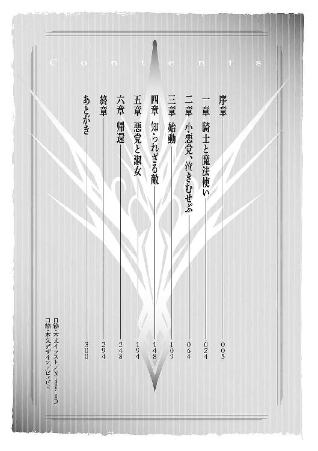

| 聖剣の姫と神盟騎士団 ＶＩ (角川スニーカー文庫) | |
| 杉原 智則 | |
| (2014) | |
聖剣の姫と神盟騎士団Ⅵ
杉原智則

角川スニーカー文庫
本作品の全部または一部を無断で複製、転載、配信、送信したり、ホームページ上に転載することを禁止します。また、本作品の内容を無断で改変、改ざん等を行うことも禁止します。
本作品購入時にご承諾いただいた規約により、有償・無償にかかわらず本作品を第三者に譲渡することはできません。
本作品を示すサムネイルなどのイメージ画像は、再ダウンロード時に予告なく変更される場合があります。
本作品は縦書きでレイアウトされています。
また、ご覧になるリーディングシステムにより、表示の差が認められることがあります。

序章
一族は、パルーサ・ベイという獣面人身の神を信仰していた。
しかし少女は、神へ捧げる祈りの文句ひとつも知らない。
覚えているのは、木の高い位置に飾られた、パルーサ・ベイの顔をかたどったとされるマスクの数々。ぎょろりとして、原色の炎で縁取られた目が、殺しの技術を競いあう自分たちを、はるか高みから常に見おろしているような気がしていた。
密林のなかに住まいを構える彼ら部族は、外界とはほとんどの接触を断っていた。が、年に数度だけ、外界からの使者が訪れることもあった。彼らは例外なく金の詰まった袋を手にしていた。
一族はその古くから、国や都市、各勢力の要請にしたがって、膨大な額の金と引き換えに暗殺や破壊工作、情報収集などの任を請け負ってきた。そのための技術や能力を代々受け継いでおり、一族に生まれた者は、男であれ女であれ、幼いころから皆厳しい修行に明け暮れねばならなかった。成人を迎える前に命を落とす者とて多かった。またそうでなくとも、修行半ばで能力が足りぬと判断されたり、若いうちから病や怪我で『業務』をこなせなくなったりしたら、その者は奴隷のような扱いを受ける羽目になった。下働きに従事させられ、年下の者にも足蹴にされた。
少女の母は、その奴隷であった。
すぐれた暗殺の腕を誇っていたはずが、ある仕事で負傷したことで右脚が動かなくなってしまい、まともな働き手ですらなくなった。少女の母は暗殺の腕ばかりか、容貌も人並みはずれていたため、一族の有力者たちがこぞって求婚してきたが、そのすべてを袖にした。したがって、奴隷扱いされた。同じ奴隷の立場にあった男と半強制的に結ばされ、少女を設けた。
母は、少女に持てる技のすべてを叩き込んだ。
娘への愛情ゆえにではなかった。母は娘を自分と同等の暗殺者に育てることで、自分の力と知識こそがほかの誰よりもすぐれているのだと一族に証明しようとしていた。
自然、少女の修行はほかの誰よりも厳しいものとなった。母は容赦しなかった。何度も殺されかけた。
「母と思うな」
といった。
「おまえはその辺で拾った瘦せ犬だ」
ともいった。棒で叩かれ、鞭で打たれ、拳で殴られ、水を浴びせかけられ、首を絞められているうちに、少女も相手を母と思うのをやめた。ついでに自分を人間とも思えなくなった。一日の餌欲しさに芸を披露する犬そのものだった。
母は確かにすぐれた暗殺者だった。少女は十五歳にして、一族の誰もがおよばぬ技を身につけた。そして修行の過程で自我を殺してきた賜物か、彼女はなにより、なりすましの術に長けるようになっていた。ほかの人間の姿をひと目見て、言葉をひと声交わしただけで、その人間の動きや声を見事に真似ることができた。
一族の長は、そのため、少女に目をつけた。
噂があった。
半月前、とある国の第二王子から暗殺の仕事を依頼された。標的は、その依頼主と次期国王の地位を争っていた第一王子。つまりは血をわけた実の兄だ。が、このようなことは珍しい話でもない。さすがに一国の王族相手とあって、仕事は困難を極めたが、一族のなかでも腕利きの者数名を派遣したため、無事に成功した。
しかし、依頼主である第二王子自身が、一族の存在を恐れた。彼らの口から暗殺の事実が洩れるのを恐れてか、あるいは自分以外の誰かが一族を利用し、自分にこそ暗殺の刃が突きつけられるのを恐れてか、彼は一族の壊滅を望んだ。近日、なにか理由をつけて軍勢を編制し、密林に差し向けるのではないかという噂が立った。
もとより各地に密偵を放って、情報収集には一日の長がある一族である。
反応はすばやかった。
一族には、パルーサ・ベイに仕えた九匹の人面獣になぞらえて、獣の名を冠した九人の特別な暗殺者がいた。彼らには獣の名と仮面、そして住まいと奴隷を持つ権利を与えられていた。ほかならぬ第一王子暗殺の任で、ひとりが命を落としていたため、空位になっていた獣の座に、少女が推挙された。
あまりに若すぎる昇進に、反対の声もいくつかあがった。が、長その人による推薦であったから、結局はその声ことごとくが抑えつけられる結果となった。
長は、ひと晩の儀式を経て、『紅玉の喉と炎の嘴を持つ人面鳥リヴィ』の名を少女に与えた。
そして同時に、名を得たばかりの少女に、ひとつの任務をも授けた。
──第二王子の命を奪え。
一族の存亡にかかわる事態である。ことは速やかに、そして確実におこなわれなければならない。長は、これも周囲の反対を押し切って、秘伝の魔道具をリヴィに託すこととした。
見た目は、単なる一枚の布である。ただ質感が人間の皮膚に似ていた。
このころ、一族は第二王子に関する情報をくまなく集めていた。ひと月に一度か二度、王子がひそかに市井の女と逢瀬を重ねていたことを知った。情報収集のための刺客はそのままかどわかしの刺客となって、その女性を密林のなかへさらってきた。
薬を飲まされ、意識を失って横たわるその女性に魔道具の布をかけた。すっぽりと覆い包む。そこへ、あらかじめ短剣で傷つけて採取しておいた彼女の血を、一滴、布の上から垂らした。すると布の表面に、あざやか過ぎるほどに赤く、女性の姿が浮きあがった。
リヴィは自分の指を短剣で突き刺すと、その上からさらに自身の血をも垂らした。
数秒後、布を剝がす。女性はただ眠りこけている。
今度はリヴィがその布を頭から被った。布の表面から見る見るうちに赤い色が剝がれ落ちていった。では女性の姿が消えたのかというと、真実は逆だった。布そのものが形を変えていた。時に膨張し、時に大きくへこんで、内部にいるはずのリヴィの身体などはその変化にしたがってちぎれてしまっているのではないかというほど激しく蠢いたのち──、そこには、地面に横たわっているのとそっくりそのまま同じ姿をした女性があらわれていた。
秘伝の魔道具による力である。人間の姿を写し取ったその布を被れば、老若男女、いかなる者の姿にもなりおおせる。
密偵、暗殺を生業とする彼らにとっては有能この上ない魔道具だったが、歴史の長い一族においても、これを使いこなせたのはいままでわずかに二人しかいない。一分の隙もなく他人になりすますとは、たとえ魔術の力であろうとも並大抵のことではなかった。大半の人間は、その複製の途中、骨格や筋肉の変化に身体がついてこられずに、その場に血を吐いて絶命するのだった。
リヴィは、見ず知らずの女性へと見事なまでの変身を遂げた。が、さすがに足もとをふらつかせるなか、
「しかとせよ、リヴィ」
長が、骨ばった手で女性の──いや、リヴィの両頰を叩いた。はっとしたようにリヴィが目をしばたたかせる。
「心に強い障壁をつくれ。そなたはリヴィ。その名ばかりは忘れるな。その名さえ忘れなければ、殺しの腕も、一族の存亡を賭けた任務のことも決して記憶の底に沈むことなどあるまい」
意識もなく横たわっていた女性は、部族の家に運ばれていった。この魔道具、ひとつだけ厄介なのは、姿を写し取られた本人が命を落としてしまうと、その姿を複製する魔力もともに失われてしまうことだ。したがって王子の恋人であるその女性は、リヴィが任務を果たすまではこの密林にかくまうこととなった。
リヴィは、はじめてその密林から外へと足を踏み出した。
あらかじめ各地に潜ませておいた一族の人々から協力を得つつ、リヴィは姿を複製した女性の家へと潜り込んだ。
そして任務を実行した。
連日、血へどを吐くようだった日々を思えば、なんということはない任務だった。
なにしろいまのリヴィは、姿かたちから、その声、匂い、はたまた記憶にいたるまで、なにからなにまで王子が恋した女性そのままであった。
ちなみにその女性は齢四十を超える。当時十五のリヴィは、心身からその女性になりすまし、こちらも女性からすると十は年下の王子をあたたかく家に迎えると、酒を振るまい、寝所をともにした。
王子は、明後日に戴冠式を控えていた。国王ともなれば、もうみだりに街には下りてこられない。これが最後の逢瀬のつもりであった。そしてそれが彼の過ごした最後の一夜ともなった。
それで、リヴィの任務は終わったはずだった。が、彼女が手にした刃は、王子の血ばかりでなく、さらに二人の生き血を欲した。
無事密林へと帰還したリヴィは、その夜、厳重な警戒の目を縫ってとある建物に忍び入ると、そこで眠っていた部族の長を殺害したのである。
復讐であった。
愛する人を奪った者への。
ここでいう愛する人とは、リヴィ自らが手にかけたはずの第二王子その人のことだ。
もちろん、面識はない。殺害するその日にはじめて顔をあわせた。ではそのときに恋に落ちたのかというと、それもちがう。
リヴィの未熟さゆえでもあったし、ある意味においてはリヴィの才能の豊かさゆえでもあったろう。あの魔道具の布は人の姿かたちばかりでなく、その人間の記憶までも複製する。であるからこそ心身ともにその人物になりきれるのであるが、もともと自我が限りなく薄いリヴィは、その記憶の波に本来の自分を吞み込まれた。任務ゆえに王子を殺害したものの、その王子を愛する女性の心までもがリヴィ本来の心になり代わっていた。
ゆえに、復讐を誓った。
愛する人を殺害するよう命じた部族の長を殺し、そしてもうひとり、愛する人を奪う力を自分に与えた母親の首をも、リヴィは刎ねた。
二人の返り血を浴びたリヴィは密林を離れた。
当てもなく各地を放浪した。殺しを生業として日々を過ごしながら、次第に女性から与えられた心の枷からも離れていったが、族長や母を殺したことに後悔はなかった。というよりも、元来の心が戻ったとて、リヴィに未来を案じたり過去を振り返ったりという行為ははなからできはしなかった。
二年の月日が過ぎた。
リヴィは、ふたたび獣面の神が木々の上から見おろす密林のなかにいた。一族が各地に派遣した刺客により、ついには見つかって、抵抗もむなしく連れ戻されたのである。その場で処刑されるかと思いきや、
「おまえに生きのびる最後の機会をくれてやろう」
縛りつけられたリヴィを前にそういったのは、現在の長。リヴィが殺害した長とはかつて反目する関係にあった。結果的にリヴィのおかげで長としての地位を手に入れた彼は、
「別勢力に雇われて、やはり部族の壊滅を狙って暗躍する傭兵がいる。この男、並々ならぬ剣の遣い手で、すでに九匹の人面獣のうち、半分が討たれた。おまえに獣の名と地位を残してやるゆえ、五匹目の刺客として、この男の首を見事刎ねてみせよ」
リヴィは引き受けた。そうする以外になかった。自分の命が助かるため、などではない。彼女には生きる目的も意義もなかった。殺し以外のなにかを考える思考の力さえなかった。部族に力を証明しようと最後までもがいていた母のほうが、まだしも人間らしかった。
標的の名は、グラジス・エストール。
リヴィは例の魔道具の力も借りて、グラジスに接近した。
いかに凄腕の剣士であろうと、友人に一分の隙もなくなりすましたリヴィを相手にしては為すすべもない。実際、リヴィは眠っているグラジスの喉首に刃をあてがうところまではいった。拍子抜けするほど、ごくあっさりと。あとはその刃を引けばよかった。
その手を、摑まれた。
愕然となったリヴィは、力を振り絞って抗った。当然、彼女には殺しのための格闘術も叩き込まれてある。しかし一気に手首をひねられて寝台の上に押し倒されたあとは、身動きすらままならなくなった。瞬時にして、口に含んであった毒針を飛ばす。それもかわされた。
こうもたやすくリヴィの殺しを封じながらも、
「凄まじい腕だ」
グラジスは真実、感嘆したような顔と声でいった。それがなによりリヴィの自尊心を傷つけた。殺しの腕を披露したその相手が自分を賞賛するなどとは。たぎるような怒りを覚えてはじめて、リヴィは自分に自尊心などというものが存在することを知った。
「おれひとりでは殺されていたよ。まったく、世のなかは広い。いろいろな奴がいるものだ」
グラジスは意味不明のことを口にした。「ひとりでは」というが、ほかの誰かが近くにいるということはない。はじめて覚えた怒りの感情も含めて、リヴィが一種の混乱状態に陥っていると、グラジスは顔をぐっと近づけてきて、
「どうやってなりすましたんだ？ まったくおれは気づかなかったが」
妙に熱意のこもった目を向けてくる。リヴィはたじろいだ。好奇心に爛々と輝く目など、これまで向けられたこともない。
「は、放せ」
こうなれば最後の手段だ。秘伝の魔道具は決して露わにしてはならないといわれていたが、どのみち、自分が殺されてしまえば同じこと。リヴィは肌にぴったりと貼りついていた魔道具の布を取り払った。
グラジスからすれば、リヴィが蛇さながらに脱皮を遂げたように見えた。
「おおっ！」
叫びをあげるグラジスの手に薄皮一枚残して、リヴィ本来の裸体がするりと抜け出る。
その隙に蹴りを見舞って、あとずさったグラジスの脇をすり抜けて背後にまわり、首に腕を巻きつかせる──はずが、最初の蹴りこそ当たったものの、脇をすり抜けようとするさなかに首根っこを摑まれ、ふたたび寝台の上に押さえつけられた。
「それが本来の姿か」グラジスは驚きも覚めやらぬ顔でいった。「なんと、まだ少女じゃないか」
一方のリヴィは、怒りも驚きも痛みも、その他諸々の衝撃も通り越して、なにやら泣きたい気分になっていた。部族が数百年にもわたって受け継いできた殺しの技とはこのていどのものかと思った。こんなもののために自分は血へどを吐いてきて、そして母をも殺したのかと思った。
（母？）
とそのときリヴィは実際、滂沱として泣いている自分も知らぬげに、ぼんやりと心の片隅で考えていた。
（母？ 母か──母。そうだ、こんなものに命を捧げていたのは母も同じだ。その母をわたしは殺したのだ。親子二人して、なんて味気のない人生だろう）
微細な稲妻めいた感情が思考となり、思考が言葉として形を得る。こんなことは生まれ落ちて以来はじめてのことだったかもしれない。それが涙となって頰を伝っていくのだ。
「なるほど、魔道具だな。これで他人の姿になり代わるのか」
グラジスはリヴィを押さえつけながらも、もう片方の手で布を拾いあげていた。
（奪われる）
とリヴィは思った。とともに、
（もう、わたしの知ったことか）
とも思った。どうせ傭兵ひとりにあっさりはねつけられるだけの部族であり、その歴史であった。
「誰にでもなりすませるものなのか」
グラジスが聞いてきた。リヴィは首根っこを押さえられたまま、「ああ」と小さくいった。一瞬のうちにあふれ出てきた感情の波は、これも一瞬のうちに引いて、あとには小さくたゆたう凪のような心の安静があった。このとき、リヴィは自分の命の行方さえも度外視して、諦観という、これも生まれてはじめての心地いい感情に身をゆだねていたのだが、グラジス・エストールは、そんなリヴィをもふたたび動転させるような行為に出た。
リヴィの前にその布を翻すや、
「すると、おれにもなれるのか。なれるというなら、やってみせてくれ」
と頼み込んできたのだ。
リヴィは呆気に取られた。グラジスは興味津々といった眼差しで自分を見つめている。ややあって、
「......ああ」
ともう一度リヴィがいうと、グラジスはぱっと手を放しざまあとずさった。さすがに剣を手もとに寄せて警戒してはいるが、目には拭いきれぬ好奇心があふれている。
リヴィはなんとはなしにため息をついた。母親が自分を叱りつけるときの癖であった。自分は一度もしたことのない行為だ。今日は生まれてはじめてのことがなんとも多い。
「血を一滴もらうぞ」
リヴィがいうことすべて、グラジスは大人しく従った。グラジスにまず布を被せて、彼の血を垂らす。正直、このまま喉首を暗器で搔き切ってやろうかとも思ったが、
（どうせ）
という諦念がふたたび頭を占めつつあった。その白い虚脱感にも似た感情のなかに、実は自分自身にもかすかな好奇心が含まれていたことに、リヴィは気づいていない。
自分の血をも垂らし、赤い姿が浮きあがった布を取り払い、それを自分が被る。
肉体の変化する激痛とともに、グラジスの内面の部分もが雪崩れ込んできた。
以前は、その心に吞まれてしまったリヴィであるが、いまは魔道具の扱いにも慣れてきている。痛みからも、他人の心からも、さっと心身を遠ざけた。他者の心を丸ごと受け止めようとするのではなく、それを別の場所から眺めるがごとき立場へと視点を移動させるのだ。あとは、その人物になりすますために必要最低限の情報のみを拾いあげればいい。
まずはグラジスの内面、その表層的な部分が、移動させた視点の先を流れ過ぎていった。
あたたかみのある感情がリヴィ本人の内面で広がった。グラジスの、おおらかで、朴訥とした人柄がうかがえるようだった。驚くべきことはなかった。敵陣営から殺人鬼、強姦魔として恐れられる男とて、家族にはやさしいただの人間であることが多い。
が、グラジスのさらに内面が暴かれていくうちに、リヴィは驚きに打たれた。
雪崩れ込んでくるグラジスの記憶は、量、勢いともにあまりに膨大。激しさ、深さ、その広さ──どれを取っても桁外れだ。
（なんだ、これは。なんなのだ、この男は）
まるで数百年、いや、下手をすれば一千年もの時間を生き抜いてきたかのように、その記憶は普通の人間の何十倍もの長さがあった。
リヴィはうっかりその記憶の波に本来の心を触れさせてしまった。恐怖や不信感を上まわる、抑えがたい好奇心がゆえだったが、ほどなくしてリヴィは苦鳴をあげた。
──気がつけば、グラジスの膝の上に抱かれていた。
布は取り払われている。あまりにリヴィが苦しそうにしていたので、見かねて彼女の身体から剝がし取ったのだと説明した。
「大事ないか」グラジスは、自分の命を狙った少女を不安げに見やっていた。「途中で取ってよいものかどうか迷った。しかしあまりに苦しそうだったからな、つい」
大丈夫だ、というサイン代わりに、リヴィはひとつ顎を引いた。
それから、またリヴィは大粒の涙をぽろぽろとこぼしはじめた。
「大丈夫、大丈夫。もう無理強いはしない。悪かったな」
グラジスはリヴィの頭や肩をぽんぽんと叩いた。そうされながら、リヴィは、一見、どこにでもいそうな平凡な男の顔を、涙でじんわり霞んだ視界のなかにおさめつづけていた。そして、
「おまえは......人間だ」
「なに？」
「ただの人間だ」
リヴィにはわかる。それこそが、彼女にとって、なにより衝撃的な事実だったのだ。
「怪しげな魔法を使うのでもない、妖精の血が入っているわけでもない。おまえはただの人間。その人間が、何人ぶんもの人生に匹敵する記憶を抱え、なおかつすべてを受け止めている。わたしには耐えられない。ただかすかに触れただけでも、心がずたずたに引き裂かれそうだった。なのに、おまえは」
リヴィは手をあげた。その指の隙間に暗殺用の器具はなかった。ただ彼女は心の命ずるままに手を伸ばし、グラジスの頰に触れていた。
「おまえの心に広がる世界は、あまりに広い。人間ひとりが見てはならないというほどにあまりにも。そんな世界のなか、傍から見ていると、微笑みたくなるくらいに人を愛しているのに、同時に、暗殺者のわたしがぞっとするほどに冷たい覚悟を抱いている」
グラジスの顔がはっとなった。自分の取り払った布と、リヴィの顔とを見比べて、そして、
「すまん」とそういった。「そうか、この魔道具はそういうことか。知っていたらこんなことはさせなかった。自分の......心を、他人に味わわせるつもりなど」
リヴィはわれしらず微笑んでいた。グラジスが「自分の」といったあとにやや間が生じたのは、本当は「苦しみ」といいたかったのだ。だが、グラジスはそういい切ることをためらった。まるで自分を憐れんでいるように思えたから、「心」といい換えたのだ。ますますもって、普通の人間だった。
と、グラジスは少女の頭を寝台にそっと横たえると、手もとに引き寄せていた剣を改めて手に取った。
窓から外をうかがう。なにか気配を察したらしい。
「獣面をつけた人間が、数名。宿は囲まれているな」
「部族の刺客か。わたしは完全に信頼されていたわけではなかったらしい。まあ、無理もないか」
「逃げ道は塞がれているようだ。皆、おまえほどの腕前を持っているなら厄介だな。ひとりで相手にできるかどうか──」
「ひとりなら困難でも、二人ならば十分に突破できよう」
リヴィは寝台の上に膝立ちになっていた。例の魔道具をマントのようになびかせて肩に羽織る。
「どういう意味だ？」
さすがのグラジスも眉をひそめた。リヴィは相手を侮蔑するかのような笑みを浮かべた。笑い慣れていないから、意識して笑おうとするとこんな表情になる。
「わたしはいままで、戦いにも生きることそのものにも、目標や意味は見出せなかった。見出す意義さえ感じなかった」
すらすらと心を形にしながら解き放っていくことの、なんと心地よいことだろう。それを耳にしてくれる、つまり心を受け止めてくれる者がいることの、なんと不思議なことか。形となって放った心は、誰かに受け止められ、あるいは跳ね返されることで、より強固なものとして自覚できるようになる。
「わたしはもう誰かに命じられて戦いはしない。自分の意思で剣を振るう。その意思に従って、おまえの背中を守ってやろう」
「それは、なぜだ？」
グラジスがまごついた顔になった。
（厄介な）
という表情にも見えたのは、自分の心を見透かしたリヴィの存在が、真実、疎ましかったからかもしれない。もう一度リヴィは笑った。今度は自然な笑みになった。そして、
「わたしになりすませない人物などいない。だから、おまえを見ていく。いまは無理でも、いつかおまえになってやろう」
本当ならば、いいたいことはほかにいくらもあった。なのに、心の深い部分でそれを形にすることを拒んだ。
これもはじめての経験だ。
聖剣団部隊長〈顔なき影〉のリヴィが誕生した瞬間であり──、それが、五年前のことだった。
一章 騎士と魔法使い
１
あちこちから火の手があがり、建物を打ち壊す兵たちの蛮声轟くラグナの谷で、ハスター・エンデコは三等兵ベオルの案内のもと、弟キーファ・エンデコのもとへと辿り着いた。
一応は指揮官の立場であるから、キーファは兵たちに囲まれ、守られている。槍と甲冑の隙間から鎖かたびらを着込んだ弟がちらりと見えて、ハスターは胸が斬られるような思いを味わった。いずれ晴れの舞台に立つ弟の姿を夢想したことはいくらもある。ある意味、念願のかなった場面でありながらも、ハスターの表情は優れない。
ベオルがいち早く接近して、
「ハスターさまご到着」
そう告げると、キーファはキーファで、「敵襲」と怒鳴られたかのような顔をした。
「あ、姉上？ 姉上が、なぜここにいらっしゃるのです」
「密偵の任を負い、ラグナ郷へ侵入していたのだ」
指揮官の前でありながらハスターは踵も揃えず、口調もぞんざいに言い返す。
「そ、そのようなこと、はじめて伺いました」
「余人に打ち明けてはならぬ秘密の任務だったからだ。それよりも、なぜここにいるか、と聞きたいのはこちらのほうだぞ、キーファ」
「どういう、ことでしょう」
キーファはちらちらと周囲を気にするような顔をする。もともと十六歳という年齢に身体の成長が追いついていないこともあって、そんな態度がますます幼く見える。鎖かたびらやら剣やらで武装しているのが痛々しいくらいだ。ハスターの口調は自然と辛らつになった。
「いずれおまえがエンデコ家を継ぐのはまちがいないが、しかしいまはわたしが当主代行だ。誰もおまえの出陣を許してなどいない。なのに、なぜここにいる」
「姉上。そ、それは」
火に照らされるキーファの顔が赤らんだ。
そもそもは、姉が行方も告げぬまま家を留守にしていたため、王からの召集を断りきれず、キーファがいわば『名代の名代』という形で王城へ赴いたのだ。そこでアグロヴァに直接同行を求められて、断れたはずがない。
が、それを一から説明するのはいかにも子供っぽい。キーファはぐっと奥歯を嚙みしめてから、
「わたしとてエンデコ家の男子です。これは、わたしが将軍から請け負った大事な任。姉上であろうとも、とやかくいわれる筋合いなど、ありません」
「なんだと」
対するハスターも顔に血の気をのぼらせた。いままで喧嘩のひとつもしたことがない姉弟である。それだけにいったん感情に火がつくと、お互い引く道がわからない。
（おや、まあ）
ここまでハスターを案内してきたベオルは、突然はじまった姉弟喧嘩に肩をすくめた。周囲の兵たちも聞かぬ振りをするのに必死の様子だ。ベオルは最初のうちこそ面白半分に耳を傾けていたが、
「大体、さっきから『わたし』などといっぱしの軍人気取りだが、甲冑も剣も似あってなどいないぞ。おまえにはまだ早すぎるんだ。さっさとそんなものは脱いで本国へ帰れ。将軍へはわたしのほうからご報告申しあげる」
「だからそのようなこと、指図される筋合いなどないといっているのです！」
「まだわからないのか、だから子供だというんだ。おまえが初陣を飾る時期はわたしが決めてやる。いまはまだ早い。いいか、すべてわたしがいいようにととのえてやる。わたしが必ずや父の汚名を雪ぎ、エンデコ家をふたたび武家の名門として盛りたてて、その上で、おまえは晴れ晴れしく戦場に立てばいいんだ。それで決して遅すぎはしないんだ、わかったか」
（ああ、面倒見のいい姉というのは、女親と同じだな）
ベオルは他人事ながら、そんな慨嘆を覚えた。いつまでも相手を子供扱いしたがって、その子の事情やら体面やら、あるいは本人が経てきた選択や決意といったものに、とんと無頓着だ。
さすがにキーファは表情を硬くして、
「もう、もう、おさがりください、姉上。いえ、ハスター百騎長。密偵の任務はご苦労でした。ただし、われわれはわれわれで、将軍の命を受けて動いております。どうかこの場のことはわたしにお任せを」
最終通告とも思える言葉を発した。ハスターは、（これでもわからないのか）というような、啞然とした顔になって、
「待て、キーファ！」ついには声を荒らげた。「なぜ姉のいうことが素直に聞けないんだ。将軍、将軍と、あのアグロヴァの指揮下にいて、おまえは自分が情けなくはないのか」
「軍務であります。カーラーン武者の誰よりも武者らしいと称えられた姉上らしくないお言葉だ」
「だ、だからそういったことはすべてわたしが引き受けるといっている。わたしのいうことさえ聞いていれば、おまえはきちんとエンデコ家の武人としてひとり立ちして......」
「わたしのひとり立ちを拒んでおられるのは姉上のほうだ！」
怒鳴りあう二人の顔が近くなった。
（さすがにこれはお止めしたほうがいいか）
と、ベオルがほかの兵たちと顔を見あわせたときだ。
谷の出入り口がある方角から別の兵が駆け込んできて、キーファの前に膝をついた。
「も、申しあげます！」
切迫した雰囲気に、さしものエンデコ姉弟も口論をやめる。つづいての報告に兵たちがざわっとどよめいた。
「南の包囲陣が崩されました。敵一隊がこちらに近づいてきます！」
「敵？ 〈水霊王女〉か？」
指揮官であるキーファより早く、ハスターのほうが反応した。咄嗟に〈水霊王女〉の名前が出たのは、谷に居残っていた聖剣団は彼女だけだという事実を知っていたためだが、
「い、いえっ、〈竜殺し〉です」
兵は兜の下で顔色を蒼白にさせながら叫んだ。
「〈竜殺し〉ラッセル・アーヴェンが、あらわれました！」
当然、その報告はアグロヴァ・オレットにも届いている。キーファたちと同様、本営も驚きの声で満たされたが、アグロヴァは取り乱しもしなかった。このときがあると予期すればこそ、アグロヴァはグリフォン隊を周囲の偵察に割いていたのだ。おかげで、こちらが準備をととのえて待ち構えられるだけの時間は十二分にあった。
ラッセルは手勢百名とともにあらわれ、包囲網でいちばんぶ厚い南の陣に突き入っているという。谷へ出入りできる道は南側のこの位置だけなので、動きは読みやすい。馬鹿正直ともいえる。ほかの敵ならば陽動かなにかと疑うところだが、なにせ相手はラッセル・アーヴェンだ。
アグロヴァはすばやく指示を送って、南側の防御を何層にも厚くさせた。いかにラッセルが一騎当千のつわものであろうと、準備万端待ち受ければそうそうたやすくは突破されまい。
〈竜殺し〉の登場に一度はおののきかけたカーラーン陣営だったが、指揮官アグロヴァが矢継ぎ早に命令を送っていくうち、腰が浮くような緊迫感も薄れていった。この辺りはさすがに一国の王であったアグロヴァの手並みであろう。
一方のラッセルは、まず精鋭十名のみを後方に引きつれつつ敵包囲陣へと突きかかった。本来、槍を手にするのが正道だが、敵陣を突破、あるいは大勢の敵を搔き乱すのが目的の場合、ラッセルは最初から魔剣イル＝イリュードを手にする。長さにして三メートルにはなる、巨人専用ともいうべき巨大な武器を振るって、なおかつ猛スピードで駆けた。
剣が唸りをあげるたびに強風が巻き起こるかのようだった。風は大勢のカーラーン兵を巻き添えにした。鎧兜をつけた兵たちが玩具の人形のごとく吹き飛ばされていくのだ。ラッセルの進路、その途上にある兵たちは瞬く間に統率を失った。
ラッセル個人のその凄まじい突破力に加えて、彼の率いる小隊は恐ろしいほど連係が取れていた。それぞれ十名、二十名ていどの小隊で散らばった彼らは、ラッセルひとりが中隊、いや大隊にも並ぶ活躍を見せるなか、それを主力に、そして時には囮にもして、包囲の薄くなった箇所を槍で突いては駆け、駆けてはまた槍で突いた。これがまた速い。彼らは共通して、ほんのいっときたりとて馬脚をゆるめない。
ラッセルが嵐のように吹き抜けていったかと思えば、その衝撃が収まりきらぬ隙を衝いて、前後左右から小隊が突きかかってくる。これを追おうとすればまたラッセルが戻ってきて巨大な魔剣を振るう。そしてそのころには先行した小隊がラッセルの進む道を確保している──という具合なので、カーラーンが何層にも敷いたはずの防御陣は一層、二層、三層、と瞬く間に崩されていって、そして、
「南の包囲網、ラッセルに突破されました！」
自身も傷ついた伝令兵がアグロヴァの前に膝をつく結果となった。このときアグロヴァは大天幕から出て床机に腰掛けていたのだが、やや尻をずらすと、
「ほ」
と声を放った。
そのころ、ラグナ郷へ猛打を浴びせた襲撃隊も、「ラッセルに包囲陣が突破された」との知らせを受けていた。兵たちの大半が浮き足立つなかにあって、血気にはやった一隊が、
「後方の陣と挟み撃ちにしてくれる」
と、指揮官キーファの指示も仰がぬまま、谷の出入り口に陣取った。
かがり火を焚きながら三百名ほどで槍衾をこしらえ、投石や弓矢の準備も万全なものにした。もとより道幅が狭い。騎馬はおろか、アリの子一匹たりとて通しはしまいという陣構えだったが、真っ先に姿をあらわしたラッセルは、巨大な剣イル＝イリュードをかざしただけで雨あられと降り注ぐ矢や石を弾いた。そしてその剣を地面に叩きつけると、恐ろしい勢いで馬ごと跳びあがった。カーラーン兵たちが啞然となって見あげるなか、ラッセルの駆る愛馬アルフォスは崖の壁面を横滑りに駆けた。誰かが「逃げろ」と叫んだときにはすでに数名の鎧武者が剣に叩き潰されていた。兵たちのあいだに狂騒が起こった。さらにさらに、ラッセル配下の騎馬兵が、槍の穂先を火に赤々と照らされながら突進してくるとなれば、もはや陣構えなど紙切れ同然となった。
「ひ、退け、退けっ」
傍若無人に谷を荒らしまわっていた襲撃隊は、一転して襲撃される立場となった。
しかし逃げようにも谷の出入り口は南側にしかない。一応は指揮官の立場にあるキーファ・エンデコだったが、この状況では指示を下すどころではなく、姉のハスターもろとも、人波に押されるように、ひとまずは北へ、北へと遁走した。
その途中、
「聖剣団の宿舎を盾に取れ」
とアイディアを出した将兵がいた。
「建物を占拠しろ。馬鹿正直な騎士道を重んじる奴のこと、聖剣団の大事な拠点を火攻めにしようとは思うまい。そこで防衛線を張って、味方が後方から押しあがってくるのを待つのだ」
それがいい、そうしよう──、汗ばんだ顔の兵たちは声を揃えた。ほかに具体的な策など皆無に等しかったからだ。
同じころ、あらかじめ宿舎を包囲していた一隊にも状況が知らされていた。ラッセルが攻めあがってくると聞かされた彼らは、子供のころ、「いうことを聞かないと人喰いの悪鬼が山からおりてくる」と母親に聞かされたときとそっくりの顔つきになったが、
「よし、いち早く建物に入っちまえ」追い詰められた者特有に、やけっぱちの気炎をあげる者もあった。「どんなときでも手柄を逃すな。おれたちで宿舎を占拠して、後続を迎え入れるぞ」
そういって真っ先に剣を振りあげたのは、つい先ほど、『肝試し』と称して宿舎に入ろうとしていた男だった。宿舎を守ろうとした少年トムに槍を突きつけたのと同一人物だが、その彼がふたたび塀を乗り越えて前庭に降り立った直後、
「おい？」
彼につづいた仲間が、庭の中央を指差した。そこに鎮座していた巨人像──ゴーレムが動いたように見えた、というのだが、
「またガキどもの悪戯か？」
男は鼻でせせら笑った。舌なめずりしつつ槍にしごきをくれて、
「今度はあのうるさい女武者どのもいないことだし、とっ捕まえて投げ槍の標的にしてくれよう。いや待て、もしラッセルの知りあいなら、人質にできるかもしれねえぞ」
先ほどトムたちが隠れていた巨人像の背後にまわる。ゴーレムの膝裏に手をかけ、鼻歌交じりに身を引きあげた瞬間、まるでその手伝いをしてやろうとばかりにゴーレムのほうから立ちあがった。「わわっ」と宙吊りになった男が奇声をあげる。
前庭にいた兵たちがどよめくその中央で、ゴーレムは関節をきしませながら、まるで寝起きばなのような仕草で肩をまわして、首を傾け、そして手足を打ち振った。膝にぶらさがっていた男が悲鳴とともに宙を飛んで、前庭に植えられていた木に衝突した。
兵たちの叫び声が交錯する路上にあって、
「ダークめ」
ただひとり、ぼそぼそとした声を発する者がいた。
「ゴーレムの手入れを怠っていたな。関節の反応が鈍くなっているではないか」
突然路上にあらわれたその男は深くフードを被っていたが、下に覗く女性めいた容貌、そして内側にこもったような声からして、聖剣団部隊長、〈魔人形遣い〉ゲルウィンその人にほかならなかった。
２
鉄壁の包囲網を敷かれたラグナ郷に、〈魔人形遣い〉はいかにして潜り込んだのか。いや、そもそも彼は住居としていた古代遺跡の塔を破壊されたとき、ラグナ郷とはちがう道へ向かったのではなかったか。
実際、ゲルウィンは悩みあぐねた。グラジスのいない、その他大勢の人々がいる場所へ足を向けただけで身体中に冷や汗を搔く始末だ。しばし考えた末の結論として、
（ひとまず、ひとりでじっくり研究できる場所をほかに探そう。そこで黒魔術への対抗策を十分に練って、グラジス団長の魂をいずれ取り戻すことができれば、ラグナの谷を救うことにもつながるはずだ）
などと自分に言い訳をして、いったんは確かにラグナ郷から離れた。が、数日後、食糧を買うためにメイドゴーレムに立ち寄らせた村のなかで、
「ラグナ郷がカーラーンに包囲された」
との噂を耳にすれば、ゲルウィンとて自分を省みずにはいられなかった。この瞬間、脳裏に去来した声がある。
「そんなに怖いか？ ひとりぼっちでいることがそんなに怖いか？」
こういうとき、ゲルウィンを決意にいたらせるのは常にグラジスの姿であり、声であったはずだ。しかしいま響きわたったのは団長の声ではなかった。ゲルウィンはフードの下で固く唇を嚙みしめると、塔から持ち出せたわずかばかりの貴重品を抱えたメイドゴーレムたちに命じて、ともに踵を返した。
他人との接触をなにより恐れるこの魔法使いにとって、一歩一歩が茨の道であった。身体だけがこのままラグナ郷へ向かい、心だけがちがう場所へ飛んでいけたらいい、とも願った。それでも歩みをゆるめることはなかった。
そしてカーラーン軍に包囲されたラグナ郷を前にしたとき、ゲルウィンは比較的陣の薄い谷の西側に迫った。そこで、メイドたちをあたかも近所の村からやってきた娼婦のようによそおわせて、カーラーン陣へ接触。以前、襲撃隊が噂にしていた「西の奴ら、美人と酒を飲んでいるらしいぞ」とはこのことだ。兵たちがすっかり油断した隙を衝いて、ゲルウィン本人も谷へ接近した。本来、人や馬が出入りできるような道があるのは谷の南側だけだ。西側からはおよそ人では踏破できぬような断崖や峻険な渓谷がつづいている。が、ゲルウィンはこれもメイドたちの力を利用した。たとえ見た目はあでやかな美女でも、そこは人ならぬ身、ゲルウィンを背負いながらひょいひょいと崖をのぼって、一歩足を踏み外せばもう谷底に真っ逆さま、という細い足場を、跳ぶように渡っていく。
かくして、谷の包囲網が完成してから三日目の夕暮れ、ゲルウィンはラグナ郷へと辿り着いたのである。
ゴンゴル、とダークが名づけたゴーレムに〈手〉を宿して動かしているのも当然彼だ。あとずさってきた兵が彼を見とがめて、「あっ」と声をあげる。
「こ、こ奴、〈魔人形遣い〉ではないか」
「討ち取れ。そうすればゴーレムも止まる！」
槍や剣が怒号とともに唸りをあげたが、彼らはゲルウィンに触れることもできなかった。〈魔人形遣い〉の後方に従っていた女性たちがひと跳びで兵たちの懐に飛び込むと、拳や蹴りを見舞って彼らを昏倒させたのだ。
新たな脅威の出現に兵たちが息を吞むより早く、ゲルウィンはゴンゴルに近づいて、差しのべさせた腕を伝いあがった。〈魔人形遣い〉を肩の上へと乗せたゴンゴルは、庭にいた兵たちを苦もなく排除すると、塀を跨いで門外へとその巨体を進めた。
一方、谷にまで攻めあがってきた〈竜殺し〉ラッセル・アーヴェン。
巨大な魔剣イル＝イリュードを振るって土煙と血煙を同時に巻き起こしながら、彼の目は怒りに燃え立っていた。
「おのれ、カーラーンめ！」
谷から離れて、黒魔術を打ち破るためのあらゆる手段を求めていた彼が、カーラーン軍の動きを聞き知ったのは五日前だ。ちょうどカーラーン領の近くにまで馬を進めていたため、大軍勢の動きを察知することができた。
ラッセルはわずかな手勢とともに、ラグナ郷へ馬を急がせた。そして駆けつけたときには谷は包囲され、あろうことか火をかけられていた。ラッセルの目がその炎を宿した瞬間、〈竜殺し〉は一陣の風、いや、暴風と化した。
触れる者、近寄る者すべてを巻きあげながら、こうして一路谷のなかにまで突き進んできた。
そこから逃れようとするカーラーン兵、そしてキーファ、ハスターを含んだ襲撃隊中枢の隊は、苦肉の策として聖剣団宿舎を占拠しようとしたが、前述したとおり、ここはゲルウィンの駆る巨大ゴーレムに立ちはだかられた。
カーラーン部隊は、〈魔人形遣い〉と〈竜殺し〉とのあいだで板挟みになった。いくも戻るもならず、さすがに兵たちが青ざめる。馬を進めてきたラッセルは、その兵たちの向こう側で仁王立ちになった巨大ゴーレムと、肩に乗った影に気づいて、
「ほう、ゲルウィンか。討ち取られたと聞いていたが、さすがにしぶとい」愛馬の脚を止めつつ大音声を放った。「ゲルウィン、ここは構わん。敵が南方から陣を押しあげてくる可能性がある。出入り口で迎撃してくれ」
「承知」
ともゲルウィンはいわなかった。もともと仲間内でも口数の少ない男だ。彼はかすかに頷くと、ゴンゴルに歩を進ませた。震えあがった兵たちが肩を寄せあい、自然と道を譲る格好になったので、巨大ゴーレムは悠々と南へ去っていった。
これ幸いとばかり、兵たちの大半が北の方角へ逃げていこうとしたが、そのときにはラッセル配下の騎馬隊がぐるりと街路をまわり込んでいる。すべての道を封鎖できるだけの数はなかったので、少数の兵は家々の塀をのぼり、軒下をくぐって、なんとかこれを突破したものの、どのみち出入り口はゲルウィンが塞ぐのだし、危険な崖を登っていく以外に逃げ道はない。
ラッセルは馬から下りざま、イル＝イリュードを地面へと突き刺した。
「さて」
と彼は声をあげた。年齢の割に多少童顔で、笑えばそれなりに愛嬌もあろうかという男だが、なにしろ伝説になりつつある〈竜殺し〉。ひとつにらみを利かされただけで、カーラーン兵たちは心底から震えあがった。
「好き放題やってくれたようだが、このラッセル・アーヴェンが来たからにはもはや袋の鼠だ。が、おれは追い詰めた弱者をいたぶるような真似はせん。そちらの指揮官は誰だ。おれと一騎打ちせよ。見事おれを討ち取れたなら、兵たちには手出しせず谷から逃がしてやろう」
胸をそびやかす。いかにも正当騎士を自認する男らしいやり口だが、カーラーン側の指揮官というと、キーファ・エンデコにほかならない。初陣を迎えたばかりの少年の顔色は紙のように白くなった。
「どうした」ラッセルが重ねて声を張る。「兵の後ろにこそこそ隠れているつもりか。ならば仕方ない、貴様ら全員この魔剣の餌食に──」
「わたしだ」
とこのとき、兵のあいだから進み出てきたのは、ハスター・エンデコだった。弟がはっとなるのを尻目に、
「わたしがこの隊の指揮官だ。その申し出、ありがたく受けさせていただこう」
「ほう。ありがたく、だと？」
「部下たちを逃がしてくれるばかりか、〈竜殺し〉の首を獲る機会をも与えてくださるという。これ以上ありがたい申し出がこの世にあろうか」
「ふん」ラッセルは鼻でせせら笑った。「たいした度胸だが、それは戦いを知らん無知ゆえだ。そも、おれは婦女子になど剣は向けん。おい、カーラーンの男ども。貴様らの脚のあいだにぶらさがっている剣はお飾りか。女に一騎打ちを任せて、あとは高みの見物でも決め込むつもりか？ この際、指揮官でなくても構わん。われこそはと思う剛の者は、いますぐ名乗りをあげよ！」
「だから、その剛の者がわたしだといっている。目が腐っているのか、〈竜殺し〉。このわたし、エンデコ流蛇双鞭術の後継者をそこらの婦女子と同じにするとはな。なんなら、まずはこの蛇の一撃にて、貴様の脚のあいだにぶらさがっている剣とやらを嚙みちぎってやってもよいのだぞ」
ハスターが両腕を身体の前ですばやく交差させる。右手には鞭が握られ、左手の袖からは黄金色の体皮をした蛇がにゅっとばかりに頭を覗かせた。蛇が鎌首をもたげ、ラッセルを威嚇するように牙を剝く。
「あ、姉上」
背後にいたキーファが震え声をあげる。ハスターは一度だけ後ろを向いて、
「おまえは仲間をまとめて北から突破せよ。相手はラッセル配下の騎馬兵だが、数はこちらが有利だ。おまえの鼓舞次第だぞ」
「し、しかし。指揮官はわたしです。わたしがいかねば......」
「仲間を逃がすのも指揮官の仕事だ。それとも、おまえならばラッセルに勝利できるというのか」
キーファが押し黙ってしまったときには、ハスターは前へと向きなおっている。ラッセルは広い肩を上下させた。
「どうやらカーラーンに真の男はおらんようだな。おれも、女と一騎打ちしたとなれば騎士の名折れ。仕方ない、この話はなしだ。全員叩き斬ってくれる」
「まだ女というか、ラッセル。噂に伝え聞くその強さが、半分ほども本当なら、とっくにおまえはどこぞの王になっていたろうに、グラジスがおまえにしっかりと首輪をつけて飼っていたわけがわかったぞ」
「なに？」
「物事の表面しか見ていない。騎士道だのなんだのと、子供のとき読み聞かされた絵空事に夢中になっているだけのガキ同然。さぞ、おまえの父もグラジスも手を焼かされたろうな。同情さえ覚えるよ」
グラジスに加えて父のことを持ち出したのは、以前、ラッセルを黒魔術の罠にかけたとき、「父に関する心理的弱点を衝いた」と魔法士から簡単な説明を受けたことがあったからだ。
果たして効果はあった。ラッセルの顔色がいっぺんにどす黒くなる。ただでさえ大きい目がさらにひん剝かれたが、次の瞬間にはむしろ糸のように細くなった。いってしまえばただそれだけのことだったのに、敵対する立場のカーラーン兵はおろか、ラッセルに長らくつき従ってきた騎兵たちまでもが、声もなく馬上で鎧を震わせた。
「いいだろう、女」ラッセルはイル＝イリュードの柄を摑んだ。「だがこれは一騎打ちではない。無知のおまえに稽古をつけてやろうというのだ。そして稽古ゆえ、おれはおまえの命を奪いはせぬ。ただしおまえは全力で来い。おれの首を獲るつもりでな。そうでなくては鍛錬にもならぬ」
「言葉遊びはいい、〈竜殺し〉。それより、先ほどの約束どおり、おまえの首を獲れば、仲間は解放してもらえるのだろうな」
「首とまではいわん。おれに三回以上剣を振らせたら、この稽古、おまえの勝ちとしてやる」
ラッセルは地面に突き刺さった巨大オブジェのごとき剣をやすやすと引き抜いた。それを肩の上でひと振りすると、たちまちのうちに通常サイズの剣へと変化する。
ハスターは改めて身構えた。対するラッセルは肩の上に剣を担いだまま、悠然と突っ立っている。足腰に力が入っている風でもない。
（勝機は──）
ある、とハスターは踏んだ。
相手を軽んじているわけではない。逆に、ラッセルのほうはあきらかにハスターを見下している。そこにつけ入る隙はある。エンデコ流蛇双鞭術は、経験豊かなつわものにこそ絶大な効果を発揮する技だ。左右でそれぞれ軌道の異なる蛇と鞭の攻撃は、彼らが頼みとするこれまでの経験を大きく裏切るからであり、なまじ腕に自信を持っている武人ほど格好の餌食になりやすい。
（三回剣を振らせるくらいならば）
ハスターは一回軽く呼吸すると、すばやくラッセルとの距離を詰めにかかった。まずは陽動。これで敵の出方を見る。が、ラッセルは動かない。剣の位置も、足の配置も同じまま。なにかしら反応があると思っていたハスターには予想外だ。
（ちいっ）
このまましかける以外にない。右の鞭を振るう。先端部がラッセルの側頭部に吸い寄せられた。間髪をいれず、左の蛇を見舞うために足を大きく踏み出した──その刹那、ラッセルの姿が搔き消えた。
以前、ラッセルはゴンゴルの上にいたダークに斬りかかったこともある。ゴンゴルの足や膝を蹴った上での跳躍だったが、まるで軽業師のようなその身のこなしを、彼は重い甲冑を着けたままでやってのけた。いまも同じく、ラッセルは跳躍するとともに左手側の塀を蹴ってさらに跳びあがった。着地したのはハスターの真後ろ。
ハスターの背筋に冷たい感触が広がった。それに促されるように彼女は前に踏み込んだ足に全体重を乗せ、前方へ一回転した。剣が風を裂く音が聞こえたのはほぼ同時。
「ほほう」ラッセルは、わざわざハスターが起きあがって体勢を取り戻すのを見届けた上で唸った。「まずは一度。やるではないか、女」
「ほんの小手調べだ、ラッセル。あと二回でわたしを仕留められるか」
などと挑発してみせたが、すでにハスターの全身は汗みずくだ。前方を見据えたままじりじりと距離を測った。
一方のキーファは、姉に指示されたことも忘れて、息を詰めてこの戦いに見入っていたが、いまやハスターも弟に注意を払うどころではない。
次は、ラッセルのほうからしかけた。一直線に飛び込んでくる。矢にも等しい。ハスターは軽く腰を落として、右の鞭を振るいざま身を回転させて、次いで左の蛇を解き放った。
この二段攻撃もまた風を巻き起こすほどの速度だったが、ラッセルには当たらない。ハスターが回転を終えたその瞬間には、彼の姿はハスターの見おろす先にあった。身を沈めたラッセルが下から剣を振りあげる。
ハスターは咄嗟に後方へと跳んで直撃を避けた。そのつもりだったが、
「ああっ」
キーファの悲鳴が聞こえた。遅ればせながら、その他のカーラーン兵たちも絶望的な声をあげる。
ハスターの右太腿から血が滴っていた。ざっくりと斬り裂かれている。あふれ出る血は真っ赤な滝さながらだ。ハスターはわずかに顔をしかめたが、構えは解かない。今度こそラッセルは本物の唸りを発した。
「もう半歩深く剣が届いていれば、その足は切断されていたぞ。おれがこれまで一騎打ちをしてきたつわものたちとて、そんな手傷を負えば立ってはいられまい。なるほど、おまえも武人だ」
「二回」
「なに？」
「これで二回、おまえは剣を振った。次で最後だぞ、〈竜殺し〉。次でわたしの息の根を止められなければ、わたしの勝ちだ」
もうラッセルは笑わなかった。そしてはじめて剣を構えた。対するハスターのほうこそ、脂汗にまみれた顔で笑う。立っているのもやっとと見える深手を負いながら、構えを崩すどころか、震えることもない。
このとき、宿舎の地下に隠れていたヤミーが、外の様子を窺うために二階まであがっていた。同じく身をひそませていた子供たちには「じっとしてるように」といいおいていたが、そこは好奇心旺盛な少年少女たち、こっそりとヤミーのあとにつづいて地下を出ていた。彼らにはどうしても確かめたいことがあったからでもある。
ヤミーと子供たちは、それぞれ別の窓から下の様子を見おろしたが、
「あっ」
と不覚にも声を揃えた。足を負傷したハスターと、〈竜殺し〉ラッセルとが武器を構えながら向かいあっている。
ラッセルのほうから突撃した。相手はもう立っていられまい、という配慮からだろうか。傍から見てそう感じるほど両者の差は歴然としていた。ハスターはまたも鞭と蛇を振るって迎撃した。先ほどの見事な連撃からは想像もつかないほど弱々しい攻撃を、ラッセルは苦もなくかわし、そして、
「やめろ！」
ラッセルの剣先が、ハスターの脇腹に届く寸前でぴたりと静止した。
キーファ・エンデコが腰から剣を払いざま、前へと進み出ている。
「ぼ、ぼくがこの隊の指揮官だ。ここからはぼくが相手になる！」
台詞自体は勇ましかったが、顔色は白く、脚は震えていて、なにより喉が絡んでまともな発声になっていない。
「馬鹿め」罵ったのはハスターだ。「部下を逃がせと、そういったはずだ──」
ハスターはハスターで声を尻すぼみに小さくさせると、そのまま前のめりに倒れた。痛みと出血多量のため、さしもの女武人も意識を失ったのだ。
「ハスターさん！」
「隊長っ」
宿舎の階段をどたどたと駆けおりる音が聞こえてきて、やがてヤミーと子供たちが玄関口からいっせいに姿を見せると、ハスターのほうへと駆け寄っていった。ヤミーは剣を構えたままのラッセルに向かい、
「お願いします、ラッセルさま。この人はもともとカーラーン軍人ですが、いまはわたしたちの味方なんです。どうか剣をお引きください！」
手を揉み絞るように懇願する。ラッセルは怪訝そうな顔になった。
「もともとだと？ あきらかに軍人の立場でおれに得物を向けてきたはずだが」
「ハスターさんはおれたちの隊長なんだ」
「お願い！」
子供たちまでもが哀願の目を向けてくる。ラッセルは彼らの目をじっと見返したあと、気を失ったハスターと、いまも剣を手にしたままぶるぶる身を震わせているキーファとに視線を転じた。そして、
「三回だ」
とつぶやいた。腰に剣を戻しながら、
「結果、おれは三回、剣を振った。いいだろう、そちらの勝ちだ。道を空けてやれ！」
３
ハスターはラッセル配下の手によって宿舎内へ運び込まれた。
それを見送りながらも、キーファは立場上追いかけることなどできない。手勢の者に肩を押されるようにしてその場を離れた。やはりラッセルの部下が馬を飛ばし、谷の出入り口で警護に当たっていたゲルウィンに話を通した。キーファたちカーラーン兵が、聖剣団に道を譲られる格好でぞろぞろ谷をあとにする。
数が多いので引きあげるのに時間がかかった。その間、
「ラッセルさまが駆けつけてくださったぞ」
「ゲルウィンさまのゴーレムが、カーラーン兵をちぎっては投げ、ちぎっては投げしたらしい」
家々の片隅や地下で、家族同士、知りあい同士肩を寄せあって震えていたラグナ郷の民たちも外に出てきて、勝利の凱歌をあげていた。彼らは、逃げていくカーラーン兵たちに、石やら、兵が火を放って燃やした建物の木材やらをこぞって投げつけた。
ラッセル・アーヴェンは、ゲルウィンの乗ったゴンゴルの隣で馬上にあった。敗残兵たちを縦一列に長く整列させ、谷を去っていく顔ひとつひとつを睥睨した。〈竜殺し〉の顔をまともに見返せる者などない。もしもカーラーンが後方から陣を押しあげてきても、反転して槍を取ろうなどとは考えないはずだ。かえって逃走していく彼らが進軍の邪魔になってくれるのではないか、という期待があったのだが、ひとまずカーラーンの陣にこれ以上の動きはない。
襲撃の夜が明けた。
ハスター・エンデコは昼ごろに目を覚ました。ヤミーや子供たちが介抱してくれていたのを知って、包帯を巻かれた脚を見つめながら、
「なぜ、わたしを助けた」
と聞いた。力ない表情と声で、
「すべて、あのログエル国王子がいったとおりだよ。わたしはカーラーンの武人だ。谷へ来たのも、聖剣団見習いになったのも、目的があってのことだ。皆を騙していたということさ」
そう語ったあと、長いこと沈黙があった。「でも」と口を開いたのは、誰よりも引っ込み思案のジェニーだった。
「隊長は、わたしたちを助けてくれたわ」
「馬鹿」ハスターはため息を洩らした。「それだから、わたしていどの人間にも騙されるのだ」
それから、ハスターはぽつぽつと自分のことを語りはじめた。襲撃隊を率いていたのが自分の弟だということ、そのほかならぬ弟を戦地に駆り出されないために、単身、ラグナの谷へ侵入してきたこと。そして、
「目的はもうわかっているだろう。グラジス・エストールの身柄だ。おそらく──、いや、十中八九、いま谷を包囲しているアグロヴァの目的もそこにあるだろうし、クロム・タッカー王太子もいわずもがなだ」
そういいきった。
名前の出たログエル国王太子のことをついでに補足しておくと、カーラーン襲撃の直前、兵を率いて宿舎の捜索に当たろうとしたが、ジョアズ管理人の誘導にしたがって地下の宝物庫にいったきりで、なんといまだに戻っていない。なかは聖剣団部隊長たちがしかけた罠があるとはいうが、具体的に内部がどうなっているかは、宿舎に長く勤めているジョアズ本人も知らないという。
それがややこしい事態を招いた。いや──というよりむしろ、ややこしい事態になるのを防いだ、というべきか。
昨夜遅く、カーラーン軍が引きあげたあとになって、ようやく〈水霊王女〉スィー・ランが谷へ戻ってきた。
妖精族の血が混じっている彼女は、普段、人間からすると表情の変化が読み取りにくい。そのランの目があきらかな怒りに燃え立ち、頰は激情に震えていた。
谷を焼いたカーラーン軍にさぞ恨みが大きいのだろう、と思いきや、ランは宿舎に顔を出すなり、
「ログエルの王子はどこ？」
と、これも珍しく大声で叫んだ。なぜか身体の周りを水泡が取り巻いている。大小様々な形で宙に浮くそれらは、水の精霊力が結集したものだ。複数の敵が至近距離で撃ちかかってきた際、ランはそれを盾にし、また、ひとつひとつの泡から水の矢を吹かせて武器にもする。
宿舎一階では、見張りや消火作業の任から外れたラッセルの部下が集まって、ささやかな祝宴など催していたが、
「おや、〈水霊王女〉の姐さん、遅いお着きで。戦いに勝ったはいいが、店から女を呼ぶには時間が遅すぎる。美人が不足していたんです。どうです、こっちに来て一杯......あががが」
うっかりランに近づいた兵士が、顔をその水泡のひとつに包まれてもがき苦しんだ。地上にいながらにして溺れるようなものだ。
驚いたヤミーが事情を尋ねても、
「彼を出しなさい。この男と同じ目にあわせてやる」
と取りつく島もない。
ジョアズまでも駆けつけてきて、なんとか憐れな兵士を解放させた。ランは──というより、グラジスを含め、聖剣団の面々はことごとく──この老婦人には強く出られない。『影の団長』と呼ばれるゆえんである。
そして、そのジョアズに問われるがまま答えたところによると、
「谷の北で待機しているログエルの援軍と合流するよう、ウーサーから頼まれていたのよ。書状を持たせた使者を護衛してほしいとね。ええ、合流には成功したわ。ところが彼らと来たら、わたしがせっついてもまったく動こうとしない。一度動けば気取られるゆえ、谷にいる王子と足並みを揃えねばせっかくの援兵も無駄になる、なんて抜かしやがって」
「おやまあ、下々との生活が長すぎたかね。王女の名が泣くよ」
「とにかく、谷から火の手が見えても彼らは動かない！ ああ、そこで馬鹿で愚かで分別のないわたしもさすがに気づかされたのだわ」
きっとこれは自分を谷から遠ざけるための方便だったのだと。ランに直接依頼してきたのはウーサーだが、
「あの馬鹿がこんなまわりくどいことなど考えられるはずがない。ログエル軍と歩調をあわせているということは、クロム・タッカーの差し金にちがいないわ。奴はカーラーンと裏で通じていたのよ。さあ、王子はどこにいるの。水に沈めて拷問にかけてやる！」
ランは物騒なことをいい散らす。そこへ、遅ればせながらランを追いかけてきたダイモスまでもが宿舎にあらわれた。王太子の親衛隊隊長であり、谷の北に伏せていた別働隊の指揮を執っていた男だ。カーラーン軍が最前線を退いたあととはいえ、敵の目を盗みつつ谷に近づくのは相当な苦労があったはずで、彼は大柄な体軀に汗をびっしょり搔きつつ、
「ま、待て、待たれよ、ランどの。なにか誤解をしておられる」息を切らしながらもランを説得しようとした。「ランどのがつれてきた使者の言からするに、確かに計画を立てられたのは王子ご本人のようだ。が、もともとは谷における重鎮の方々から頼まれたゆえのこと。彼らを戦火から遠ざけ、無事な場所に送り届けるため、突入の時機を見計らっていたのだ」
「ここへ来て、わたしの矛先をウーサーたちに向けようとも無駄なことだわ。すべてはクロムに会えばはっきりすることよ」
「お、おう、そのクロム殿下はどこに？ わたしも、すぐに王子と会って確認せねばならぬことが──」
王子を拷問にかけさせてはならぬとばかり、ダイモスもランと顔を並べてジョアズたちに問う。
二人に問い詰められたジョアズは、パイプの煙を吹かしてから、
「わたしは、やめとけっていったんだけどねえ」
などと自分が焚きつけたにもかかわらず、いかにも沈痛そうな面持ちで、ログエル王太子がいまも地下の宝物庫から帰らない旨を告げた。
二人の失望たるや大きかったが、おかげで、ログエルとの外交関係がこれ以上こじれる危険性は当面なくなった。
ダイモスなどはさっそく、
「では自分が王子を救出してまいりましょう」
などと意気込んだ。しかし、
「これ以上ログエルの方を危険に巻き込んだら、聖剣団の責任になっちまうよ。なあに、王子は剣の腕が立つお方だと聞いた。待っていればそのうちひょっこり帰ってくるんじゃないかね」
ジョアズは飄々と、しかし頑としてダイモスを地下に寄せつけなかった。ダイモスの焦りも相当なものだが、しかし聖剣団との対立をいま以上に表面化させたくない思いもある上に、クロム不在のいま、宙に浮いた格好にあるログエル隊の手綱を引けるのはダイモスだけだ。谷の北側にいまも潜伏している千の兵は、手綱の引き方を少しでも誤れば、ラグナ郷とカーラーン、双方からの信頼をたやすく失う危険性があるゆえ、ダイモスが居残って指揮を執るしかない。
ともあれ、二度の襲撃を受けた谷であったが、ここへ来て聖剣団の面々が集結しはじめた。
〈竜殺し〉ラッセル、〈魔人形遣い〉ゲルウィン、〈水霊王女〉スィー・ラン。
いずれも、これまで数多くのカーラーン兵を屠り、大軍勢を押し返してきた主力であるものの、
「まだよ。まだ焦る頃合ではない」
谷の南側に築かれたカーラーン軍本営において、アグロヴァ・オレットはその口もとから笑みを消してはいなかった。
「馬鹿力の持ち主がいくら集まったとて、それをまとめられる頭がないのでは無能の集団と変わらん。かえってその結束の弱さが互いの足を引っぱることになろう」
アグロヴァは陣を敷いたまま、相変わらず谷に降伏の勧告をつづけた。
かつては王として頭に冠をいただいていた男の読みは、正しかったといわざるを得ない。
たとえば、ラッセル、ラン、ゲルウィンが揃ったはいいが、この三人での会議は最初からまともな話しあいにならなかった。ゲルウィンはメイド姿のゴーレムを代理に寄こして顔も見せなかったし、そのメイドにしてもほとんど発言しない。
「わたしは二人が決めたことをやるまでですわ」
の一点張りだ。
「このなかでいちばん知恵がまわるのはおまえだろう、〈魔人形遣い〉。なにも決まらんのにいったいなにをやれる」
「知識があるというのと知恵があるというのは別問題ですわ、〈竜殺し〉。こと戦いに関してはあなた以上に戦場を知り尽くした者もいないでしょうに」
「戦地を巡ってきたといっても、無責任な立場の雇われ兵としてだよ。谷を守るとなれば、おれの頭でなにを考えようとも──というか、なんだ、そのしゃべり方は。見た目は女でもしゃべっているのはおまえだろう」
「あら、ごめんなさい。ダークに昔いわれたもので」
ラッセルとゲルウィンの会話にすっかり呆れかえった様子のランにしても、建設的な意見をひねり出せずにいる。というよりも、いささか感情的になりすぎていた。〈水霊王女〉はアグロヴァの罠にかかってのこのこ誘い出されたところ、谷への強襲を許してしまったし、つづいてはウーサーとクロム王子に騙されて、またも谷を離れたところに二度目の襲撃があった。
「わたしに考える頭などないに等しいようだわ」ランはゲルウィン同様、自嘲気味になる。「わたしは谷の守りに専念しておいたほうがよさそうね。カーラーン本陣のほうはあなたたちに任せるわ」
などといって、さっさと席を立ってしまった。
これではまとまる話もまとまらない。いまさら改まって述べることでもないが、聖剣団の面々、もともとが集団行動にはおよそ向いていない個性と能力の持ち主であって、そんな彼らがグラジス・エストールという共通の指針を見出していたこと自体が奇跡に近い。当のグラジスがいないいま、各々の考えがいっこうに寄り添わないのも必然であった。
そして、アグロヴァ・オレットはその結束の弱さを嘲笑う形で襲撃をつづけた。
谷の出入り口である南側にはラッセルやゲルウィンが交替で詰めていた。そこへ部隊を波のように押しあげてくる。が、ラッセルが槍でひと突きしようとすれば、そのたびに引き返す。
そして時折、本陣から低空飛行でグリフォン隊を飛ばした。この空飛ぶ獣は兵士数名を乗せた籠をぶらさげており、谷の北、東、西に、それぞれ兵を運び入れることに成功した。つまりは自然の要害として機能していた峻険な崖も役立たずになるという意味だ。
兵たちは、遠くから矢を射たり、畑を荒らしたり、岩を転がして落としたり──、と襲撃の規模は大したことはなくとも、当然、放置もしておけないので、その都度、ランが駆けつけて対処せねばならなくなる。
これを、一日五回ほど繰りかえすこともあった。
「埒が明かん！」
ラッセル・アーヴェンは歯ぎしりとともに拳をテーブルに打ちつけた。
このまま消耗させられるくらいならば、槍と魔剣を手にいっそ本陣へ突撃をかけたいのは山々なれど、しかし彼とて以前の失敗が身に染みている。敵の情報に惑わされて、孤立させられた挙句に黒魔術の罠にかかり、あろうことか谷の敵となってしまった。
同じ轍を踏むわけにはいかない。
次の日も、ラッセルはむっつりと黙り込んだまま谷の南側に立ち、巨大な魔剣イル＝イリュードを地面に突き刺して不動の構えを見せる。
遠方からカーラーン兵が挑発の声を送ってきた。
「おい、騎士さま、騎士ラッセル・アーヴェンさまよ。なにより一騎打ちが好きな男と聞いたぞ。こっちに出てきて、おれと武勇を競わんか」
「いやいや、〈竜殺し殺し〉の栄誉に浴するのはおれのほうだ。どうだラッセル、マー・ホリンの巨獣をも打ち倒したわが斧、その脳天に受けてみるか」
やいやいと声をかけられても、ラッセルは動かない。いや、顔だけなら先ほどからぴくぴくと眉やら目やら鼻やら口やら、とにかく動かせるものはすべて動かしていたが、すんでのところで堪えて、その場から足を進めようとはしない。ついには嘲笑われ、見える範囲ぎりぎりのところで兵が立ち小便をしても、ラッセルは血がにじむほど歯ぎしりしながらも、てこでも動こうとしなかった。
アグロヴァ・オレットも嘲笑した。
「ほう、あの騎士の小僧め、犬ころのように単純な男だと聞いていたが、お預けていどはできるようになったのだな」
ラッセルに包囲陣を突破されたときはさすがに驚かされたものの、それもわずかに想定を上まわるていどであったというだけだから、むざむざこちらの陣に飛び込んでくればいかようにも料理できると踏んでいたのである。
アグロヴァ・オレットは大天幕のなか、真珠で飾られた豪奢な椅子にくつろぎながら、
「どうあれ、動かぬというなら動かぬで、こちらもやりやすい。今日も谷周辺を脅かしてこい。深入りする必要などないぞ。聖剣団を苛立たせ、谷の住人たちに不安を抱かせるくらいでよいでな」
使者が去ったあと、アグロヴァは鼻歌交じりにひとり言をつぶやいた。
「そうすれば、ほどなくして、谷はおのずと自壊をはじめよう」
この読みもまた、的中することとなる。
二章 小悪党、泣きむせぶ
１
ラッセル、そしてゲルウィンが、相次いで谷にあらわれたとき、もしこの瞬間を狙って動くことができていれば、モーガウィル号とてこうして敵の目から隠れ、息を殺しておかずにすんでいたはずだ。聖剣団による内外からの波状攻撃はそれほどカーラーンに衝撃を与えたはずで、さしものアグロヴァとて兵の動揺を完全には抑え込めなかったろう。
とはいうものの、〈竜殺し〉と〈魔人形遣い〉の二人とて谷来訪のタイミングを申しあわせたわけではないから、この仮定も乱暴に過ぎる。敵に包囲される恐れのあったモーガウィル号は戦線を離脱するしか道がなかったし、背後に遠ざかっていく谷の情報までは摑めなかった。
〈あまねく海の女帝〉ヒエン・インコルマの駆るこの魔法の船は、現在、谷の北西方面で身を潜めている。〈竜脅し〉と呼ばれるここには大きな岩がごろごろと積み重なっていて、身を隠すにはうってつけだが、敵偵察部隊が捜索範囲を広げてくると、ここもじきに立ち去らねばならなくなるだろう。
陽が暮れた現在も、〈竜脅し〉上空には、旋回をつづけるグリフォン二頭の姿がある。それぞれ兵二名ずつが騎乗して、松明の火をかざしつつ、少しでも動きはないかと眼下に目を凝らしていたが、
「おっ」
ひとりの兵が声をあげた。黒々とした地面に赤い光点がいくつか灯るのを発見したのだ。火灯りと見えたそれは、ひゅんっと泣くような音を立ててグリフォンめがけて飛んできた。
「火矢だ！」
手綱を手にしたグリフォン騎兵が叫びつつ、空飛ぶ獣の羽を傾かせる。
もう一頭のグリフォンも、連続的に放たれた火矢をかわして地面へと急降下した。
地上にいた男たちは、それこそ猛禽類に狙われた小動物のように、わっと辺りへ散ってしまった。
「モーガウィル号の水夫どもか？」
グリフォン隊はいったん上空へと舞いあがってみたが、辺りは起伏が激しく、夜目には敵がどこへいったかわからない。
「苦しまぎれの闇討ちか。ふん、奴らの射るへろへろの矢など、ダル・マクールの荒地で生まれ育ったグリフォンに当たるものか」
「近くに船があるはずだ。歩兵隊に連絡を。辺りを探させろ！」
グリフォン隊が声を交わすその真下から、木もまばらな岩の起伏に沿って東に外れること数キロ。
南へと進む騎馬の影があった。
この騎馬、火も掲げていないのに、馬も騎手も恐ろしく夜目が利くのか、足場の悪い道を恐ろしいほどの速度で突き進んでいる。
騎手の後ろには魔法使いダークの姿があった。振り落とされまいと騎手の腰に手をまわし、上下に揺さぶられつづけているが、なぜかその顔が変形している。両目ともに腫れあがり、鼻はひん曲がって、左右の頰は詰め物でもしているかのように膨れていた。激しい殴打の痕であろうと推測できる。では、カーラーンとさぞ激しい戦闘を繰りひろげた直後なのかと思いきや、彼が乗船していたモーガウィル号は、谷への接近を図って失敗して以来、追っ手の目から逃れるために身を隠していただけだ。
では、ダーク。
彼は何者に襲われたのだろう。そして陽も沈んだこの時刻、誰の駆る馬に揺られて、いったいどこへ向かおうというのか。
彼は平和をこよなく愛してはいるが、その平和を乱す悪に対しては命懸けの戦いをも辞さぬ正義の魔法使いを自認している。のちのち、必ず歴史に名を残す英雄になるだろうとも吹聴している。
だが、これまでの彼をよく知る人間ならば──たとえばこの物語を律儀に最初から読み進めている者ならば──わかっているはずだ。彼の性格を。彼の本質を。
嗚呼、ダーク。
生まれ故郷の村に留まっていたならば、それなりの職について、それなりに仲のよい知人らに囲まれ、それなりの幸せを享受していたであろう少年よ。ついに彼は身のほど知らずの野望を打ち捨てて、聖剣団の船モーガウィル号をあとにする。
寒々とした風が吹きすさぶなか、ダークは青く腫れあがった瞼の向こうから、細い目を空へと向けた。
星々がひそやかに散っている。
ダークの目から、ひと滴の涙がこぼれ落ちていった。
いったん時計の針を数日前に戻してみる。
陽が沈んで間もない時間帯。モーガウィル号の船室に、ヒエン・インコルマの姿があった。筋肉質の腕を組んだまま、苛々とした様子で室内を歩きまわっている。室内には、ほかに、〈死霊神官〉ベアラーの弟子であるロナもいる。吊るされたランプの灯りが獣さながらに徘徊しているヒエンの影を引き伸ばして、所在なげにたたずんでいるロナの顔を何度かよぎっていった。
そこへ、船室のドアがノックされた。
「遅えぞ」ヒエンが真っ赤な髪を搔きあげながら、怒鳴り声で応じた。「呼び出した当人がなにをチンタラしてやがる。さっさと入れ」
ドアが開くと、まずフィーネ・エストールが入室してきた。
「申しわけありません。少し慣れないことに手間取ったもので」
「慣れないこと？ どういう意味だ。大体、あたしたちを呼んだのはダークだろうが。あいつはまだ来ないのか？」
「ここに」
と、フィーネは後方にいたダークを室内に導いた。さっきからずっと手を引いていたらしい。
「けっ、女にエスコートされるとはずいぶんなご身分だな。いったいなんの用があって......お、おいっ、どうした？」
ヒエンがぎょっとしたのも、ロナが顔色を失ったのも、無理はない。
フィーネの手に引かれてあらわれたダークは、人相が一変していた。先ほど説明したように、彼の顔は手ひどい打撃の痕を生々しくさらしていたのである。
「なにがあった」ヒエンは声を鋭くさせて聞いた。「まさか、船にカーラーンの手の者が潜り込んでいたのか。あたしたちインコルマ一家は古くからのつながりがあるが、おまえたちじゃ間者を見わけられないのも無理はねえ──」
「いえ」
フィーネが白い手を柔らかく打ち振って、ヒエンの言を遮った。唇にかすかな笑みを浮かべてなにをいうかと思えば、
「わたしがやりました」
「は？」
「ですから、わたしがダークをこうしたのです」
「こ、こう、とは？」
「ですから」フィーネは、ものわかりの悪い生徒相手にも慈悲の心を崩さぬ、辛抱強い教師のように繰りかえした。「見たとおりです。わたしがダークの顔を殴ったのです」
一瞬の間があった。沈黙は、死滅した都市を吹き抜けていく風に似ていた。ヒエンは一回ごくりと喉を鳴らしたあと、
「なるほど、おまえがダークを殴った。それはわかったが、ええと、聞いていいのかな。なぜ──、そう、いったいなぜ、そんなことをした？」
恐る恐るという風にヒエンは聞いた。実際、ヒエンは得体の知れない雰囲気に腰が引けていたのであるが、「ええ」とフィーネが一回頷いたあと、
「彼がどうしてもカーラーン陣にいくというので、わたしが殴りつけたのです」
「なにっ」
フィーネからの説明を受けると、ヒエンの顔が、髪と同じかそれ以上に赤く染まった。
「手前、カーラーンに寝返ろうとしたってのか！」
肩にかけた鎖を鳴らしながらダークのほうへ大股に歩み寄る。
ダークはというと、唇も腫れていて、呼吸するのも苦しそうな様子である。抗弁ひとつできぬまま、彼は大柄な女海賊に襟首を摑まれていた。
さらに時を遡ってみる。
陽暮れ直前のこと、魔法使いダークは、フィーネ・エストールと並んで甲板上に座っていた。このころはまだ顔も腫れていない。
谷から逃げ去ってきた直後である。
撤退をヒエンに進言したのはダークだ。ヒエンもそれに従ったものの、血気盛ん、なおかつ部隊長のなかでは谷に誰より馴染んでいた〈あまねく海の女帝〉は、放っておけばまた船の帆をあげて、夜間でも敵陣へ突入していきかねない危うさがある。
ダークはずっと腕を組んで、唸り声をあげていた。隣にいるフィーネは、撤退の意見を支持してくれたが、そのときに、
「ダークが撤退を進言するからには、その上での策がある」
などとヒエンにいってしまったがため、彼はなんとしてでも起死回生の策を講じねばならなくなったのだ。
敵は数万。
おまけに、敵将アグロヴァ・オレットはこれまでの戦いを研究してきたか、聖剣団の弱みを知り抜いており、ひとりずつを無力化する作戦を採っている。正直なところ、もし敵が谷の陥落のみを目的としていたら、すでにラグナ郷は火の海と化し、ダークの知るあまたの人々も縄を打たれているか、殺されているか、いずれかだったろう。
だが敵は谷を包囲したまま動かない。
ダークは長いこと考え込んでいた。
隣にぺたんと座り込んだフィーネも無駄な口を挟まない。
しばしの時間が流れ過ぎたあと、彼は突如として立ちあがった。口もとがほころんでいる。
どうやら名案を思いついたらしい、と勘づいて、フィーネも微笑んだのだが、ダークがそののち口にした言葉は、戦地をいく度となく経験してきたこの少女にしても息を吞むものだった。
「おれは、これから、カーラーン陣にいこうと思う」
「それは、どのような意味です？」
「敵陣の視察、偵察だよ。まさかおれが聖剣団を裏切って、カーラーンに寝返ろうとしているなんて思ってるんじゃないだろうな」
「いえ、ダークに限ってそのような」
フィーネはあわててかぶりを振る。ダークに限ってそのようなことはない、というより、ダークだからこそ十分あり得る話なのだが、まあ、いまになってフィーネ・エストールの平和な心理をあげつらっても仕方ない。
もちろんダークのことだ。自分の置かれている状況は誰よりもわかっている。いまここでフィーネを騙して聖剣団を裏切ったとて、あとに残るのは愚か者一匹の屍だけ、ということも。
が、実をいえば、
（カーラーンに寝返る）
という発想自体はダークの頭のなかにあった。それも割と本気で考えていた。
物事を考えるとき、ダークは心に浮かんできたあらゆる選択肢を検討してみる。なにひとつ排除しようとはしない。たとえ現実味が薄かろうと、たとえ馬鹿げた内容であろうと、思いついた以上は、まず本気で考える。そして案の定、思考にいきづまる。いきづまったらちがう方向へ思考の触手を伸ばす。『案の定』というくらいなら、最初から実現の可能性が限りなく薄いということだから、そんなものにかかわっている時間など無駄でしかないとも思えるのだが、しかしいったんとことんまで突きつめてみたその未来予測は、ちがう選択肢に光を照らしてくれる。道しるべになる。時には、ほかの選択肢がいったんぶち当たっていた壁に穴を穿つ矢ともなる。
個人の思考というのは、本人が意識せずとも、意外なほど狭められている。それは、培ってきた経験による成果といえなくもない。大人になればなるほど馬鹿げた失敗などしなくなる。その理由のひとつに、そもそも「馬鹿げた失敗を恐れる」という本能が働くから、というものもあろう。
が、こちらに殺意を抱いた敵を欺くほどの策を講じるには、余人が「馬鹿げた失敗」を恐れて捨て去るほどに「馬鹿げた考え」が必要になることもある。
ダークとて、そこまで理論的に物事を組み立てて思考スタイルを確立しているわけではないにせよ、ともかく、彼は必死だ。
どんな考えにも飛びつくし、無我夢中で考える。理由はひとつ。彼は英雄になる未来を本気で信じているからだ。そして英雄になるためには、カーラーンにも、心臓に聖剣ゼスの刃を埋め込んでくれたフィーネにも殺されるわけにはいかないからだ。
そして──これも、ダーク当人が意識しているかどうかはわからねど、当然彼は彼なりに谷で過ごした時間があり、聖剣団とかかわってきた経歴があり、フィーネ・エストールと肩を並べていく度もくぐり抜けてきた死地があった。
本気の度あいはますます強まる。
だからこそ、「カーラーンに寝返った場合どうなるか」ということも、ダークは必死に、それこそ本気で考えてみたのだ。結果、
（まあ、駄目だろうな）
とダークはあっさりこの選択を捨てた。
が、このときダークは、心のなかで、いったんカーラーン陣に足を運んでいる。ヴィジョンそのものは、予想、推測の類でしかなかったが、そこで新たな選択肢が浮きあがってきた。
（もし、敵へ寝返ったのと同じくらい、近くでカーラーン陣を見ることができたなら）
という思いつきだ。瞬間、新たな選択肢が目の前にいくとおりも広がった。
「船には、カーラーン兵から奪った装具があるだろう。なにせ甲板であれほど派手にやりあったんだからな。兜、甲冑、剣、槍──一式揃えるくらいわけないさ。あれを着込んで、敵陣へ近づくんだ」
「敵に扮しての、敵情視察というわけですか」
「敵情だけじゃない。カーラーン陣にいけば、谷の様子もわかる」
敵へ寝返る以外にもうひとつ、ダークが頭に浮かべてはみたものの、結局は捨て去った選択肢のなかに、
「使い魔のグアを飛ばして、敵陣や谷の様子を探る」
というものもあった。
なぜ捨て去ったかというと、まず敵陣へ近づけた場合、
「カーラーンには黒魔法士がいるだろう。魔法使いの〈手〉が宿った使い魔はあっさり見破られる恐れがある」
からであり、では谷のほうはどうかというと、
「そもそも距離がありすぎるから不可能だ」
という結論に達した。ダークと使い魔たちの〈手〉が強く結びあっていられるのは、二、三キロが限界だ。それ以上距離が離れると〈手〉が外れてしまい、視界や思考を共有することができなくなる。
だから、
「グアをつれて、まずはカーラーン陣に近づく。そこで敵の情報を集めつつ、黒魔法士たちの位置を確認した上で、その目から逃れられる位置からこっそりと谷に向かってグアを飛ばす。それで谷側の状況を知ることもできる」ダークはにっと白い歯を見せた。「双方の情報を得られれば、おれが考えている作戦にも具体性がぐっと増す。わかるか、つまりは勝てる可能性が高まる、ってことだよ」
「なるほど、さすがダークです。さっそく船蔵にいって、カーラーンの装具を二人ぶん揃えてきましょう」
フィーネもすばやく立ちあがろうとしたが、ダークはそれを手で押しとどめた。
「いや、これはおれひとりでやる」
「そんな」フィーネは息を吞んだ。「あまりに危険です。大丈夫、わたしとていつまでも子供のままではありません。いったん敵陣に忍び込んだら、すべてダークのいうとおりにしますから、わたしも......」
「なにも小隊長どのが足手まといになる、っていってるわけじゃないさ。おれにはおれ、そしてフィーネにはフィーネにしかできないことがある」
「それは？」
「そうだな」ダークは真面目くさった顔で、「当面は、おれを殴りつけることだな」
また、とんでもないことを口にする。
「ダークを殴る？ わたしが、ですか？」
当然、フィーネはきょとんとなる。
「うむ。ざっと見たところ、カーラーン軍はあらゆる隊の寄せ集めだった。アグロヴァのグリフォン隊に加えて、イアンの兄弟がいたところからしてまちがいない。歩兵の大半は村々から徴用された男たちだろうし、おれひとりが陣に加わったところで万が一にも気取られる恐れはないと思うが、それでも万難を排するために負傷兵の振りをするのだ」
「なるほど」
「多少顔に傷をつくって、あとはそれっぽく包帯でも巻いていればいいだろう。いや、多少といっても、もちろん加減などしては駄目だぞ。リアリティが重要になるからな」
ダークは得々と語る。このとき腰をあげたフィーネがぐっと拳を握り込んだことにダークはまだ気づかない。
数日前、ダークはフィーネにいった。
「もっと頭を使え」
と。
そしてつい先ごろ、フィーネはダークにいった。
「わたしは考えないことにした」
と。
つまり、ダークにいわれたとおり、考えて考えて考えた末に、フィーネは「考えない」ことを決めた。この状況下、ダークにすべてをゆだねようと決意した。その信頼は大きく、重い。多少の疑問があっても、「ダークがいうことならば」とあっさり吞み込めるほどに。
「腕の立つ剣士、戦士であっても、なにぶん性根のやさしいお嬢さんのことだ。気はとがめるだろうが、本気でやれ。なあに、多少顔に傷がつこうと、それぞ男の勲章って奴よ。一発、二発ていどなら構いやしないさ。いや、わかる、わかるとも。おまえの気が進まないのは十分にわかるつもりだ。だがな、フィーネ、ここは未来の勝利を摑むため、涙を吞んで......はうっ!?」
ダークの顔が高速で右へとぶれた。フィーネの拳が頰にめり込んだのだ。
「ま、待て。いきなりか。いや、殴れというにはいったが、こっちだって心の準備ってものが......おおうっ！ あうっ、あはあっ」
フィーネの拳が次々にダークの顔面をとらえる。なにせ全幅の信頼を置いているダークの命令なので、フィーネは心を鬼にして拳を握る。自分を犠牲にしてまでも谷を救おうとするダークの義俠心に応えたいという思いもあった。
結果、殴る。殴りつづける。
人を殴るというのもなまやさしいことではない。それなりにコツがいる。フィーネはこういうことさえ父親から教授されていたのか、手首を痛めぬよう、されど対象物には十分なダメージを与えられるよう、見事な力加減と角度でもって、拳を目標の頰にぶち当てる、顎を撃ち抜く、顔かたちを変えていく。
「ま、待て。待てってのに。ああうっ！ て、てて、手前、おれになにか含むものがあるのか。これを機に鬱憤を晴らそうってんじゃ......あふうっ。お、おいっ、いまの一発は鳩尾に入ったぞ。顔だけで十分だ、っていってるだろう......あ、いや、顔ももう結構です。ねえ、フィーネさん......おおっ、フィーネさんったら──、あああっ、フィーネさまあ！」
ダークの甲高い声が、船上から藍色の空へと吹き抜けた。
「......で」
できあがったのが、いまのダークのぼこぼこに腫れあがった顔である。
「ダークはかつてカーラーンに身を置いていました。敵陣に、顔を知る者がいないとも限りませんから」
フィーネは得意げだ。本人が発注したとおり、いやそれ以上に『負傷兵』の顔になったダークの顔を、まるで自分の手でこしらえた芸術品を見るような目で見つめている。
「最初っからそういえってんだ」
ヒエン・インコルマは納得したように魔法使いの襟首から手を放した。床から持ちあがっていたダークの足も無事もとの位置へ戻る。ダークは大きく咳をした。
彼もつくづく不運だ。
フィーネに殺されかけたかと思えば、今度はそのフィーネの言葉足らずが原因で、危うくヒエンに頭をぶち割られるところだった。
「それで？」
とヒエンは聞く。
「ただ偵察にいくだけじゃないだろう。ここにあたしたちを呼んだのはどうしてだ？」
フィーネはちらりと横目でダークを見やった。
傷まみれになった男は、しばし腫れあがった唇を「あうあう」と動かしていたが、いったん息を深く吸い込むと、ようやくのことで声を発した。
２
ヒエンは無言でダークの話に耳を傾けたあと、
「まだるっこしいやり方だな」頰を搔きながらいった。「まあ、当面、情報を集める必要があるっていうなら、反対する理由もねえさ。そのあと、敵がおまえの仕掛けた餌に喰いついてくれるかどうかは別にしてもな。だけど、こっちとしては援護のひとつもできねえぞ。せいぜいグリフォン隊に矢を射かけて目を逸らすくらいだ」
「構いません」
と応じたのはなぜかフィーネだ。実際のところ、ダークとしては「構わない」わけではないのだが、いち早く計画を打ち明けられていたフィーネは気持ちが逸っている。
「ただ、こちらも約束していただきたい。もしダークの読みどおりに事が運んだ場合、その合図を受け取ったときには、ヒエンも計画に従っていただけると」
「いいさ」
ヒエンは頷いた。あまりに気安い返事だったので、ダークとフィーネがきょとんと視線をあわせたほどだった。
海賊の頭だったヒエン・インコルマはわずかに苦笑して、
「あたしの流儀じゃないのは確かだがね。さっき、まだるっこしいともいったが、もうひとつ意見をつけくわえておくよ。悪くない考えだ。ただ、あたしがいうのもなんだが、聖剣団ってのはグラジスが絶対的な船頭だった。いくら船の出来がよくて、どれだけ腕利きの水夫が集まったところで、彼らを束ねる力がないことには、航海なんてできやしねえ。あたしはともかく、ラッセルやゲルウィン、ランが計画どおりに動いてくれるかね」
「大丈夫です」
今度はフィーネ・エストールのほうが気安く請けあった。先ほどダークの顔をぼこぼこに変形させた拳を胸の前で握りしめて、
「その団長グラジス・エストールの名でまとまっていたからこそ、ほかの方々も意思を同じくして戦ってくれるはず。そのときこそ、聖剣団、反撃のときです」
「ふむ」
ヒエンは目をきらきらさせる少女から、ダークのほうへと視線を転じた。
殴られつづけた衝撃を引きずっているのか、まだぷるぷると小刻みに震えている彼を見やりながら、
（おまえ）
と小声で語りかけた。
（苦労するなあ）
さて、ひとまずは脱走兵の嫌疑も晴れたダークではあるものの、作戦にかかる前にもうひとつ片づけておかねばならぬことがあった。
面倒極まりない用件だが、ここで片づけておかないことには計画に支障をきたす。
よろよろと足を引きずりつつ、ダークはふたたび甲板上に姿を見せた。
その片隅に、膝を抱えているイアンがいた。ダークの記憶によれば、激戦区から逃走したときからずっと同じ姿勢でいる。
「おい、イアン。イアンってばよ」
声をかけると、イアンは膝のあいだから顔をあげた。なにやら目が暗くよどんでいる。が、ダークの姿をひと目見て、
「ど、どうされました、そのお顔は。よもや、カーラーンの手勢が忍び込んでいたのでは」
ヒエンと同じ反応をする。「いや」とダークは手を振った。
「案ずるな、些細なことだ。それにいまはおれのことなど気にかけている暇はあるまいよ」
「どういうことです？」
イアンはまたも膝のあいだに顔を落とす。まるで頭上に暗雲をまとわりつかせているようなその雰囲気は、以前のフィーネとよく似ていた。仇である黒魔法士を前にしながら、なにもできなかった、と悔やんでいたときの。
「気にかけるべきはおまえ自身のことだよ。イアン・ウィーバー」
「ウィーバーの姓は、とっくに捨て申した」
「ああ、おれも、おまえのその言葉を信じていたんだがな。さっきの戦いを見る限り、おまえはまだまだイアン・ウィーバーのままだよ。どうしようもないほどにな」
「ど、どういう意味です」
イアンが半ばまで腰をあげかける。ダークはいかにも呆れたように肩を上下させた。
「そんなもの、おまえ当人が百も承知のはずだ。おまえは、兄を討ち取れなかった」
「そ、そのとおりです。そのとおりだが......、だ、大体、おかしいではないか！」
「おかしい？」
急にイアンが激昂したので、ダークはさすがに驚いた。顔を血の色に染めた青年は、声を大きくさせて、
「あなたは、おれが強くなった、といった。それは自分のおかげだから、自分についてくれば、死地を与えて、さらに強くしてやる、と師匠、あなたはそういったはずだ」
「いったとも」
「それがこの体たらくだ！」イアンは地団駄を踏んだ。「おれの剣は兄上にかすりもせず、逆に兄上の槍でいいように弄ばれる始末だ。これでは、あなたについていく以前より、なおひどい。おれは強くなったのではなかったか。あなたは、おれをもっと強くしてくれるのではなかったか。答えは明白だ。おれは前よりもっと弱くなってしまったのだ！」
涙目でダークをにらみつける。そればかりか、ついには、
「やいこら、黙っていないでなんとかいったらどうだ。この詐欺師、ペテン師、噓つきの女殺しめ。おれをいままで騙していたんだな。純粋に強くなりたいという若者の気持ちを利用するだけ利用して、裏で嘲笑っていたんだな。魔界の化け物よりなおひどい奴だ！」
などと憎しみを爆発させた。
（なんてわかりやすい野郎だ）
ダークは心中、慨嘆している。
なるほど、イアン・ウィーバー、かつてダークにいいようにやられて、尊敬する指揮官まで失った彼が、その敵意や憎悪をいったん帳消しにしてまでも、ダークについてきて、あまつさえ「師匠」とあがめてきたのは、
「おれは強くなった。だからもっと剣を究めたい。もっと強くなりたい」
という思い、ただその一心によるもの。が、「強くなった」という実感を兄の槍に丸ごと砕かれてしまったいまとなっては、確かにダークに対する猜疑心が生まれ、その猜疑心がもとで、かつての憎しみ、敵意を取り戻したとて不思議ではない。イアンの場合、そうした感情の推移が、常人より相当速やかにおこなわれているというだけのことだ。
「こ、こうなったら」イアンは腰の剣に手をかけた。「こ、こうなったら、もう貴様などとともにいる理由などない。止めてくれるなよ。止めるなら即刻斬り捨てて......」
「ほう、斬り捨てて、どこにいく？」
ダークは涼しい顔でいい返した。「な、なんだと」とイアンが目を白黒させる前で、
「おれを斬り捨てて、次はどこへいくのだ。またカーラーンに戻るのか。一度は姓も国も捨てたといいながら、都合が悪くなると、泣きながら母親のおっぱいに逆戻りだ。いいさ、いけばいい。しょせんおまえの決意などそのていどのものだったということだ。剣を究めるだと、笑わせるな。おれも、家出小僧なんかの面倒をみている暇はない。とっとと帰れ」
「だ、黙れ。カーラーンには戻らぬ。戻れるはずがない。お、おれひとりでも修行をつづけて......」
「指針も目標もなく、ただ毎日剣を振るって、それでいまより強くなれるのか？ 道を見失った途端に師匠を『斬り捨てる』などと抜かす甘えた小僧に、果たしてどこまで自分を追い込めるものか、ずいぶんと見物だな」
「お、おれは......あ、あれで......つ、つまり、それで......」
イアンは剣の柄を握る手をおびただしく震わせた。そしてその震えが全身にひととおりいきわたると、彼はまたがっくりと甲板上に膝をついてしまった。
「な、ならば、どうせよというのだ。おれに、どうしろと」
今度はさめざめと泣きはじめる。いろいろと忙しい男だ。
「おれが、兄上に手も足も出なかったという現実は変わりようがない。そ、そうだ、まだこの疑問に答えてもらっていない。おれが強くなったというなら、なぜ、兄上に以前よりもこっぴどくやられる羽目になったのだ？」
「答えなどとうに出ている」
「え？」
「いったろう、おまえはウィーバー家の姓を捨ててはいなかった。それが答えだ」ダークはイアンとの距離を詰め、真上から彼の顔を見おろす格好でいい放った。「想像してみるがいい、イアン。自分の剣で兄を斬りつけるところを。そのせいで兄から血が噴き出し、兄の肉が剝がれ、兄の骨が砕けるところを。その剣先が兄の心臓を貫き、兄の首を刎ねるところを」
先ほどとは別の意味でイアンの身体が震えた。顔からは血の気が失せていく。
「想像するだに恐ろしいか。おぞましいか。だが、戦いとは、家を捨てるとはそういうことだ。おまえはその覚悟ができていなかったのだ」
冷たい声でダークはいいきった。目を逸らし、がちがちと歯を鳴らすイアンに、ダークは一転して、今度は妙に優しげな声を出して、
「おれは、おまえを見誤ったのかもしれない。剣への意気込みを見て、おまえならば家族を捨ててでも強くなる素質のある男だと思った。だが、それはおれの誤りだったのだな。おまえは性根の優しい男だ。優しさは罪ではない。そう考えると、ずいぶん酷なことをさせてしまったな」
「し、師匠」
「二度とおれのことを師と呼ぶな。おまえは国に帰るがいい」ダークはくるりとイアンに背を向け、二、三歩、遠ざかった。「おまえにはおまえの居場所がある。家がある、親がある、兄弟がある。惚れた女もいるだろう。おまえは故国と彼らを守るために剣を取るのがいちばん似合いだ。ここでのことは気にするな。青少年は一度ならず道に迷うものさ。おまえはちょっとだけ家を出て、ちがう世界を夢のなかで見たにすぎない。だから、帰れ。今度会ったら敵同士だが、なに、兄に剣を向けるよりは、故国の敵を殺すほうがずっとたやすかろう。そのときはお互い、正々堂々と戦おうではないか」
しんみりとした声でいう。イアンは瞬間、矢を射掛けられでもしたかのように、膝をついたまま跳びあがると、ダークの脚にしがみついた。
「お、お待ちください、師匠。見誤ったなどとは、あまりにもつれなきお言葉。お、おれがまちがっておりました。師匠の責任などではありません、しょせんおれの覚悟が足りなかった、まだ家に保護された子供のままだったと、ただそれだけのことであります。どうか、どうか、師匠、おれを見捨てないでください。あなたに捨てられたら、おれはこの身ばかりか、心のいきどころさえも失ってしまう。暗闇に取り残されてしまう。イアンめはもっと精進いたします。あなたを信じて、あなたのために剣を振るいます。ですから......この冷たい闇のなか、おれを置き去りにしないでください！」
おいおいと泣きじゃくった。
一見、師弟の絆がよみがえる感動的な場面でありながら──、
このとき、イアンに背を向けていたダーク、その口もとに浮かんだ笑みの、なんと邪悪なことか。なんと恐ろしいことか。
イアンは、この刹那、正道に立ち返る最後の機会をついに失ったのだ。
カーラーンですくすくと育って、実戦で剣の腕を着実に磨いて、やがては兄二人と並んで国のために度重なる武功を挙げて、土地のわらべ歌となって語り継がれる──「勇ましきこと、彼らに引く道なしと、名なしのスズメさえもがカラ・コルムの小路で歌う、ああ、あれはウィーバー家の三騎士だよ」──、そんな運命を担っていたはずのイアンは、魔物の伸ばすどろどろとした触手にからめ捕られ、正義の心意気を逆流させられて、ついには命じられるがままにただ剣を振るう悪の尖兵となりさがった。
そうとは夢にも思わぬイアン、振り返ったダークが優しくその肩に手をおいて、
「よくぞいった。おまえの心意気、このダークがしかと受け止めた。さあ、顔をあげて涙をお拭き。ははは、鼻水まで垂れている。まったくおまえは人混みのなかに父母を見失ったわらべ同然だね。案ずることはない、すべて、おれがいいようにしてあげよう──」
そんな声をかけられただけで、さらにさらに泣きじゃくるのである。
それから決起の機会をうかがうこと数日。船の位置を気取られぬよう、敵の監視網がわずかに〈竜脅し〉から逸れたタイミングを狙った。
約束したとおり、ヒエンは部下の弓矢隊を使い、上空を旋回していたグリフォン隊にしかけさせた。
その間、ダークを乗せた騎馬が闇のなかを疾駆する。
夜だというのに風切るほどの速度で南進していくその騎馬は、死霊騎士ナシェイルである。なるほど、もともと夜の世界に属する彼ならば、月明かり、星明かりひとつない宵闇とて走れるだろうし、また、その気になれば蹄の音ひとつ立てずに済む。
（ううっ）
ダークは夜風を浴びながら身を震わせた。死霊騎士にしがみつくのはこれで二度目だが、できるなら二度と経験したくなかった。が、震えたのはそればかりが原因ではない。振り返っても、もはやモーガウィル号は岩と木立のあいだに隠れて見えない。
（なんで。おれひとりでやる、っていっちゃったかなあ）
作戦を考えているときはそれがいちばんの方策に思えた。この作戦はどうしてもダークが初動を担わなければならないのだ。正確には、ダークひとりではなく、いま彼の肩に乗っている黒烏のグア、そしてナシェイルに変化してダークを運んでいるロナ、それぞれの力が必要になる。また、元来、『ええカッコしい』の彼のこと、皆の前でヒーローを気取るのがとてもとても楽しかったからなのだが、
「ああ、ちくしょう、ヒエンもフィーネもイアンも、殴りあいがいくら強くったって、こんなことにはちっとも役立ちゃしねえ」
などと、出発して五分も経たないのにぼやきが止まらない。おまけに吹きつけてくる夜風が、真っ赤に腫れあがった顔面に痛い。知らず、夜空を見あげるその目からは涙がこぼれ落ちる。
おまけに向かう先は敵軍カーラーンの陣ときた。今度はダークのほうが泣きじゃくりたくなる。
彼は現在カーラーンの甲冑をつけて、また顔かたちも変形してしまっているが、当然、
「聖剣団なきラグナ郷につむじ風のごとくあらわれ、その恐るべき知略の冴えと、古今例がないほどの勇猛さをもって、カーラーン軍をいく度となく退けし勇者ダーク」
の噂は敵陣にも届いているはず。
敵も警戒しているだろうし、万が一にでも正体がばれればただでは済むまい。
「いや、おれほどの麒麟児をカーラーンもむざむざ殺そうとはすまいが、しかし、『ほう、この傑物、ぜひ国王にお引きあわせしなければ』などといっておれを王都カラ・コルムにつれていこうとするかもしれん。そうなると、フィーネとの距離が開きすぎるから、どのみち、おれの命はゼスの呪いにかかって絶たれてしまう。才知ある者というのは、その才知ゆえに不幸な運命に見舞われることも多々あるという見本のようなものだな。ああ、まったく」
「ブツブツ、ブツブツと、後ろでうるさい奴だ」ナシェイルがうっとうしそうにいった。「そら、目的地だ」
ナシェイルが馬脚を止めた。
カーラーン包囲陣の南端にあたるここは、丈の長い草地が広がっていた。目を凝らすと、かがり火の列が左右にずらりと並んでいるのが見て取れる。当然、その火が照らすのは甲冑を着込んだカーラーン兵であり、周囲を哨戒している騎馬隊だ。
ダークが馬からおりるとともに、ナシェイルの姿が変化した。先ほどまでダークが跨っていたはずの馬が消えて、いかめしい表情の武者が、あどけない顔をした少年へと変わる。〈死霊神官〉の弟子ロナは、その身に死霊を憑依させることで、彼らの姿、彼らの能力を手に入れることができた。こうして馬をも瞬時にして消すことのできるロナは、隠密作戦にはうってつけといえる。
「では、ここにて」
「お、おう。合図があれば、て、手はずどおりにやるのだぞ」
「必ず。ダークさんもお気をつけて」
頷くロナに緊張の色はあっても、それはこれから自分がやらねばならない大事を前にしてのことであって、敵陣を前にした恐れというものはなさそうだ。自然と、ダークも虚勢を張らざるを得なくなる。
「わ、わかっている。任せたまえ」
ダークは折れかけた槍を手にし、肩からグアがおりるのと、ロナが草地に身を伏せて別の方向へ走っていくのを見届けたあと、カーラーン陣へ恐る恐る足を運んだ。
向かう先に天幕が張られ、負傷兵たちが出入りしているのが見えた。ダークは槍にすがってかろうじて歩ける態度をよそおいながらその脇を通り過ぎる。
何人かがちらりとこちらを見た。その都度心臓が通常の二倍にも三倍にも膨れあがる錯覚を抱いたダークであるが、治療を受ける兵たちが大勢いる場所なので、傷ついた様子のダークに取り立てて注意を払う者はない。
「まったく、いつまでここで馬鹿みたいに突っ立ってなきゃならんのだ？」
歩哨に立った兵たちが交わす声が聞こえてくる。
「交替まであとちょっとだよ。ぼやくな」
「イーノの奴にカード賭博で負けてるんだ。あいつ、勝ち逃げしようったって許さねえからな」
ダークは足を引きずりつつも辺りを見まわした。夜中でも大勢の兵たちが出張っているところからして、アグロヴァは決して油断しているわけではないのだろうが、現場の兵たちには気のゆるみも見て取れる。
「にしても、生ける伝説っていうから、正直、身震いもしていたが、魔法の船は逃げちまったし、ラッセルって野郎も最初の突撃以降は谷に引きこもっているし、思ったほどじゃねえな」
「噂や伝説なんてそんなものさ。......おい！」
突然、ダークは声をかけられて背中をびくりと震わせた。全神経がぴりぴりと音を立てて収縮していくような思いがする。
「へ、へい」
汗まみれの顔を向けると、兵士は驚いたように目を剝いた。
「なんだおまえ、凄い顔してやがるな。誰にやられた？」
「ラ、ラッセルの突撃に巻き込まれたんで」
ダークはいましがた耳にしたばかりの情報を口にした。正直なところ、ラッセル・アーヴェンが谷に駆けつけていたことなど、彼はいまのいままで知らなかった。
「そりゃ災難だったな。しかしその顔、故郷に帰ったって、誰もおまえだと気づいちゃくれないんじゃないか？」
「ま、まあ、腫れが引いてくれれば、すぐにもとの男前に戻りますよ」
「いいやがる。せいぜい養生してろよ。仇はおれが取ってやるから」
「へ、へい」
ダークはへこへこと何度も頷きながら、兵たちが雑談に戻るのを見計らって、足早に歩きはじめた。
兵たちの固まっている場所を通り過ぎると、また草地に差しかかる。ここから北西の方角に本営があるようで、天幕がひしめきあっていた。あそこに指揮官のアグロヴァ・オレットもいるのだろうが、当面の目的は別だ。
ダークはそっと身を屈め、軽く〈手〉を伸ばした。応じる感触があり、それが徐々に近づいてくる。先ほどいったん離れたグアだ。草地を歩いてやってきたグアを手に乗せ、目の高さに掲げる。
ここからなら、〈手〉を宿したグアがカーラーン兵の目に留まる恐れはない。
「やれやれ。もうこの歳になると夜目が利かないんだよ」
黒烏のぼやきを無視して、ダークはこの使い魔と視野を共有したまま、黒い羽を打ち振らせた。
その脚にはダークの書いた手紙がくくりつけてある。
ばさっばさっ、と普段ならなんということもない羽ばたきも、ダークには世界を揺るがすほどの大音声に聞こえた。ともあれ、近づいてくるカーラーン兵の姿はない。
グアはカーラーン陣と谷とをつなぐ道をいったん人気のない東側に逸れたのち、低空飛行でラグナ郷へと向かった。
３
グアの翼で難攻不落の崖道もひとっ飛び──といきたかったところだが、高さと距離、そして主にグアの高齢のせいで、思ったとおりにはいかなかった。五分足らず飛行しては、岩陰や、ねじくれた木々に止まって、その都度休みを取らねばならなくなる。
（おい、さっさとしろ。誰か来ちまうだろうが！）
（安心せい。わしから見える限り、こんな崖には誰も来ぬよ）
（ご主人さまのおれの身が危ういっていってるんだ！）
ダークは草地に身を伏せて、辺りを何度もうかがっている。哨戒中の騎馬が立てる蹄の音が時折身体にひびいてきた。
（やれやれ）
グアは愚痴をこぼしつつも、それでも着実に谷へと近づいた。使い魔と〈手〉をつないでいるダークは、この黒烏と視界を共有している。とはいえ、グアの眼下は真っ暗闇に吞み込まれ、かすかに起伏がわかるていどだ。真夜中、魔法の力で波が静止した海を飛んでいる錯覚に陥りながらも、ようやくちらちらと灯りが見えはじめた。
（おっ、あれは）
南側の出入り口に巨影が突っ立っているのが見えた。ゴンゴルだ。ダークが旅立つ際には宿舎の前庭にあったはずなので、誰かが移動させたとしか思えない。そして誰かとなるとダークにはひとりしか心当たりがなかった。
（そうか、〈魔人形遣い〉。やっぱり生きていやがったか）
先ほどカーラーンの兵たちが噂していたところによると、どうやらラッセル・アーヴェンも戻ってきたらしいし、状況はダークたちが思っていたより悪くないかもしれない。そんな明るい兆しを見て取ったダークだったが、しかし、次第にグアが高度をさげていくにつれて、畑が荒らされたり、家々が焼かれたり、倉が壊されたりしているところなどが見えてきた。
（ちっ、あいつら）
ダークは胸の一点が熱くなるのを感じたが、使い魔と〈手〉をつないでいる現状であまり感情的になりすぎると、ダーク個人の自我が強調されて〈手〉が離れてしまいかねない。つとめて感情を押し殺しながらグアを飛行させようとしたところ──ひゅっ！ と音を立てて、地上から矢が放たれた。
（うおっ!?）
グアの視界が回転する、ということはダークもめまいを起こす。抜け落ちた黒い羽根がその回転する視界のなかで舞う。
「やったか？」
地上から聞こえる声。
「なんだ、ありゃ烏だよ。グリフォンとまちがえる奴があるか」
回転が止まってようやく視界が落ちついた。どうやら矢はかすめていっただけらしい。グアはいったん古い木の枝に止まり、矢を射掛けた兵士のほうをじっと見おろした。火を掲げた兵士たちはラッセル配下の者だ。谷を見まわっていた最中と思われる。
「なんだって夜中に烏が飛んでるんだ？」
「おれの田舎ではたまにあったぜ。うちのじいちゃんが、真夜中に烏が鳴くときは先祖が怒っている証拠だなんていって、ご先祖さまの墓を掃除しにいったもんさ」
「あいつを射て、店に持っていったら喜ばれるかね？」
「籠城戦ったって、まだ食糧はあるさ」
（おい、さっさと飛べ。また矢を射られるぞ）
ダークはグアに指令を飛ばしたが、
（あいつらの顔を覚えたか？）
（なに？）
（あとでゴンゴルに踏み潰させてやれ。今朝手入れしたばかりのわしの羽を、よくも）
今度はグアのほうが感情的になっている。
ひとまず枝から飛び離れた。
いくつかの屋根を眼下にしたあと、聖剣団宿舎がようやくのことで見えてきた。こちらも兵たちが見まわりをしていたが、なんとか気づかれず二階の窓辺へと舞い降りる。窓がかすかに開いていた。
（不用心なこったな）
グアが身体をこじ入れ、なかに入ろうとしたとき。
階段をあがってきたらしいヤミーとばったり出くわした。目があう。
（おお、いいところに）
反射的にダークは声をかけようとしたが、当然、口から洩れてきたのは「かあ」という烏のひと声。ヤミーは無表情で頷き、そろそろと階段をおりていった。さすがに察しがいい。仲間を呼んでくれるのだろう──と思いきや、戻ってきたヤミーはひとりきりで、おまけに箒を手にしていた。
使い慣れたその箒を構えてなにをするかと思えば、
「やあっ」
と槍のごとくに突いてくる。かろうじてかわした。
（わあっ、馬鹿。おれだ、おれだ）
ダークはあわてて名乗ろうとするが、ヤミーの耳には「かあかあ」と烏が大騒ぎしているようにしか聞こえない。
ヤミーはなお連続攻撃をしかけてくる。またも羽根を散らしつつ、ダーク＝グアは辺りを飛び跳ねた。ここで使い魔の命を絶たれてはダークも大規模な作戦にかかるどころではない。これはこれで、互いの命運を懸けた決死の戦いであった。
「このっ、しつっこい烏め！」
ヤミーも必死だ。なにやら烏に並々ならぬ悪感情があるかのよう。
（グ、グア、手前、聖剣団の台所を荒らしたりしてないだろうな？）
（なにをいう、濡れ衣だ──、うおっ、このお嬢さん、なかなかの遣い手......くぉっ！）
などと、ばたばた大騒ぎしていると、さすがに物音を聞きつけて階下から人があがってきた。いや、人ではない。メイドの姿をしたゴーレムだった。メイドは双方の激戦を目にするなり、
「あら、ダーク」
と落ちつきはらった声をあげた。
「お久しぶりね。なにをしているの？」
（あ、遊んでるように見えるか、この××××）
ダークは心中、よい子の英雄譚にはふさわしくない言葉で罵った。このメイドゴーレムとはゲルウィンの塔で会ったことがある。当然、かの魔道士の〈手〉が宿っているのだろう。同じ〈手〉であるダークの存在を瞬時に見抜いていた。
「え、ダーク？」ヤミーの箒がぴたりと止まる。「まさか、カーラーンの黒魔法で烏に変えられた、ってわけ？ い、いいえ、真実はその逆で、烏が人間に変えられた姿がダークだったのかもしれないわ。そ、そう考えれば、彼の意地汚さや、卑劣さや、変に悪知恵のまわるところ、すべて辻褄があう！」
（あうか、馬鹿）
いっしょにされたことがよほど不快だったか、ダークとグア、双方の感情がぴたりと一致した。
なんとか身の危険から脱したダーク＝グアは、メイドゴーレムの手に止まったまま、一階の広間へとおりた。
ヤミー、宿舎管理人のジョアズ、そして部屋で休んでいたスィー・ランも顔を見せた。
黒烏の脚にくくりつけてあった手紙を開いて、メイドがそれにざっと目を通す。ゲルウィン本人の姿はなかったが、当然、離れた場所にいる彼にも〈手〉を通じて伝わっているはずだ。
「なにが書いてある？」
ジョアズが聞いた。メイドがそれを皆に見せると、ヤミーはきょとんと目を丸くした。
「なによ、文章なんてなにもないじゃない」
彼女が口にしたとおり、手紙にはなんのメッセージも書かれていなかった。その代わり、大陸の公用文字が音階順にずらっと並べられてある。ジョアズとランも不審そうに顔を見あわせたが、
「なるほど」メイドが唇を半月状に開いて、人間の笑顔に近い──しかしその差異がむしろ不気味な──表情をつくった。「考えましたわね。万が一敵の手に落ちても、情報が洩れないようにとの配慮でしょう。ダーク、〈手〉の向こうにいるのはやはりあなたね？」
ダーク＝グアは嘴で文字をつついた。それをひとつずつつなげると、肯定を意味する文章になる。「ああ」とここへきてヤミーも納得の表情になった。
互いの情報交換がはじまった。
現在の谷と、モーガウィル号が置かれている状況が交互に語られる。ダークは、エンデコ姉弟のことを耳にして、
（やっぱり姐さん、谷に居残ったのは目的あってのことか）
と合点がいった。ダークが元上官である彼女に、子供たちを『部下』としてつけたのは、行動の自由を封じるためである。そしてダークの読みどおりに、鬼になりきれない性格のハスターは、子供たちと任務の板挟みにあった。さらには、弟を逃がすために〈竜殺し〉と戦ったと聞かされて、さすがにダークも驚かされたが、ひとまずハスターの命に別状はないようで安心した。
谷には、モーガウィル号の敗走も伝えられているらしい。当然、こちらの士気を削ぐために敵が率先して情報を流したのだろう。
が、
（圧倒的優位に立ちながら、いまさら敵陣の士気を削ぐ？）
ダークが常に引っかかるのがここだ。
カーラーン軍はもうその気になれば、谷をひと吞みにできるだけの勢いがある。それがわからぬアグロヴァであるはずがない。が、逆に味方のその勢いを削いででも、アグロヴァがこだわっているのは、
（やはり、グラジスか）
草地に伏せていたダークがにっと微笑んだ。
と、
「おいっ、そこにいるのは誰だ？」
背後から声が聞こえた。誰か、グアの後ろにいるのかと思ったが、振り向いた黒烏の目には何者も映らない。ダークははっと血の凍る思いがした。
（グアじゃない、おれの後ろだ！）
「ここはおれが小便をする定位置だぞ。見たところガキのようだが、おれの邪魔をするとはいい度胸だ──」
酔っているのだろう、下半身を出しながら、ろれつのまわらない声でしゃべっている。ダークは、
「も、申しわけありません」
震え声をあげつつ、大急ぎでその場を立ち去ろうとした。
その肩を力ずくで摑まれた。
「待て、おい──」
「ひいいっ、わたくしはなにもしておりません、なにも見ておりません、あなたさまのモノの小ささも誰にもいいませんから」
「やっ、やかましいっ、そんなことじゃない。おおっ、ずいぶん人相が変わっているようだが、やはりまちがいない。よくおめおめと戻ってきたな、ダーク！」
想定した限り、最悪の展開となった。
よりにもよって、ダークの顔を知るカーラーン兵に見つけられたのだ！
三章 始動
１
「ダ、ダークとは、はて、どなたのことをいっておられるのでしょう。あっしは忙しい身なので、ここいらで失礼をば」
ダークはそそくさと兵の前を辞そうとしたが、相手は手を放さない。
（や、やべえぞ。時間をかけすぎた）
脂汗がたらたらと顔中に垂れている。このままでは悪くて打ち首、よくてもカーラーン首都カラ・コルム送りとなる。つまりいずれの場合も死あるのみ。
「大体、ダーク、手前、どこいってやがったんだ？ その顔から察するに、聖剣団に捕まって、連日拷問でも受けていたのか。いや、おまえのことだから知っている情報があれば捕まった時点でべらべらしゃべっているわな。いよう、聞かせろよ、未来の英雄どの！」
まとわりついてくる息が酒臭い。ダークは必死で振り払い、いますぐにでも走って逃げようかと考えたのだが、
（どこいってやがった、だと？）
兵の発したこの言葉が気になった。
おかしい。聖剣団のダーク、といえば、もはやカーラーン国中で知らぬ者はいないはずの名前ではなかったか。あらゆる将兵が宿敵と定めて、家族を失った者は復讐心に暮れ、そしてカーラーン国王エルドラン六世もまた、「その首を必ずやわれの前に差し出してまいれ。そうでなくては、われに安穏たる眠りは二度と訪れまい」と家来衆に下知するほどの、そんな存在ではなかったか。
ダークがよくよく見やると、こちらの肩を摑んでいる兵は、顔見知りの男──ベオルだった。歳はダークより二十は上で、武芸は並ていど。農家の生まれだが、近隣の武家に奉公していたこともあるという。酒と無駄話の大好きな男で、なぜかダークとは馬があい、第八次ラグナ郷侵攻戦の折に、肩を並べて突撃した仲だ。
が、結局は敗れて投獄されていたところ、聖剣団がいなくなった直後の谷に、第三軍団大隊長ヴァニスが間髪をいれず攻めあがってきたので、なんとか脱出できた。そのとき、ベオルは逃走の道を選んだが、ダークは手柄のひとつも挙げる機会だと喜んで、見た目、少年のようだったフィーネ・エストールに撃ちかかっていき──、現在、運命のわかれた両者の姿がここにあるということだ。
「な、なんだ、ベオル。本当に知らんのか？ おれがどこにいて、なにをしていたか？」
「おまえのことを考えなかった日はない、というほどおれも暇じゃないんでな。で、なにしてた？ やっぱり聖剣団に捕まっていたんだろ？ あのとき逃げときゃよかったのに、身のほど知らずのことを考えるからだぜ」
「ううう」
頭を抱えたくなったダークではあるものの、
（ある意味、これ以上の幸運はない。名前と顔を知られていながら、敵地で自由に行動できるんだからな。さすがはおれだ。幸運の神は常におれの右肩で微笑んでいてくださる。よっ、未来の大英雄、大将軍、大元帥）
などと、無理矢理にでも自分を持ちあげた。ベオルはなお絡んでくる。
「そういや、ハスターどのとお会いしたか？ なんでも密偵の任を負われて谷にいたらしいが」
ハスター・エンデコは、第八次ラグナ郷侵攻戦において、ダーク、ベオル、双方の上官だった。ダークは先ほどゲルウィンから伝え聞いた話を思い出して、
「お、おう」思考を巡らせつつ、頷いた。「お会いしたもなにも、おれは、そのハスターどのの下で、同じく密偵をしていたのだ」
「ほほう？」
「聖剣団に関する情報も余すところなく集め、本国に届けていた。その結果が、ほれ、いま、わが軍が優勢に立っているこの状況だ。つまりは聖剣団を見事封じ込めているのは、このおれの手柄によるところが大きいというわけだな。感謝しろよ、ベオル。おれの情報がなければ、おまえのような三等兵はあっという間に命を落としていたぞ」
ダークはいついかなるときでも得意になれる瞬間を見逃しはしない。ベオルはというと、ダークという小僧の本質を見抜いているから話半分に聞いてやりながらも、
「ってことは、おまえ、ハスターどののことも、谷の内情についても知り抜いているわけだな」
「まあ、そういうことだ」
「じゃあ、ちょっと話をしてほしい人物がいるんだ。こっちへ来てくれないか」
と、肩を抱いたままダークを天幕の立ち並ぶところへつれていこうとする。当然、ダークは泡を喰う。
「ま、待て。ど、どこへつれていこうってんだ」
「キーファどののところさ。名前は知っているだろ、ハスターどのの弟君だよ」
聞くと、ベオルは現在、この若きエンデコ家当主の配下につけられているという。
「おまえ、ハスターどのといっしょに密偵をしていたんだろう。知っているだろうが、そのハスターどのは、われわれを逃がすために奮戦し、谷に残されたきり。弟君も心配されている。ぜひ、おまえの知っている情報をキーファどのにお話ししてくれ」
などといって、ベオルはダークを引きずっていこうとする。
（じょ、冗談じゃねえ）
ダークにしてみれば、泣いてでもわめいてでも手を振りほどいて走り出したいところだったが、歩哨や、見まわり中の騎馬の姿がちらほら見えはじめている。変に目立つわけにもいかず、また、
「それとも直接アグロヴァ将軍の大本営にいくか？」
などといわれてしまえば、ここはまだキーファのところへいくほうが気持ちが楽のように思えてくる。
「い、いやいや、おれの摑んだ情報など実際大したことはないのだよ、ベオルさん。天下の大将軍にお話しできることなどなにも」
「おまえ、さっきは、自分こそが聖剣団の弱点を摑んだようなことをいってたろう」
「あ、あれは、おまえ、馬鹿、噓じゃないにしても、ちょっとおれにしては珍しく言葉を飾ってみたというか、いや、しかしあながちまったくの噓ではないというか」
「まあ、実際、こっちもおまえの情報とやらにはさほど期待してないさ」ベオルは屈託なく笑った。「ただ、上官どのの慰めにはなるかと思ってね。なにせ負傷した姉上を敵地に置き去りにしてきた格好だ。キーファどのはすっかり意気消沈しておられる」
いよいよ周囲一面、カーラーン兵ばかり。歩哨の姿も多くなり、ほかには、布を引っかぶって地面で寝ている者もあれば、小さな火を囲んで食事をしたり酒を飲んでいたりする者、武具を点検している者、落ちつきなく辺りをうろうろしている者もある。
退路が徐々にふさがれていくなか、ダークはひとつの天幕のなかへと通された。
ベオルが見張りの兵を通じて、ダークの素性などを説明する。ハスターの配下として谷にいた、と聞かされて、心を動かされたか、ダークひとりがなかに入ることを許可された。
おろおろとするままに足を踏み入れる。
キーファ・エンデコは四、五名も人が入ればやっと、という天幕のなか、甲冑姿のまま突っ立っていた。
見たところ、幼い。それに、
「よく参った。いや、よく来たな。ぼくが、いや、おれが、わたしが、キーファ・エンデコ。エンデコ家の現当主であらせらるる──、い、いや、当主である」
なにやらダーク以上に緊張している。まだ武人として振る舞うのにも慣れていない様子だ。となると、
（ははあん）
急に上り調子になるのがダークである。こういう、格式ばった、そして経験の浅い者ほどダークにとって転がしやすい人物もない。
「姉上と──ハスターどのと、いっしょにいたそうだな」
挨拶の文句もそこそこに、キーファは切り出してくる。
「はっ、ともに、国を裏切ったように見せかけ、聖剣団のなかへと潜り込んでおりました」
「な、なんと。聖剣団のなかに？ ね、姉さん、いや、姉上はどのように振る舞われていたのだ？」
「下働きとして頑張っておられましたよ。街の人々もハスターどのには好意的に接していて、特に子供たちから人気が高かったようです」
「子供」
「ええ」ダークはちらっと視線をキーファに投げて、「弟がもっと幼いとき、わたしのあとをくっついて離れたがらなかったことを思い出す、とハスターどのは仰せでございました。あいや、失礼」
「か、構わん」
このていどの雑談でもキーファの目は潤み、頰は赤みを増していく。気持ちが昂ってきたらしく、ぐっとダークのほうに身を乗り出して、
「あなたは、いや、そのほう、ダークといったか。谷の内情にも詳しいのだろう。なんとかいま一度潜り込んで、姉上を救出できないものだろうか」
「ハスターどのを？」
十分予想できた言葉でありながら、ダークはわざと目を丸くする。キーファははっとしたように身を引いた。
「い、いや、肉親だからこういっているのではなく、彼女の持つ情報があれば、きっとこの戦いももっと有利に運べるはずと考えてのことで──」
「なんの、戦地において肉親を案ずるのは当たり前のこと」ダークはいまや余裕をもって、初陣を迎えたばかりの少年をあたたかく見守る老将のごとき立場でいった。「それに、気休めになるかわかりませぬが、聖剣団は捕らえた敵を拷問にかけるということはいっさいいたしません。ハスターどのもいまごろは傷の手当てをされていることでしょう」
「そ、そうか」
あきらかに安堵した様子でキーファは肩を落とした。対するダークは含み笑いを隠しきれない。
（ふん、かわいいねえ。さすがはハスター姐さんの弟なだけはある）
与しやすいと見た。とはいっても、さすがにずっと居残っているわけにはいかない。
「無論、放っておくつもりもありません。わたしも隙を見て、もう一度谷へ戻ってみようかと存じます。そのときには必ずやハスターどのをお助けいたしますれば」
「ま、まことですか。いや、まことか。た、頼んだぞ」
キーファはいまにもすがりつきそうな態度だ。
「ただし」とダークは釘を刺すのを忘れなかった。「これを将軍に知られてしまうと、余計なことをして作戦の足を引っぱるな、とお叱りを受けて、こちらの行動を制限されてしまうやもしれません。どうかわたしの存在はご内密に」
ダークは一礼して天幕をあとにした。窮地を脱した自負によって足取りも軽い。見張りの兵に「ご苦労さまです」などと声をかけるゆとりさえ生まれている。
（さあて）
例のベオルは近くにいない。どうせまた別の場所で酒をあおっているのだろう。作戦を続行させる好機だった。
といって、特別な破壊工作やら、これ以上身の危険を冒しての密偵行為をするわけではない。彼は兵士たちの目をかいくぐりながら、ふたたび草地へ出た。あらかじめ決めていたとおりの合図をする。
それだけだ。
あとは何食わぬ顔をして陣営のほうへ戻った。
数分後。
「敵だっ」
「騎馬を発見したぞ！」
ダークにしてみれば血も凍るような声が陣営を飛び交った。
つづいて、馬のいななき、蹄の音、甲冑の鳴るガチャガチャという音が連続する。
見張りの発見した『敵』とは、しかしダークその人のことではなかった。陣営を西にかすめる草地を、わずか単騎の騎馬兵が北上していくのだ。あとにカーラーン騎馬が十数名つづく。『敵』は火を掲げていたが、カーラーンに追われているとわかるとその火を投げ捨てた。だというのに馬脚はすこぶる速い。騎馬隊は愛馬に鞭を必死で入れながら、
（こ奴。どうやって誰にも見つからずにここまで来た？）
疑念を拭えずにいた。アグロヴァは周辺の警戒を厳重なものにさせていたはずだ。ここまで接近するのに、監視の網にまるで引っかからなかったのは不自然だ。
ともあれ、見つけたからには平らげればいい。騎馬兵のひとりが後方から弓を放った。一本が『敵』の近くに突き刺さったと見えたとき、『敵』の姿が忽然と搔き消えた。
「やったか？」
まるで瞬時にして消え失せたかのようだったが、夜間のこと、きっと『敵』が落馬し、馬だけ駆け去っていったのがよく見えなかったのだろう、と思った。騎馬隊は脚をゆるめて、矢が突き刺さったと見える位置を包囲した。数人が馬から下り、槍を手にして、丈の高い草を搔きわけながら前進する。ところが落馬したはずの『敵』がどこにもいない。
「あっ」
辺りを火で照らしていた兵が別の方角を指した。見ると、さらに西の位置を騎馬が北進していく。包囲網の裏を搔かれた格好だ。
「馬鹿な」ひとりが呆然と口にした。「どうやって移動した？」
まるで瞬間移動でもやってのけたような神業である。いくら宵闇に乗じて身を沈めていたとて、馬までも隠しとおせたはずがない。
「敵は複数いたのだろう。追えっ！」
隊長格が叫んで馬上に身を投げた。
複数いたとして、それだと、監視の目をかいくぐってきた方法がますます不可解になるのだが、カーラーン側にしてみればこの『敵』を追う以外にない。
そして、数キロ馬を駆けさせた時点で、またもこの『敵』を見失ってしまった。
報告を受けたアグロヴァは「ふむ」と眉を寄せた。
「敵騎馬はひとり、もしくは二人か」
敵が駆け去ったのはラグナ郷のある方角だ。ただし、谷の出入り口を見張っている隊からは、不審な影を発見したという報告もない。
「構わんよ、捨ておけ」
アグロヴァはいいながらも、当然、この不可思議な敵の動きには警戒せざるを得ない。
見張りの隊を増やし、監視のために常に上空を飛びまわらせているグリフォン兵の数も増やした。
なにか敵の動きがあるか、とその日、カーラーン本営に常にない緊張が漂ったが、結局のところラグナ郷にこれといった動きはなかった。
２
そのラグナ郷。
高い岸壁に囲まれたこの地は、戦乱からはほど遠い二百年を過ごしてきた。ある種地上の楽園といえなくもないが、逆にいえばほぼすべての人間が有事に接した経験がなく、緊迫の日々を過ごすのにも慣れていない。
輪をかけたのがラグナ郷上層部の無能さであり、盾となって機能しているはずの聖剣団の欠員。さらに、カーラーン陣営は、谷側にグラジス・エストールの身柄を要求していた。彼を差し出せば谷にこれ以上の危害は加えない、と使者はそう約束したという。
人々は混乱した。
グラジスは谷を留守にしているのではなかったか？ そも、グラジスが谷にいたならばカーラーンにこれほどの侵攻を許しているはずがない。ならばただの戯言かと思いきや、カーラーンは大軍を有しているというのに、谷を長いこと包囲したまま小規模な襲撃をかけてくるばかり。
いよいよ民の不信感は強まってくる。
アグロヴァ・オレットの狙いはまさしくそこにあった。そして駄目押しの一手を打つべく、キーファ・エンデコに隊を預けて攻めのぼらせたのであるが、これが想定外にも敗走させられることとなった。〈竜殺し〉ラッセルと〈魔人形遣い〉ゲルウィンが駆けつけたためであり、この両者の救援は、ラグナ郷の人々に再度希望をもたらした。
「さすがは聖剣団だ」
「やはり彼らこそがわれわれを守ってくれる、この上もない盾だ」
手を打ち振って喜んだ民であるものの、しかしカーラーンは依然大軍をもって谷を包囲しつづけており、聖剣団の掲げた盾をかいくぐる形で襲撃もつづいている。グリフォンに運ばれた兵が畑を荒らしたり、遠くから火を投じたりするていどだが、当然、これでは消耗させられていく一方。
ラッセル、スィー・ラン、ゲルウィンと、三人の部隊長が揃っていながらこの現状がある。いったん気持ちが浮上しかけただけに、民たちの落胆ぶりも大きい。
加えて、谷の支配者ウーサー・ラグナ・シュトルンの失言があった。
いっこうに現状を打破できない、しようとする意思さえ見せないウーサーであったから、二百年の太平を象徴してきたラグナ一族といえども、さすがに民から突きあげを喰らった。連日、館の前に大勢の民たちが詰めかけて拳を振りあげる様を見てあわてふためいたウーサーは、
「お、おれの責任ではないぞ。聖剣団がわれわれに隠し立てをつづけるから悪いのだ」
と口を滑らしてしまい、さらに近習の口からこれが谷に知れわたった。
ここへ来て聖剣団への信頼が大きく揺らいだ。
民の暮らしや、命にも直結する問題だ。逃げようにもカーラーン包囲網がつづく限り、それもかなわない。積もり積もった不安、恐怖は、形の知れない怒りへと転化させられていき、そしてその矛先はウーサーから聖剣団のほうへと向けられつつあった。
「グラジスさまはいまどちらにいらっしゃるの？」
「いままでみたいにカーラーン軍を蹴散らせないのはどうしてだ？」
「なぜ、われわれになにも教えてくれないんだ！」
今度は聖剣団宿舎の前に人々が詰めかけた。
「カーラーンの女が間者として潜り込んでいたっていうじゃないか！」
「いまもなかにいるんだろう？ ここへつれてこい！ そいつを人質にするんだ」
血気にはやった男たちが叫べば、宿舎に居座った子供たちが窓越しに、
「ハスター隊長はおれたちを守ってくれたんだ」
「隊長を人質にしたって、奴らがいうこと聞くもんか」
と顔を真っ赤にして怒鳴り返す。結局、泥仕合にしかならない。
事態はまさしくアグロヴァ・オレットの思うがままに推移しつつあった。
今日もまた、押しあいへしあいする人々の波が絶えることはない。
宿舎内でいまも手当てを受けているハスター・エンデコにも、当然、民衆の騒ぎは届いていた。
（自分は──）
まちがっていたろうか、と、宿舎の天井を見あげながら思う。
カーラーンに生まれついた武人として、カーラーンに命を捧げるのはごく当然のことだ。少しでも手柄を挙げて家を盛りたてたいと思うのも必然。
しかし、いま、
「隊長のことをなにも知らないくせに悪くいうな！」
民たちに怒鳴り返している子供たちの声が、胸に痛いほど響く。
聖剣団見習いとしてこの谷で過ごした、ごくわずかな日々のことが無性に懐かしかった。朝、庭の掃き掃除をしていると近隣の旦那たちが声をかけてくる。朝市に出かければ、戸惑った様子のハスターにあれこれと買い物のコツを教えてくれる主婦たちもいた。
戦場に赴く武人がその背に負っているのは、土地柄こそちがえど、こうした民たちの日常にほかならない。
（思えば、わたしたちは舞いあがっていた）
南方の小国に過ぎなかったカーラーンが、突如、近隣の国々を一気呵成に吞み込むほどの大勢力となった。その数々の戦いで戦功を立てた父は、
「このまま戦の機会も訪れず、ただ朽ちていくだけかと思っていた」
と剣を磨きながら笑っていた。
ハスターも女だてらに武者となった。父が亡くなって以降はよりいっそう励んで、必ずやエンデコ家をカーラーン武家の頂点に据えるのだと意気込んだ。
それ以外のありとあらゆるものを目の端に遠ざけながら。
（カーラーン軍は『魔軍』などと称されている。われら武人のことがそう恐れられているのならばまだいい。が、結局、人々が噂するのは異界から招き寄せられたおぞましき魔物であり、その魔物を使役する秘術──黒魔術のことだけだ。神と竜に牙を剝いた、この世ならぬ禁断の力）
ハスターは吐息をついた。こうして天井を見あげているうちに、なにか自分がよからぬ考えに染まっていくような、自分が自分以外のものにつくり変えられていくような、この感覚にこそハスターは魔術的な恐怖を覚えていた。
時折、戦地で出会った弟の顔が思い出された。
待ちに待った弟の初陣でありながら、なぜか武家の晴れ姿とは見えなかった。憎むべきアグロヴァの配下にいるから、という単純な理由だけではない。いわれるがままに兵を進めて、足もとで火の粉を散らしながらもそれに気づかず、ただ一直線にしかものを見つめていない弟のその表情に、ハスターは不思議と自分自身を見る思いがしていたのであった。
陽が落ちた。
今日も数名のカーラーン兵が侵入してきたが、ランが気づいてなんとか未然に水柱で追い返した。
夜間。
さすがに人々も引き返し、静けさを取り戻した宿舎に、今日は珍しく部隊長たちが顔を揃えた。といっても、当然〈魔人形遣い〉は代理となるゴーレムを寄越したばかりだ。
「埒が明かん」
ここのところ、ラッセルは同じ言葉ばかり繰りかえしている。日々、敵に罵倒されつづけている彼は、表情に強い苛立ちを覗かせていた。いまはまだ耐えてじっとしているようだが、まるでぱんぱんに膨らんだ風船にも似て、そのうち針のひと刺しにも耐えきれずにあっさり破裂してしまいかねない。
「ヒエンのモーガウィル号はまだ谷近辺に潜んでいるのだろう。ヒエンたちが動きやすくするために、こちらから一度打って出たらどうだ。そうだ、魔法使いの小僧が橋渡し役になっていると聞いたぞ。その連絡網を使って、襲撃の時機をあわせれば敵を挟撃できる」
「いつだって数では敵が上まわるのよ、ラッセル」スィー・ランがたしなめた。「うっかり前に出たモーガウィル号をアギロンなり騎馬隊なりで押しとどめられれば、こちらは後ろに隙だらけ。敵の侵入をたやすくさせるだけだわ」
「どうせ奴らは谷にかかろうとはせぬ！ いまとて、せいぜい遠くから罵りの声をあげたり、作物を盗んでいったりと、そのていどではないか。だからわれわれでいっせいにかかれば」
ラッセルがいうと、メイドゴーレムが顎に手を添えて、
「そうやって聖剣団を前におびき出した上で、谷を占拠する作戦なのかもしれない。そうなれば、谷ごと団長も奪われる」
「ならば団長はおれが背負って突撃する！ そう、そうだ、おれの背中以上に安全な場所がいったいこの世のどこにあろうか？」
「無茶苦茶ね、ラッセル」ランがお手あげ、というように肩をすくめた。「敵の黒魔法で操られていた男の言葉とも思えない。もしあなたが団長を力ずくでもつれていこうとするなら、わたしの敵はカーラーンだけではなくなる、と、そういうことになるわよ」
「おれを愚弄し、なおかつ脅しにかけようというのか」
「団長を、あなたていどの脳みその持ち主に預けたくないだけよ。多分、この意見はゲルウィンも同調してくれると思うわ」
「なんだと」
グラジス抜きでの会議というものにまったく不慣れな彼らだ。互いの意見はむなしく空を切るばかりで、方向性ひとつ定まらぬまま、無為に時間ばかりが過ぎていく。
と、鳥の羽音が聞こえてきた。ほどなくして、グアを肩に乗せたヤミーが階段をおりてくる。
「ダーク？」
ちらりとスィー・ランが視線を向けると、ヤミーが頷いた。ダークの〈手〉が再度つながったのだ。
ラッセルは太い鼻息を噴いて、
「情報交換ばかりしていてもなんにもならん。小僧、ベアラーとヒエンに伝えろ。おれが敵本陣に突撃をかける。その隙を衝いて敵部隊を搔きまわせ」
「たいした解決策だこと」
「なら、ほかに意見があるのか！」
ラッセル・アーヴェンとて、自分の思いつきが最上の策などとは決して思っていないはずだ。以前の彼ならば、自分が決めた時点ですでに槍を手にしている。髪を搔き乱し、腕を振るって叫ぶ彼は、彼なりの苦悩を表情に刻みつけていた。
と、
「『く』、『く』、『く』、『く』」
メイドゴーレムが突然おかしな声を発したので、にらみあっていたラッセルとランが振り向いた。おおかた故障でもしたのだろうと思いきや、いつしかテーブルの上にグアが乗って、以前自分が運んできた手紙を嘴でつついている。そこに示された文字を読みあげていたのだ。
「なんだ、どういう意味だ」
ラッセルが当惑の顔をすると、
「『く』、『く』、『く』、『く』」
もう一度同じ箇所をグアがつつく。ややあったのち、
「これ、笑っているんじゃないかしら」
とランが指摘した。
三人が顔を見あわせた。
「『く、く、く。揃いも揃ってこの無能どもが』」
「なんだと、貴様」
ラッセルがメイドに詰め寄ったが、
「彼女──いや、彼ではないわ。ダークよ」
ランがやはり冷静に指摘する。しかしその目はなにやら強い感情に煙っている。
それから、さらにグアが嘴でつつく音が連続する。ゴーレムがつづけざまに読みあげた。
「『このおれさまが、無能なおまえたちに一発逆転の策を授けてくれようぞ』」
「策だと？」いったん激情を吞んだ上で、ラッセルが鼻を鳴らした。「おれを無能呼ばわりするとはいい度胸だ。あの小僧、この場にいないからと調子に乗っているな。いいだろう、一応は暇つぶしに聞いてやろうではないか」
などと余裕ぶったラッセルであったが、ダークのいう『策』がメイドゴーレムの声によって読み進められていくと、
「な、なんだと」
他愛もなく〈竜殺し〉は動転し、怒声を放った。
いまのいままで敵の挑発に耐え抜いてきた彼が、このときこそ激昂の瞬間だと定めてか、火の玉を宿したような目でグアをにらみつけている。
「馬鹿な。そのようなこと、おれにはできん。まだ本陣にただひとりで突撃しろといわれたほうがマシだ！」
「珍しくラッセルと意見があうわね。わたしも同感だわ」スィー・ランは、〈竜殺し〉と異なって表情そのものは冷静だったが、「それでは谷を見捨てろといっているのと同じことよ」
と、〈竜殺し〉の意見に同調した。
さらにその隣、ゲルウィンの〈手〉が宿ったメイドゴーレムも細い首を上下に振って、
「さすがに危険すぎるかと思われますわ。ダーク、申しわけないけれど、わたしたちはあなたに協力できそうもありません」
こちらも二人の意見に足並みを揃える。
と、黒烏が目の前の手紙をさらに嘴で突いた。
（まだなにかあるのか）
と一瞬うんざりしたような表情を浮かべたラッセル・アーヴェンだったが、
「『〈竜殺し〉ならぬ〈親殺し〉のラッセル』」
その顔がどす黒い色に染まった。つづいて、
「『ニンフの国で孤独に耐えきれず、人間世界に飛び出したはいいが、またも孤独の道に迷った馬鹿な〈水霊王女〉さま』」
スィー・ランの眉が跳ねあがる。さらに、
「『ひとりで生きる強さもなく、さりとてほかの誰にも気持ちを打ち明けられず、人形遊びに終始する根暗な〈魔人形遣い〉』──だと」
自分で口にしておきながら、次第に女としての声音も捨て去って、地声が出てしまったゲルウィン。
三人から目に見えるほどの鬼気が煙のように立ちのぼって、このランプひとつきりの灯りに照らされた狭い空間を危険な色に染めあげていくかのようだ。
「『くくくく』」
もう一度、グアは笑いを意味する音の連続を指し示したのち、
「『怒ったか。口ほどにもなく他愛ない連中だ。そんなだから、なにより大事なお姫さまの魂を目の前で搔っさらわれるのさ、能無しの役立たずどもが。しかもそのときからまるで成長してねえと来た。さぞグラジス姫さまもおまえらに愛想をつかしているだろうぜ』──」
無論、〈手〉を用いてこのメッセージを伝えているのはダークだ。
自分がこの場にいないからと好き放題抜かしているようだが、三人の鬼気はいよいよ殺意へと変じつつある。それを一身に集めながら、使い魔グアは羽を嘴でつくろっていた。
３
ダークが二度目にキーファと面会したときは、キーファのほうから彼を誘い招いた。
青い顔をしている。
もともと身体が弱いとは聞いていた。慣れない戦場で常に気を張っているうちに体調を崩してしまったのだろう。それでもダークの前ではしゃんと背筋をのばして、なんとか武家の当主らしく振る舞おうとしている。
「その後、どうだろうか。谷には忍び込めそうか」
「そのことですが」ダークは難しい顔をした。「やや困難になったかもしれません。敵の騎馬が一騎、本陣をすり抜けていったとかで、警戒が厳しくなっているのです。いまの段階ではなかなか」
「そうか」
キーファはしょんぼりと肩を落とす。ダークは慰めるかのように近づいて、
「まあ、焦らぬことです。以前も申しあげたとおり、聖剣団が彼女を手荒に扱うことはありますまい」
「あ、ああ──。しかし、姉上を見捨ててのうのうとここにいるわが身が歯がゆくて。これでは、また顔をあわせたときに叱られてしまう」
「ほう？」
ダークが興味深げな顔をした。キーファは気弱そうな微笑みを返して、
「谷のなかで会ったとき、おまえがなぜここにいる、とお叱りを受けたのだ。おまえではまだ早い、すべてわたしがいいようにしてやるからそのときまで待て──と。そのときには反発もしたが、結局手柄のひとつも立てられず、ここで立ち止まっている自分を思えば、姉上のお怒りも無理はない、と──」
「なにを仰せか。男ひとり、戦地に立てばもうそれだけで立派な戦士でありましょう。誰の許しが必要なものか」
「そ、そうでしょうか」
「ここへ来ると決めたのは、あなたご自身のはず。そしてアグロヴァ将軍もそれを了承された。それだけのことです。失礼ながら、ハスターさまはいささか過保護すぎたようですな」
「そ、そうなのです」キーファはこくこくと何度も頷いた。「姉さんは、いつまでもぼくのことを子供扱いして。あのときも、部下の前だというのに、まるで母親が叱りつけるみたいに！」
「まあ、姉上は『カーラーン武者の誰よりも武者らしい』と讃えられたほどのお方ですからな。弟君がいつまでも頼りなく見えても仕方ないが」
などと、意見の同調を期待して盛りあがったキーファに対して、ダークは奇妙に冷徹な声で応じる。予想どおり、
「そ、それはそうですが。姉さんは数えきれないほどの武勲を手にした武人であります。尊敬もしております」
キーファはまたもしょんぼりとする。ダークはその肩に馴れ馴れしく手を置いて、
「誰しも、最初から勇者であったということはないのだよ。気持ちを楽になさい」
などと優しく囁きかける。ランプの灯りが二人の影を天幕の布に投げかけていたが、もしこのときダークの心情を知った上でそれを見ている者があれば、キーファの肩を抱いたダークの影がいびつな角を生やし、耳もとまで裂けた口のなかで爬虫類めいた舌がチロチロと躍っているように見えたかもしれない。
「あ、ありがとうございます。ぼくはなにも知らない、子供そのものですね」
「気にするな。ひとつずつ慣れていけばいい」
いつしかキーファとダーク、二人の態度が逆転しているようである。それを十分に理解した上で、ダークはしかけた。
「あなたには武人として誇り高き血が流れているのだ。ハスターどのとて、父上のような武人になりたいと願えばこそ強くなられた」
「ええ。......父は、立派な武者であった、と姉はいつもぼくに聞かせてくれます」
「そう、わたしも聞き知っている。ハリク・エンデコどのはまさしく武人の鑑。キーファどのも、よくよく胸に刻まれるとよい。父上が大事にされていた武人の誇りとはなんであったか。そう、お父上が信じたもの、姉上が受け継ごうとされているそれを理解してこそ、キーファどのの前には真の道が開かれましょう」
ものだの、それだの、言葉を誤魔化している時点で、ダークとて理解できているはずもない。ただ純朴な少年を己のペースに巻き込むことなど造作もない彼である。そして案の定、思春期の少年とは──これはダーク自身も含めて──劇的で、自身が選ばれた運命の只中にあるような言葉が大好きだ。キーファの目はたちまちのうちに潤んでいる。
「ええ、ええ、そう思います」
「ただ」
ダークはまたもこうしたタイミングで冷や水を浴びせる。すっかり彼の術中に落ちたキーファは、気の毒にもころころ顔色を変えられてしまっていた。
「な、なんでしょう」
「いえ、出すぎたことを口にするところでありました。気にされずともよい」
「そのような申されよう、ますます気になってしまいます。どうか、ぼくのいたらぬところが目につかれるようでしたら、遠慮なくおっしゃってください」
「ふむ。では、これからはわたしのひとり言ゆえ、そのつもりで。──エンデコ家の前当主ハリクどのは確かに英傑であられた。武人としてわたしも見習いたく思う。だが、その当のハリクどのが今日のカーラーンを見てどのように思われるだろうか、とわたしは想像せずにはいられないのですよ。歴史の闇に葬られた黒魔術をもって、諸外国を蹂躙している。黒い羽を広げ、おぞましい咆哮を放つ魔物どもと並んで槍を掲げること、これが武人のなすべきことなのかと慨嘆されるのではあるまいか」
「し、しかし。強き力が弱きを吞み込み、強きものがますます栄えていくのは戦国のならいではありませんか」
キーファが抗弁しても、ダークはあくまで『ひとり言』のようにそっぽを向きながらつづける。
「さて、世のならいと聞こえた気もするが、それもいかにも。が、なればこそ、である。なればこそ、武人たちは命の賭けどころを見極めねばならない。たとえば強き無法が、無辜の民を傷つけようとしているとき、強きについてあたら無法を見過ごすのか、弱きについてならいに逆らってでも義を証明するのか。真に気高き武人とはどちらをいうのでしょう」
「──」
「剣を取るには、そして部下や仲間を死地に向かわせるには、大義という御旗が必要になる。いまのカーラーンにそれがあるやなしや。ともにラグナ郷での密偵任務を負っていた際、ハスターどのもよく申されておりました」
「ね、姉さんが」
「カーラーンに侵略された国の命運は悲惨です。男たちは奴隷となるか魔術の実験材料となって、女たちは他国に売られる。唯一の例外はダル・マクール。現在の司令官アグロヴァどのの故国でしたな。が、それ以外の国や都市、村々は大半が焼かれ、あとにはカーラーンの黒々とした足跡が残るばかり。果たしてこの戦いに、武人が血を流し、命を天秤にかける価値があるのかどうか」
カーラーン本営においてなんとも命知らずの言葉であるものの、それだけにキーファの受けた衝撃は大きかった。とともに、これも思春期特有の性であるが、いままでの価値観を打ち砕くようなダークの言葉はともすれば心地よく耳に響くものがあった。ダークはさらにつづけて、
「カーラーンは侵略した土地土地でまともに政治もおこなわぬ。それではせっかく版図を広げたのに兵力の増強もままならない。いや、最初からそんなことは考えていないのではないか。魔物を自由に呼び寄せられるという王の魔力さえあれば、そのうち武人の存在さえ必要なくなってしまうだろう。となれば、われわれの存在そのものさえ危うくなり、カーラーンはますます邪悪でいびつな存在となるのではないか──」
ダークは、キーファの顔が興奮で火照るのを見届けると、
「おっと、ひとり言にも限度があります。そろそろ夜も深まったようなので、これにて失礼をば」
ダークは一礼をして天幕から辞すことにした。少年の葛藤を背中にしながら、星々の下へと出る。「ちょっとお小水を」と聞かれもしないのに見張りの兵に声をかけつつ、草地まで赴いて実際に立ち小便をした。
それから数時間ののち。
事態は、唐突に動いた。そしていったん動きはじめると速やかに展開をはじめた。
夜明けまであとわずかという頃合、一羽のグリフォンが羽を散らしながら本営へ舞い降りてきた。
「モーガウィル号、接近中」
就寝中だったアグロヴァ・オレットはこの報を耳にしてすばやく身を起こした。兵たちも次々叩き起こされる。
敵の夜襲を予見しなかったアグロヴァではない。こういうときに備えた陣構えをしている。
火を掲げたグリフォン騎兵の先導で巨大な魔物アギロンたちが動き出し、また、ウィーバー家の若武者二人を筆頭にした騎馬隊もすぐさま鞍上に身を投げた。船にいるであろう〈死霊神官〉対策のため、黒宝珠を扱える魔法士バヌワも同行した。
「追い返すだけでよい。深追いはするな」
アグロヴァは部隊にこの命令を徹底させた。目を覚ましたばかりだというのに、戦場の空気にあてられてか、意気はますます軒昂としている。戦いが好きでたまらぬ男だった。
「深追いするな、とは命じたが、今度はもうちょっと粘ってくれると楽しめるのだがな。船にいる聖剣団の誰かの首でも取れれば、谷への決定的な打撃になり得る」
と──、先発の騎馬隊が陣を出ようとしかけたころ、彼らは妙なものを目撃した。
夜間、火も掲げずに北の方角へと駆けていく騎馬。それが恐ろしいまでの速度だという。
二日ほど前、やはりカーラーンの陣をかすめて駆け去っていった騎馬と同一かと思われた。にしても、なぜこの騎馬はこうもやすやすとカーラーン軍の敷いた監視の目をくぐり抜けられるのか。さしものアグロヴァも不快感に顔をしかめた。
「〈顔なき影〉とやらか？」アグロヴァは大天幕を出ながらひとりごちた。「奴は変幻自在に姿を変えられるという。わがカーラーンの騎馬兵になりすまし、なに喰わぬ顔をして陣を横切っていったというのだろうか。いや、それなら、わしの近習になりすましてわしの寝首を搔くほうが、よほど確実なはずだが」
ともあれ、敵がこちらのあずかり知らぬ手段で連絡を取りあっているというなら警戒せねばならない。
「モーガウィル号の進軍とあわせて、谷の聖剣団も打って出てくるやもしれん。防衛線を張れ。グリフォン隊はすべて空にあげろ！」
いっとき不快な気持ちになったアグロヴァだが、すぐに気持ちを切り替えて、自らも装具に身をかためた。どのような小細工を弄しようと、いまの情勢が覆るはずもない、という自負がある。
夜がじりじりと明けつつある。東の方角、山々の稜線が赤黒く染まっていた。
「将軍！」
そこへ伝令の兵が駆けつけてくる。
「何事だ」
「陣内に妙な噂がありまして──、その、ただの噂であればよいのですが、無視できる類のものか判断がつきかねまして」
「よい、いってみろ」
アグロヴァは鷹揚だ。情報に重きをおく男であるから、「つまらぬ噂ていどで士気を搔き乱すな」などと怒ることはない。が、伝令の届けてきた『噂』の内容には若干眉をひそめた。
「なに、棺とな？」
「はっ──。駆け去っていった例の騎馬、その背中に棺のようなものをくくりつけていたというのです」
アグロヴァはイダテンの鐙に足をかけたまま、しばし身動きを停止させた。小脇には長い棒を抱えている。この六角形をした鉄製の棒こそがアグロヴァの得物である。見かけよりはずっと重い。ひと振りで兜ごと武人の頭を陥没させることが可能であった。
「まさか。いや、しかし。ふむ」
禿頭を搔く。目が細くなり、髭に埋もれた口が開いて、あたかも笑っているような顔になる。すでにほかのグリフォン隊は空にあがり、歩兵たちは谷からの攻撃に備えて槍を揃えていた。騎馬隊も次々と陣を発ってモーガウィル号の迎撃に出ている。
鉄の構えだ。ほころびひとつあろうとは思えない。
そこへ新たな伝令が駆け込んできた。上空を偵察していたグリフォン騎兵から届けられた情報だと前置きしたあとで、
「モーガウィル号、反転！」
と告げた。
「敵船、こちらの騎馬隊と接触することなく、帆を広げて反転、ふたたび北の方角へと撤退していきます」
（こちらを誘い込む罠か）
アグロヴァは即座にそう判断した。なるべく大勢の敵を船のほうへひきつけ、谷から引き剝がす作戦だろう。ということは、やはり挟撃を目論んでいる。「深追いするな」という命令がすでに徹底されていたので、カーラーン騎馬隊はすぐに追撃をやめた。
と──、地鳴りがした。
兵たちの鎧が上下に、かすかに震えて、音を立てた。兜の下で彼らが顔を見あわせたとき、アグロヴァの細い目が見開かれた。怒鳴り声が聞こえてきたのはその直後。
「敵、敵っ」
「聖剣団だあ！」
カーラーン本営がにわかに色めきたった。
あざやかなタイミングだ。
アグロヴァが脳裏に思い描いていたとおり、という意味において。
この瞬間、いまにも早暁の光が天幕の影を色濃く地面に焼きつけはじめたときになって、ラッセル率いる騎馬隊が谷から打って出た。
いや、ラッセルばかりではない。まず彼があらわれる前に、南側に陣取ったカーラーン部隊を襲ったのは、突如として地面を割って打ちあがる水柱の群れだった。〈水霊王女〉の奇襲によって陣を乱したところへ、ラッセルが大剣を振るって突撃してくる。無論、そのあとには穂先を並べた騎馬隊があとにつづく。さらには、地ひびきを起こしながら突進してくるのは、唯一谷に残されていた巨大ゴーレムだ。左右の肩にゲルウィンとスィー・ランを乗せたまま、カーラーンの陣を踏み荒らすように突進してくる。
聖剣団による総攻撃。
当然、これも予期していたアグロヴァは防衛線にも命令を徹底させてある。
迎え撃つのではなく、まずは散る。
小隊、中隊ごとにわかれた彼らは、四方八方に動いて、むしろ聖剣団に道を譲るかのようだ。
そして通り過ぎていったあとになって、数隊は退路を塞いで、数隊は敵の左右側面を追う。
これを三重の防衛線で繰りかえす。敵はアグロヴァのいる本陣の目と鼻の先まで来る。そこへ本陣を守る最後の防衛線が立ちはだかる。こちらは散らぬ。ラッセルの剣に首を刎ねられようと、騎馬隊の槍に貫かれようと、不動の構えを見せて時間を稼ぐ。その隙に散っていた小隊、中隊が集ってこれを包囲する。
アグロヴァがかねて思い描いていた光景だ。このときアグロヴァ将軍は地上にありながら、脳裏では、盤上で駒を動かすがごとき立場で戦場を俯瞰していた。すべての駒が、思ったとおりの位置から思ったとおりの位置へ、そして思ったとおりの速度で動いていくのを満足げに見おろした。
「物量も人員も圧倒的に不足している敵側が勝利を期するとしたなら、短期での決戦をのぞむしかない。あるいは、聖剣団の連中──」
これを最後の戦いと覚悟しているかもしれなかった。
「あわれ、一騎当千の傭兵隊も伝説になりそこねたか」アグロヴァは誰にともなくいった。「思ったほどは楽しめなかったが、まあよいか。累々と横たわる英雄たちの屍を、暁の光よ、やさしく出迎えてくれるがいい」
一杯の酒だけを飲み干してから、アグロヴァは愛馬ならぬ愛獣イダテンに打ち跨ろうとした。棒を抱えなおし、来るべき歓喜の瞬間のために地上から舞いあがろうとした。
しかしそこに齟齬が生じた。
ラッセル・アーヴェンをはじめとする聖剣団が、二重の防衛線を突破した。そこまではいい。が、彼らはなぜかアグロヴァのいる本営を目指そうとはしない。そのまま道を東側に逸れて、谷を迂回しつつ北進する。アグロヴァのいる位置から、彼ら聖剣団と、それを追うカーラーン軍勢の立てる土煙が見えた。
（よもや）
一瞬、アグロヴァは呆気に取られた。
（連中、尻尾を巻いて逃げる気か？）
と、引きつづき上空から監視していたグリフォンから、さらに次の伝令が走らされてきた。
「モーガウィル号、つづいて北上中。もはや身を隠すのもあきらめてか、谷からぐんぐん遠ざかっていきます」
「なんだ」
と、本陣にいた兵たちが、弛緩したような顔つきになった。
「聖剣団の奴ら、全員こぞって谷から逃げ出す気だぜ」
「なにが伝説の傭兵団だ。こっちに恐れおののいてやがる」
本陣に漂いかけていた緊迫感が、朝もやが晴れるように引いていきかけたその瞬間、
「くわっ」
甲高い、鳥のような声を発して、アグロヴァは鉄棒を地面めがけて打ちおろしていた。
地面が陥没し、ひび割れるのを、兵たちがいっせいに黙りこくって見つめる。
アグロヴァは年齢の割に一本も欠けることなく健在だった歯をきしりあわせていた。
かつて『常勝』と謳われたダル・マクール元国王。その男が胸によぎらせていたのは、
（やられた！）
のひと言であった。
四章 知られざる敵
１
なにをもってアグロヴァはやられたのか。
きっかけは、例の騎馬だ。
カーラーンが厳重に敷いた包囲網をからかうかのように、神出鬼没の動きで、最初は谷のある方角へ、二度目は船の方角へと駆け去っていくところが目撃された。
しかも二度目は棺を背負っていたという。
これと時期同じくして前へと進み出たモーガウィル号は、その直後、あっさりと反転。谷から遠ざかる──ばかりか、あとは一直線に逃げはじめた。
（よもや）
とアグロヴァは思う。
モーガウィル号はこの騎馬と合流するためにあえて一時姿をさらし、そして合流したのちに退却をしたのではないか。となれば、こちらと交戦する前に急いで反転したのも頷ける。そもそも戦うのが目的ではなかったからだ。
では、なにが目的だったか。
あの聖剣団が、ラグナ郷を背後に遠く見捨ててまで駆け去っていく、すなわち谷と引き換えにしてまで得なければならなかったものとは。
そこで謎を解く鍵となるのが、騎馬が背負っていたという棺である。
（あり得ん）
とアグロヴァはここでそう思う。
たった一騎が大軍勢の敷いた包囲陣を突破して、目当てのものを谷から運び出し、そしてふたたび軍勢のなかを突っ切っていくなどとは。
だが、二度。繰りかえすが、二度とも、その騎馬はこちらの広げた網をかすめながらも、捕まることなく駆け去っていった。
そしておそらくはモーガウィル号に拾われた。船が反転したのと、ラッセルたち谷に居残っていた聖剣団が打って出てきたのはほぼ同時。そして彼らは本陣を目指して一路突撃をかけてくるかと思いきや、その本陣を素通りする格好で、船と同じ方角へ駆け去ろうとしている。
（あり得ん。あり得んではないか）
アグロヴァはふたたび思う。
ラグナ郷の盾となり、カーラーンの大軍勢を退けつづけてきた傭兵団だ。部隊長ひとりひとりが英傑である。その彼らが、谷をこうもあっさり見放して逃げ去ることなどあり得るのか？
もしも『あり得る』としたなら。
ラグナの谷と引き換えにしてでも──敗残者、臆病者の汚名を着てでも──聖剣団が優先せねばならぬことがあるとしたなら。
それはもう、団長グラジス・エストール以外にはない。
アグロヴァ・オレットは依然身動きを止めたままである。兵たちはいまや完全に緊張を解いて、天幕の並んだそこかしこで雑談などを交わしている。なにせ聖剣団が逃げたのなら、谷にもはやまともな兵力はない。あとは蹂躙にかかるばかりだ。が、
「追え」
アグロヴァがきしりあわせていた歯を上下に開放したとき、唇から洩れていたのは、そんな鋭い声だった。
「はっ」
といいながらも兵たちは動けない。聞き取れなかったのではなく、徹底されていたはずの命令が唐突に覆ったために一瞬当惑したのだ。と、直立した兵のうち、ひとりの頭が吹き飛んだ。アグロヴァの振るった鉄棒によるものだ。
「追えというた！ なんとしてでもあの船を逃がすな。東西の包囲陣を崩し、呼び戻させろ。それと......ええい、グリフォン隊を総動員させても構わん。足を止めろ！」
唾を雨のように降らしながらアグロヴァはわめいた。
ある種、敵の聖剣団と同様である。彼は、エルドラン王の厳命によって、なによりグラジスを優先せねばならない立場だ。ラグナ郷の制圧などは二の次。それがためにアグロヴァは絶対的優位に立ちながらも、本格的に兵を進めることはなかった。
その裏を搔かれた形だ。そしてアグロヴァが憤慨した主な理由は、実はもうひとつある。のちのちにそれは述べるとして、
（やられた）
とアグロヴァが思っている以上、
（やってやった）
と快哉をあげている人物もある。
そしてその人物、実はアグロヴァとそう距離を隔てていない場所に身を伏せていた。丈の高い草地に隠れているその人物とは、ダーク。
彼は地面につけた両の拳を力強く握りしめていた。
（よし、よし、よし、よし）
思惑どおりに事が運んでいく。カーラーン本陣は嵐のように揺れていた。こうしているあいだにもモーガウィル号、そしてラッセルたちはぐんぐん谷から遠ざかっていくのだ。いまやカーラーンの狙いは谷にあるのではない。聖剣団自体にほかならなかった。
ダークはこの作戦を決行するにあたり、まず、ロナ・オルティスを初動の要と位置づけた。
二人の死霊騎士をその身に憑依させた彼は、陽動、囮、偵察にはうってつけの逸材といえる。たとえば〈吸血鬼〉ナシェイルの姿を敵に目撃されて追いかけられたとしても、岩陰やら、いまダークが身を伏せているような草地やらで、いったん憑依を解いてロナの姿に戻って身を隠せば、あたかも忽然と姿を消したかのように錯覚させられる。そう簡単に馬の姿を隠せるわけもないからだ。その隙に、ロナが身を屈めつつ移動し、別の場所で今度は〈猛虎騎士〉カガンとなれば、敵はさらに混乱させられる。
「奴ら、もうひとりいたのか」
「しかし、最初のひとりは必ず近くに隠れているはずだ。あの虎を囮にして、もう片方を逃がす算段かもしれん」
敵は追撃隊を二手にわけざるを得なくなる。そしてまた手ごろな場所で憑依を解く。この繰りかえしだけで、敵はいつしかロナの姿を見失ってしまう。
重要なのは、
（必ず敵に姿を発見させ、その上で無事に逃げおおせること）
ということだった。
死霊を憑依させたロナが、谷へのいきかえりの道でそれぞれ敵に発見されたのは失敗したからではない。ダークが命じたとおり、敵の追撃がはじまっても無事逃げられると判断した場所まで来ると、あえてその姿をさらしたのだ。
また、『谷へのいきかえり』とはいったものの、それはカーラーン軍がそう判断しただけのことであって、実際には、ロナはラグナ郷へ足を踏み入れてなどいない。谷へいくと見せかけて、途中で行方をくらました彼は、軍勢からも谷からも距離をおいて、別の場所でゆっくり待機していた。そしてこれもダークにいわれたとおり、二日ほど伏せたのち、ふたたびカーラーン陣営近くでわざと発見されたにすぎない。
そのとき、
「棺を見た」
と噂を流したのはダーク自身である。これも実際のところ、ロナは棺など背負っていなかった。さすがに近辺で調達できる代物ではなかったからだが、ダークはこの噂を、軍勢では一応のこと重要な位置づけにあるキーファ・エンデコを通して、すばやく陣営に流布させた。『神出鬼没の騎馬が、ラグナ郷へいってグラジスの肉体を預かり、そして谷の外へと駆け出した』と思わせるためだ。まさしくアグロヴァがそう誘導させられたとおりに。
第二の仕掛けは、聖剣団だ。
モーガウィル号を駆る〈あまねく海の女帝〉ヒエンに、同船している〈死霊神官〉ベアラー。彼らがあたかも騎馬を出迎えるようなタイミングで前へと出て、これも敵に発見させたのち、すぐさま引き返しにかかる。
同じく、谷の盾となって力を振るっていた、〈竜殺し〉ラッセル、〈水霊王女〉スィー・ラン、〈魔人形遣い〉ゲルウィンらがいっせいに、まずは南へと谷を飛び出して、そののち谷を迂回する形で北進する。
いっさい振り返らない。本陣に突入などしない。ただ駆け去る。ただ逃げる。
敵は、この段にいたって、いよいよ決断せざるを得なくなる。本来、命をなげうってでも守るべき谷から、聖剣団全員がごくあっさり離れたということは、彼ら全員が神のごとくに慕うグラジス・エストールがすでに谷の外へ運ばれている可能性が高くなる。そしてアグロヴァ、ひいてはラグナ郷へ軍勢を差し向けたエルドランの目的がグラジス・エストールにあることはいままでの行動から見てもあきらかだ。
カーラーン軍は取るべき手段をひとつに絞られてしまった。すなわちこれを追う以外になくなったのだ。
こうして谷に敷かれた完璧な包囲網は崩される。
ダークの仕掛けはこれまでのところほぼ完璧に機能したことになる。
と、両拳を握りしめて、作戦の成功を喜んでいたダークに、後ろから接近してきた影があった。そっと物音も立てずに忍び寄ってきたその影は、
「ダーク」
と声をかける。
「来たな」
ダークは驚きもせずに振り向いた。
フィーネ・エストールである。
その後ろには、ロナ・オルティスの姿もあった。いったんカーラーン陣営を北にかすめながら馬を飛ばしていた彼は、敵を振り切ったところで道を逸れて、あらかじめモーガウィル号と敵本営のあいだに待機していたフィーネを拾いあげた。モーガウィル号出現、そして聖剣団が打って出たその混乱を縫って、ふたたび敵本営近くへ舞い戻ってきたのである。
「敵は、動かされたようですね。さすがはダーク」
怒声が飛び交う敵本陣の喧騒を近くにしながら、薄桃色の肌をした少女はごく当たり前のようにダークを讃えた。
「いやまあ、まだこれからだよ」ダークは照れもせずに笑う。「しかし、このおれの頭脳が冴えわたるのはいつものことだが、実際、今回の作戦には少しばかり不安要素もあったのさ」
「と申されますと」
「聖剣団だ。なにが難しいって、敵であるアグロヴァを動かすより、本来味方であるはずのこいつらを意のままに動かすほうがよほど難しい、ってほどさ。ヒエンの姐さんやベアラーはともかく、ラッセル、ラン、ゲルウィンとなると、またひと癖ある連中ばっかりだからな。こいつらを説得するのは骨が折れた」
「ダークならば大丈夫とわたしは信じておりました」
「ああ、そう──」
（また、こいつはわけもなく、お気楽な思考をしてやがる）
ダークにしてみればそんな心情だったが、
「ダークならば大丈夫」
と請けあったフィーネにはフィーネなりの根拠がある。
確かに、ラッセルも、ランも、ゲルウィンも、グラジス以外の誰かに頭ごなしで命じられたところで動こうとはしなかったろう。いずれも頑迷な思考の持ち主ばかりだ。それまでほかの世界を知らなかったフィーネにしてそう思わせたのは、まちがいなくダークとともに各地を駆け巡ってきた経緯あればこそだ。
そして同じくその経緯あればこそ、
「ダークならば大丈夫」
とフィーネは踏んだ。
〈竜殺し〉も〈水霊王女〉も〈魔人形遣い〉も──、皆、決して口にこそしない。表向きの態度であらわすこともないだろうが、三人とも、ダークに思うところはあるはずだ。さらに彼らが揃ってひと癖ある連中なのはいまのフィーネも認めるところだが、決して自分の過ちを認めぬということはないはずだった。ならばこそ、
「彼らなら、ダークの考えを理解する。そして理解したならば、そのとおりに動いてくれる」
フィーネは信じた。
「いまの聖剣団の力を、そしていまの聖剣団の弱点を、誰よりも知り尽くしているのは、どのような恐るべき敵でもない、ダークその人にほかならないのだから」
と。
一方のダークは次の展開に移るため、すでに腰をあげつつある。
「さて、これからだぞ」
「はい」
フィーネは相変わらず素直に顎を引いた。隣にいたロナも勢い込んだが、
「おまえはここに残れ、ロナ」
ダークはそういった。少年の顔は青白く、いかにも消耗の度あいが激しい。それもそのはず、彼は『皆殺しの島』において背中に大きな斬り傷を負わされている。手当てはしたものの、本来ならまだ安静にしていなければならない時期だというのに、ここ数日、緊迫の只中に身を置いて任務をこなしてきた。
「ぼ、ぼくならば、まだ」
ロナは少年らしく抗弁したが、ダークは頑として首を横に振った。
「いまにもぶっ倒れそうじゃねえか。そのうち、憑依させた二騎士に身体を乗っ取られちまうぞ。ここで敵を増やすわけにもいかないんだよ」
そういわれては、ロナも引きさがらざるを得ない。フィーネは少年の肩にそっと手を添えた。
「ここまで作戦を進めることができたのも、あなたのおかげです。ロナは十分に活躍しました。あとの手柄をわたしたちに譲るつもりで、どうぞ身体を休めておいてください」
ロナははかなげに笑って、頷いた。
ダークたちはこのままラグナ郷へ帰還するつもりでいた。ダークはカーラーン陣営にいながらにして情報を集めていたから、谷の現状にもあるていどは詳しい。
「あそこにログエルの兵隊五百がいる。包囲網が解かれれば、北に待機してあるっていう千の兵も合流できるだろう。まず、あれに釘を刺さなきゃならねえ。カーラーンを追い払ったはいいが、空っぽの谷でログエルに好き放題やられたんじゃ意味がないからな。そして、できればこいつらをおれたちの主力にする」
釘を刺さねばならないほど、敵となる可能性もあると見た他国の軍勢を、「できれば『主力』にする」という。実に呆れた物いいだが、
「はい」
とこれもフィーネは素直なものだ。
「これで敵を挟撃できればしめたもんだが。はてさて、上手くいくかどうか」
ダークは本陣の動きを見極めようとしている。さすがにカーラーンも防衛の一隊くらいは残しておく可能性があったが、
（なに。混乱の隙を衝くことができれば、フィーネなら突破できる）
とダークは踏んでいた。
ここまで作戦が順調なので大いに気をよくしていたが、そのとき本陣の様子を遠く見守っていた彼は、
「むっ？」
といぶかしげな声を発した。
２
北進をつづけるラッセル、ラン、ゲルウィンの途上に、カーラーンの騎馬隊があった。
もともとモーガウィル号を追っていた一団である。「深追い厳禁」と命じられていたため、いったん退いて、本陣に戻ろうとしていたとき、伝令の馬が駆けつけてきて、「追え」といわれた。
騎馬隊の指揮官ジーバース・ウィーバーは眉をひそめた。
「どういうことだ？ それは確かにアグロヴァ将軍のご命令でまちがいないのか」
「追えというなら追うしかねえさ、兄上」
弟のライオール・ウィーバーは気が逸っている。彼のいうとおり、命令とあれば当然従う以外にないので、ジーバースもふたたび手綱を引き絞ったところ、今度は背後からラッセルをはじめとする聖剣団の面々がやってきた。
「ちくしょうっ、何事だ？」
ライオールがおめく。
この時点で戦線が肥大しているので、伝令たちも右往左往していて、まともな情報が届かない。
さらに目を凝らせば、聖剣団の背後からは別のカーラーン部隊が追ってくるし、グリフォン隊までもがこぞって早暁の空にあらわれた。ますますもって前線は混乱する一方だ。
ライオールなどは短気を起こして、槍を手にラッセルへ挑みかからんばかりだったが、
「待て、下手にかかるな！」
ジーバースが止めた。敵の勢いからして、こちらに打撃を加えるつもりでないらしいことを見て取ったのだ。冷静な判断だったが、なおも進みゆく聖剣団は、ここへ来てモーガウィル号とは別の進路を取った。
「合流するつもりではなかったのか？」
ジーバースは次から次に展開の変わっていく戦場を前に一瞬ためらったが、彼とて少なからぬ数の騎馬隊を預かる身だ。すぐに決断した。ラッセルたちを追うのはほかの隊に任せて、自分らはモーガウィル号をふたたび追跡することにした。グリフォン隊も二手に割れる。なお、聖剣団を追ってきた部隊のうち、黒魔法士バヌワを乗せた騎馬だけがジーバースの隊に合流した。
起伏する大地を進んでいくうちに、土煙をあげるモーガウィル号の船尾が見えはじめた。船本来の速度を考えれば、追いつくにしてももっと先だろうと思っていたジーバースは、
（誘い）
と見た。
実際、船尾には〈死霊神官〉が立って、こちらを遠目で確認している。
ベアラーが両手を打ち振りはじめた。
「魔法士、出番だぜ！」
ライオールが声をかけるまでもない。魔法士バヌワはその手に黒宝珠の欠片をかざして、〈死霊神官〉の呼び出す死霊を自分の側に引き寄せはじめた。
「なるほど」とこのときほくそ笑んでいたのは、しかしベアラーのほうだ。「わしがこの船にいる以上、わしに対抗するために用意されたであろうあの魔法士もこちらに招き寄せられるということか。小僧め、〈死霊神官〉を囮にするとは小癪な。だがまあ、おぬしらには借りがある。ひとつ返してやるつもりで、乗せられるといたそう」
そしてもうひとり、船尾に立ったベアラーの隣に並んだ人物があった。
イアン・ウィーバーだ。
見る見る距離が縮まってきた騎馬隊を前にしながら、彼は腰の剣を引き抜いた。
「あの野郎」馬上でライオールが歯を剝いた。「まだあんなところにいやがる。今度こそお仕置きしてやらにゃならねえ」
手はじめに、騎馬隊の上空まで差しかかったグリフォン騎兵がしかけた。斜めに急降下して〈死霊神官〉を狙う。と、駆け込んできた〈あまねく海の女帝〉が肩にかけた鎖を打ち振ってこれを迎撃。
その隙に、馬上に立ったライオールは、愛用の槍を突いた。当然、まだ距離はある。が、彼の魔槍アッシュ＝ギネーは本来の長さを超えてぐんぐんと伸びる。気づいたイアンが右へとかわした。穂先が甲板上に突き立った。とともに今度はぐんぐん縮んで、槍を握ったライオールの身体を船上へと運んだ。
「イアン！」
と彼は吠えた。名を呼ばれた弟はすでに身構えている。
「前にいったはずだな。今度会ったら容赦しないと。が、おまえはまぎれもなくウィーバー家の血を引く男。最後の機会をくれてやる。カーラーンに戻ってこい！ おれが一から鍛えあげて、ウィーバーの姓を名乗るのにふさわしいカーラーン武者にしてやる」
「ウィーバーの姓を名乗ることなど、二度とない」
対するイアンは勇ましく応じたものの、表情に緊迫の色が濃かった。それどころか、剣を握りしめる手が小刻みに震えており、その震えが刀身にまで伝わっている。「へっ」とライオールは嘲笑した。
「まだまだガキも同然だな、イアン。前みたいに遊んでいる暇はねえ。今度は一気に片をつけるぜ！」
いいながら魔槍を振りまわした。ひゅんひゅんと風を鳴らす音も軽やかに、一歩を踏み出すとすかさずイアンの胸めがけて突いた。
イアンの剣先がかろうじてこれを弾いたが、足もとがおぼつかない。つづけざまに二、三の追い撃ちが放たれる。イアンの体勢がますます乱れた。
「おネンネしていろ、イアン。目覚めたときはすべて終わっている！」
ライオールはさらに一歩を踏み出し、槍の柄の部分を弟の腹部にめり込ませた。「ぐっ」と息を洩らし、身を折ったイアンの頭部に次の打撃を見舞おうとする。間髪をいれぬ見事な連打であったが、そのとき船が大きく揺れ動いた。上空からグリフォンが岩を落としてきたのだ。直撃こそしなかったが、衝撃で一時モーガウィル号の船体が斜めに傾いた。
ライオールの一撃も逸れた。「ちっ」と舌打ちし、船体がもとに戻るとともに改めて槍を構える。と、
「なにがおかしい」
ライオール・ウィーバーは鼻の頭に皺を寄せた。イアンが同じく剣を構えながらも、へらへらと表情を弛緩させていたのだ。
「これがおかしくないわけがあろうか」イアンは鼻の下に溜まった汗をぺろっと舐め取った。「おれをガキ同然だと罵りながら、そして自分はウィーバー家の騎馬武者だと誇りながら、『敵』の身を気遣い、命を狙おうとはしない。気概が足りぬわ、この馬鹿め」
「なにっ？」
「おれのほうはとっくに覚悟ができている。槍の柄など使わず、穂先でも刃でも存分に振るうがいい。それができぬというなら、貴様が誇るウィーバー家の誇りとやらはそのていどだということだ」
ライオールは「ほう」といった。目がわずかに細くなる。腰が若干落ちて、足の開きが半歩ほど広くなった。
（覚悟か）
それを正面に見ながら、イアンは胸中でひとりごちた。
覚悟が足りぬというなら、それは自分のほうだ。ダークに叱責されたあの日から、イアンは精神の鍛錬をおこなってきた。頭のなかで、何度もジーバースやライオールを殺してきた。父の首を刎ねたこともある。その都度、心臓がどくどくと高鳴って、頭が真っ白い閃光に包まれた。
いまも同様だった。身体が震えているのは兄に恐れおののいているためではない。その兄を本当に斬れるのか、という自問には、想像をただ巡らせていたときなどとは段ちがいの恐怖がともなわれていた。
だから、あえて兄を挑発した。自分を殺せ、と言外にそそのかした。
自分の『死』を目前にしたその瞬間にこそ、恐怖も葛藤も取り払われるのではないかと期待した。そしてもし、自分の『生』──すなわち、戦いの勝利をもぎ取ろうとする意欲、剣の道を究めんとする意志すべて──と引き換えにしてまでも、兄を斬れず、『死』を迎えるというならそれはそれでよい、というところまでイアンは己を追い詰めた。
（どのみち、この一歩を踏み出せぬことには、おれの明日はない）
「来ぬのか、ライオール」なおもイアンはへらへらとした態度で相手を挑発する。「これでは陽が暮れるぞ。このままモーガウィル号でカーラーン領地に踏み入ってやろうか。ウィーバー家とやらの邸宅も燃やしてやる。おまえの両親も業火のなかに焼かれるだろう。おまえはそれを救うことなどできはせん。こんなところで敵の身を気遣っているような甘ちゃんではな」
「よっくわかったぜ、イアン」ライオールは獣によく似た形相で吠えた。「どうやら、おれのたったひとりきりの弟は、修行にいった先で野垂れ死にしたようだな。帰ったあとで盛大な葬式をやるとしよう。だが、その前に──、おれの愛する弟とよく似た、けれども下劣極まりない人間がこの世にのさばっているのは我慢ならねえ。いますぐこの世から消え失せやがれ！」
いままでになく、鋭く踏み込んできた。ひゅうっとイアンの鼻先に吹きつけてきたのは、久しぶりに嗅ぐ『死』の匂い──殺気だ。
（これだ！）
カッとイアンの眼前で火花が立った。狙いが逸れた槍の穂先がイアンの頰をかすめた。皮膚が裂けて真っ赤な血が垂れる。いまの一撃、寸前で弾いていなければ、まちがいなくイアンは眉間を貫かれていた。
ライオールは片方の膝がイアンの股間に届くほど深く踏み込んで、反撃の剣を頭上に見ながら懐に詰めてきた。通常、槍は至近距離では不利となる。が、そこは伸縮自在な魔槍アッシュ＝ギネー。弾かれた勢いを借りて、後ろ手にくるりと回転させつつ、短剣ほどの短さとなった槍を持ち替えざま、イアンの喉首めがけて振るってきた。
動きに停滞がない。イアンは下がりつつも必死でこれを防ぐ。どれだけ移動しても火花の雨が常につきまとってくるかのようだ。
（なるほど、強い！）
いままでも知っていた。しかしこうも実感できたのははじめてかもしれない。
すばやく、重い打撃を防ぐのに必死になるあまり、手足の震えなどはすでに認識の外に追いやられていた。グリフォンの羽音や、それを迎え撃つヒエンの叫び声、死霊を呼ぶベアラーの笑い声、船と併走する騎馬隊の馬蹄が地面を打つ音──邪魔な物音がひとつずつ絶えていく。ライオールが時折あげる威嚇の声すら消えて、あとには自分の息遣いと、激しく高鳴る心臓の鼓動だけが残された。
複雑なものいっさいが取り払われて、世界は真っ白く、ただもうそこにあるのは己の命ひとつきりというほどに純化されていく。どくどくと血の流れる血管だけがその白い世界を這い、のたくっていって、いつしかなにもない世界と自分が同化したような錯覚をした。
その純化された白い世界に、黒い、無粋な影が何度も躍った。ライオールの槍であり、叫びであり、殺意だった。
ついには真正面から来た。自分は死ぬだろう、とイアンは思った。とともに、
（おれは死にたいか？）
と自問した。
真っ白い世界の向こう側で、誰かが微笑んだ気がした。
「死ね！」
ライオールの叫びが確かに聞こえた。
穂先の横に突き出た刃がイアンの首筋をとらえようとしていた。瞬間、イアンの五感すべてが復活を遂げた。
ライオールの目からは、イアンの姿が搔き消えたように映ったかもしれない。実際は、攻撃をかいくぐりつつ、側面へすばやく移動していた。その足さばきは、かつてフィーネ・エストールがイアン自身との戦いでよく見せたものだ。
イアンの剣が走った。
「ぐうっ」
これも獣めいた苦鳴。そしてまさしく野生の獣さながらの本能で、ライオールは咄嗟に長くした槍でこの攻撃を受け止めた。が、すでにその瞬間にはイアンの剣先が天高く翻っている。防ぐのが間にあわない。
（あ）
とライオールは、自分の『死』を見あげた。
剣先が雷のごとく落ちた。
ライオールの心臓が停止した。が、それもわずか一瞬、すぐに血管に血を流し込んでいく鼓動の音が聞こえてきた。イアンの剣は、ライオールの眼前でぴたりと静止していたのだ。
一拍の間ののち、
「へっ」とライオールは汗まみれの嘲笑を浮かべた。「馬鹿め。貴様のほうこそ最後まで甘さを捨て切れなかったな！」
ふたたび短くした槍で、至近距離にいたイアンの喉首を突こうとする。相手はもはや動かない。ついには観念したのかと思われたそのとき、「ぐふっ」と声を発しつつライオールの膝が落ちた。
（馬鹿な）
イアンの動きは止まったままだ。別人による攻撃をしかけられたということもない。実際、血は流れていなかった。痛みさえない。だというのに身体がままならない。と、
「秘剣・悪霊滅殺剣」
イアンが物静かな声でいった。
空白の境地にまで自分を追い詰めたとき、イアンは心の命じるままに剣を振るった。いや、心の存在さえ認識していなかったかもしれない。以前にも覚えがある。あの『皆殺しの島』において、死霊騎士カガンと戦ったときのことだ。本来なら鋼に霊魂は斬れない。が、ただもうひたすらに剣を届かせようとしているうちに、無我の境地に接した。鋼ではなく、その鋼に乗せた己の心で敵の心を打ち砕こうとした。
以前、ロナがいった。
「剣で霊を斬るということは、身体を傷つけずに相手の心のみを斬ることと同義」
と。
つまり、ロナは「そんなことは不可能だ」という意味でイアンを諭したのであるが、現在のイアン本人は、
「つまり死霊を斬ったことのあるおれは、相手の心のみを斬ることができるのだ」
と解釈した。
恐ろしいまでの思い込みだ。
そしてその思い込みが思わぬ結果をもたらした。ダークから授けられた──とこれも勝手にイアンが解釈した──『秘剣』は、肉体を素通りして、ライオールの心、すなわち魂の部分に打撃を見舞ったのではあるまいか。
（が、これもおれの甘さか）
イアンは、甲板に打ち立てた槍を支点に立ちあがろうとするライオールの胸倉を蹴っ飛ばした。槍から手が離れて、無様に転がったライオールをさらにもうひと蹴り。
（この『秘剣』が発動しなければおれは兄に殺されていた。すなわちそれは、兄の命を奪うことができないおれの甘さ。だがいい。あとで存分に悩むとして、いまは勝ちを優先させてもらう）
「イ、イアン、貴様」
「おや、油断されましたかな、兄上」イアンは相手を睥睨しながら薄笑いを浮かべた。「以前、あなたに命を気遣ってもらった借りがある。ここは生かしておいてあげましょう。だが、忘れぬことだ。あなたが以前小馬鹿にした〈烈風〉のフィーネは、いまのおれなどよりなお強い。くれぐれも鍛錬をおこたらぬことだ」
ライオールは自由にならぬ身体を引きずりつつ、なにかをいい返そうとしたが、その口と鼻のあいだに最後の蹴りを見舞われた。血を噴いたライオールの身体は船尾を乗り越え、地面へ落下していった。
そのいく末を見届けることもなく、イアンは甲板に突き立った魔槍を手に取る。
「イアン、危ねえっ」
と、息つく間とてなくヒエンの声が降りかかった。背後から、翼をはためかしたグリフォンが迫っていた。その影にすっぽり身体を覆われながら、イアンは振り返ることもない。引き抜いたばかりの魔槍アッシュを肩に担いだ。
瞬間、ぐんと伸びた穂先が、いましも獅子の脚でイアンを摑みあげようとしていたグリフォンの首に突き刺さった。けええっ、と甲高い咆哮とともにグリフォンがもんどり打った。背中に乗せた騎兵を巻き込みながら、これも地面に叩きつけられ、数度バウンドしたのちに動かなくなる。
「ほう、さすがは魔槍」
イアンは槍をしげしげと眺めていたが、船尾の縁に足をかけ、それを投擲する姿勢を取った。
「エルドラン陛下からいただいた大事な槍なのだろう、兄上。いまお返しいたす」
叫ぶなり、力いっぱい投じた。
最初は短く、しかし速度に乗るにつれてぐんぐん伸びていったその槍は、過たずひとりの敵を貫いていた。血を噴いて馬上から転げ落ちたのは、黒魔法士バヌワ。その手から黒宝珠が放り投げだされ、岩に当たって砕け散った。
となれば、
「よくやったぞ、イアン」
〈死霊神官〉が相好を崩した。
いままで死霊を呼ぶために放っていた笑い声をさらに高くさせる。そしてもう、それを邪魔する黒宝珠の力はない。にわかに黒雲が湧いたかのように辺りが薄暗く翳った。あちこちから、姿の不鮮明な、しかし確かに恐ろしげな気配を漂わせた死霊たちがあらわれ、死肉に取り憑いては、カーラーンの軍勢へと襲いかかっていく。
「うぬっ」
船と併走していたジーバースも、死霊に群がってこられ、自由に馬を走らせることができなくなった。自然、騎馬隊の統率は乱れる。おまけにグリフォンも数頭がヒエンとイアンによって討ち取られていた。形勢はあっという間に聖剣団側へと傾いた。
「おぬしは馬鹿だな、イアン」
〈死霊神官〉が笑い声を放つ合間にいった。
「馬鹿、でありますか？」
「そうとも、大馬鹿よ。剣で霊魂を断ち、生者の魂をも揺さぶるおぬしが馬鹿でなくてなんであろう。おぬしはその道を極めるがいい。世に並ぶ者のないほどの大うつけになるのだ」
「馬鹿。......〈馬鹿〉のイアンか」
イアンはくすっと笑った。それから次第に声を大きくし、しまいにはベアラーと肩を組んで大笑いした。
こののち誕生する『初代』聖剣団において、ある意味ではもっとも敵を恐れさせることとなる剣豪、〈馬鹿〉のイアンが誕生した瞬間である。
３
モーガウィル号が死闘を繰りひろげているあいだ、ラッセルたちほかの聖剣団メンバーは、その船から、そして当然谷からもぐんぐん離れつつある。ダークが授けた作戦のとおりだ。
ラッセル、ラン、ゲルウィンの三人は、当初、ダークから、
「合図があったら谷から打って出ろ。ただし敵と戦うんじゃない。敵を素通りして逃げるんだ」
と作戦を打ち明けられた際、強い難色を示した。ラッセルなどは嫌悪感を露わにして拒絶した。団長以外の人間から命令されることなどはなからあり得ない。それに加えて、まさか自分が団長や谷を見殺しにできるはずがない、と首を横に振りつづけた。
それをダークは笑った。三人を嘲弄しさえした。
「見殺しにできるはずがない？ なにをいうか。一度は谷の敵になりさがった連中ばかりではないか」
と。
「ラッセルはいうにおよばず、ゲルウィンは塔に引きこもって谷を見放し、ランは故郷に戻ったが最後、二度とは帰らないという道を選んだ。三人とも理由は同じ。二言めには『団長がため』だ。だがよ、そんな理由のために冷静な判断もできず、むざむざ敵の術中に陥ったと知れば、当の団長はさぞ悲しむだろうさ」
一瞬、危険な雰囲気に満ちた。これはダークにしてみても大きな賭けだった。が、彼自身がフィーネに語ったとおり、カーラーンを動かすよりも三人を意のままに従わせるほうがよほど難しい。しかも説得にあまり時間を割くことができない。ここは、多少危険であっても、彼らの感情に訴えかける道を選んだのだ。
「ほう、離れていても殺意を感じるぞ」とダークはグアの〈手〉を通じて語りかけた。「実に短絡的な連中だ。またおまえたちは私情に溺れて過ちを繰りかえすつもりか」
私情、そして、過ち、の意味するところはそれぞれ異なれど、三人が三人とも思い当たるものがある。全員が黙りこくった。
「......い、いいだろう」
沈黙ののち、ゲルウィンの声がした。ランがはっとしたようにメイドゴーレムのほうを見やる。その肩越しに、〈魔人形遣い〉当人が姿を見せていた。
「その作戦、の、乗ってみる価値はある」
「ゲルウィン、貴様」
ラッセルが歯を剝いたが、心なしかその表情に力がない。スィー・ランもやや思案を巡らせたのち、
「そうね」と不承不承頷いた。「ここで手をこまねいていても、いずれわたしたちは消耗させられて、谷は陥落し、団長も奪われる。打開できる可能性があるというなら、それに乗ってみるのもいいわ」
「ランまでも」
「わたしたちは、団長にいわれるがまま力を振るうのに慣れすぎていたみたいよ、〈竜殺し〉」
「な、なに？」
「戦いに勝利するためには、リスクを負うことも必要だということを忘れていた、ということよ。グラジスが命じた以上、そこにまちがいなどあり得ない、グラジスが指揮を執る以上、敗北はあり得ない──。わたしたちはいつしかそんな戦いとも呼べない戦いに慣れきっていた。故郷ベリンダに帰ったとき、わたしは生まれてはじめてグラジスのいない戦いを経験した。それはわたしにとって、生死の狭間に迷うような『戦い』を、生まれてはじめて経験した、というのと同じ意味だった」
数万もの軍勢を相手取るような戦いを連日つづけていた聖剣団部隊長の台詞とも思えないが、もしこれがランの本心だとしたなら、団長グラジス・エストールの存在とはいったいいかばかりのものなのか。
「そしてダーク、フィーネは、わたしたちが谷を去ったあと、ずっとそんな戦いをつづけてきた。きっといまの彼らはわたしたちよりよほど不利な状況を覆す方法を心得ている。賭けてみるのも悪くはないわ」
「だ、団長がいない以上、『絶対』はないのだ」ゲルウィンが言葉をつっかえさせながらもランの言葉を継いだ。「であるなら、われわれは『可能性』に賭けるしかない」
ラッセルは剣の柄に手をあてがいながら、目を閉じていた。そして何事かを囁いた。ダークにも、そして近くにいたランにもゲルウィンにも聞こえなかったが、
（敵を殺すより、おのれを殺すほうがよほど困難なのだな。なるほど、これは『はじめて』のことだ）
と彼は口にしていた。
それから、今度ははっきりとした口調で、
「わかった」といった。「おれは二度と谷の敵になりさがることはないと誓った身だ。それをおれに誓わせたのはダーク、おまえだ。おまえの『可能性』とやら、おれも一度だけ乗ってやることとしよう」
三人は、ダークの指図どおりに動いた。谷から打って出て、敵陣を突破。
そののち彼らが向かったのは、以前ゲルウィンの塔があった遺跡である。現在はカーラーン軍に占拠され、塔攻略の指揮官でもあったグリフォン騎兵サム・ソォーンの陣頭指揮によって拠点化されている真っ最中だった。
地下から掘り起こされたと思しき巨大ゴーレムも数体、姿をあらわしている。
ゲルウィンにはむしろ好都合だった。ゴンゴルの肩の上で揺られながら、目を閉じ、複数の〈手〉を練りあげるとゴーレム隊のほうへ伸ばしていく。
以前、ひとりきりで襲撃を受けた際には、やろうとしてもできなかったことだ。〈手〉の位置を特定されてしまえば、ゲルウィンのやわな肉体はやすやすと矢で貫かれていただろうから。
いまも、彼らの接近に気づいたカーラーン軍勢が矢を放ってくる。後方からもグリフォンが急降下のタイミングを窺っている。
しかし、いま巨大ゴーレムの足もとで馬を飛ばすのは〈竜殺し〉だ。大剣をかざして矢を防いでは、追いすがってきた敵騎馬を馬ごと薙ぎ倒す。一方で、ゴンゴルのもう一方の肩には〈水霊王女〉ランの姿がある。グリフォン騎兵が空から放つ矢は、彼女のかざした手に広がる水の盾が防いだ。頭上で苛立ったような動きを見せるグリフォンだが、なかなか急降下をかけられずにいるのは、先ほど攻撃を試みたグリフォンがすでに一頭、ランの放った矢──水を圧縮して放ったもの──に目を貫かれて絶命していたからだ。
ゲルウィンは存分に〈手〉を伸ばすことができた。
巨大ゴーレムたちがその手足をきしませながら巨体を起こしにかかる。遺跡にいた兵たちがあわてて逃げ散っていくなかにあって、
「ほかは構うな。真っ先に〈魔人形遣い〉を獲れ！」
そう勇ましく味方を鼓舞したのはサム・ソォーンだ。全身をくまなく赤い甲冑で覆っている彼は、普段、素顔さえろくにさらさず、ほとんど口も利かぬという評判だったが、さすがにいまとなっては声を張りあげざるを得ないようだ。
とはいえ、腕は確か。ゲルウィンの存在を確認するや、真っ先にグリフォンの翼を打ち振ってゴンゴルのほうへ突撃をかけてきた。ランが咄嗟に放った、細い、光の筋にも似た水の矢も、軽やかな動作でかわす。あっという間に距離を詰めてきた。サム・ソォーンが小脇に引き絞った槍が、〈魔人形遣い〉の胸を貫かんとする。ドシン！ とそのとき、地面が雄たけびをあげた。
ラッセルが黒き大剣イル＝イリュードを地面に叩きつけたその反動で、馬から跳びあがっていたのだ。ゴンゴルの胸をも蹴ってさらに跳躍したときには、サム・ソォーンと視線が平行に並ぶ位置にある。
激しい火花が立った。ラッセルはゴンゴルの首もと近くに舞い降り、サム・ソォーンはゴンゴルの頭を見おろす角度で急上昇。ゲルウィンは無傷のままだった。
「真っ先に〈魔人形遣い〉を獲れだと？」ラッセルは敵を斜めに見あげながら笑った。「優先順位をまちがえるな。聖剣団団長グラジス・エストールがもっとも信頼をおいているのはほかの誰でもない、このおれ、ラッセル・アーヴェンだぞ」
「やっと、彼とのつきあい方がわかってきたわ」
スィー・ランが肩をすくめた。その拍子に細い矢を放って、ラッセル配下の騎馬隊とつばぜりあいを演じていた敵騎馬を数名吹き飛ばした。
「要するにね、聞かない振りをすればいいのよ。彼がいつも大声でわめき散らしていることなんて、大半が意味のない、子供のひとり言のようなものなのだから......って、あら？ ゲルウィン、あなたいままさか笑ったの？」
「さ、さて」
ゲルウィンはそっぽを向いた。無論、こうしているあいだにも〈手〉を宿した巨大ゴーレム数体を操って、敵が構築しつつあった拠点を破壊しにかかっている。
サム・ソォーンが急降下を開始。
ラッセルは不敵な笑みを維持したまま剣の握りを改めた。
一方──、
「モーガウィル号を追え」
と命令を下したあと、アグロヴァ・オレットはイダテンに打ち跨ったまま、長いこと声を発せずにいた。
近くにいた兵たちも無言のまま指揮官を見あげている。傍らには、アグロヴァに頭を打ち砕かれた兵が血の海に溺れていた。
彼が、
（やられた）
と思ったもうひとつの理由をいま述べる。
それは、これが罠である可能性を排除できない、ということだった。
そう、アグロヴァはダークの発案したこの作戦の真意を読み取っていたといえる。
（誰もグラジスの肉体など確認していない。棺を見た、という噂があるにはあるが、それが本当にあったのかどうかはわからぬ。あったとしても空っぽの可能性はある）
アグロヴァが憤慨したのは、そうわかっていてなお、多勢の追撃隊を出して部隊を割かねばならなかったことだ。
（ここに集った聖剣団のすべての部隊長が谷を見捨てた。となると、もしグラジスのことが虚構ならこれは賭けだ。あまりに危険すぎる賭けだ。グラジスのいないいま、奴らにそんな賭けに打って出るような頭があるとは考えにくい。だが──だが！）
アグロヴァは歯ぎしりした。
（あからさまに怪しいのも確かではないか。棺を運んだという騎馬をわざと発見させたのもそうだ。谷側と船とが連動できるほど情報を交換する手段がありながら、その連動した最初の作戦が、ただの逃走というのもそうだ。おのれ、おのれ、おのれ）
なにがもっとも歯がゆいといって、たったひとりの騎馬兵、この存在だけで七万もの大軍に揺さぶりをかけられたという事実だ。
（可能性があるならそちらに手を割かねばならんのがわしの現状だ。グラジスのことにこだわりすぎたこちらの意図を見透かされておるのだ）
「だが」と今度は声に出してアグロヴァは唸った。「可能性というなら、やはり罠である可能性も捨てきれぬ」
アグロヴァ・オレットは短い熟考の果てに、決断を下した。
残った兵力をまとめあげ、それで船を追うのではなく、自らを指揮官としてラグナ郷へ押し入ることとする。
これも賭けにはちがいない。
しかしここで谷を──すなわち聖剣団の拠点を──占拠しておくのは、長期的な目で見れば決してまちがいではない。だが、エルドランから厳命された『グラジス強奪』の目的はひとまず遠ざかってしまうことになる。
（構わぬ）
とアグロヴァは考えた。
（ここですべて敵の目論見どおりになるよりは、ひとまず釘一本くらいは打ち込んでおくさ。奴らがログエルであれジャウォールであれ、どこへグラジスを運び込もうと、侵略の手を伸ばしつづければ確実にぶち当たる）
いまだ隠れて様子を窺っていたダークは、敵軍のこの動きに内心焦った。
十分予想し得る動きではあったものの──だからこそログエルの兵力を味方に引き込めぬものかどうかを思案していた──、ここに残った兵力が大きすぎる。二万を少し超えたくらいだろうか。
ダークが読みちがえたのは、この『数』。これまでカーラーンの軍勢を相手にした経験はあっても、百や千の単位がせいぜいだ。さすがに七万もの軍勢を相手にしたのははじめてのことで、これをひと息に谷から引き剝がすことはかなわなかった。
おまけに、いまのラグナ郷に聖剣団部隊長は誰ひとりとして残っていないのだ。つまり、手駒はほとんど使い果たしたも同然。グラジスという、こちらが用意できるもっとも大きな餌もすでに消費済みだ。
（もう一度ロナを目撃させるか？）
それでアグロヴァの注意を引こうかとも考えたが、さすがに三度目となると罠を見破られる可能性が高くなる上、先ほど見て取ったようにロナ自身の消耗が激しい。
アグロヴァもいったん決断を下すと行動が速かった。二万の軍勢を手早くまとめにかかる。ダークの位置からは見えなかったが、兵たちに号令をかけている隊長格のなかには、キーファ・エンデコの姿もあった。
「いくぞ」
アグロヴァは短く命令を下すと、いよいよイダテンに翼を打ち振らせて空へと舞いあがった。ほとんどが歩兵で構成された二万もの軍勢があとにつづく。
「ダーク、急ぎませんと」
「わ、わかっている」
フィーネに促されるまま、ダークは軍勢の後ろに隠れながら谷への接近を図った。ロナにはその場での待機を命じている。
すでに空は明るくなりつつあった。陽を反射した甲冑が縦にぞろぞろ連なっている様はなかなかに壮観だったが、
（どうする、どうするどうする？）
ダークは焦りを募らせる一方。こちらにはフィーネがいるとはいえ、さすがにアグロヴァと二万の軍勢相手ではなにができようはずもない。
（敵はまちがいなく、手はじめに聖剣団宿舎の占拠にかかるはずだ）
その動きは読めても、具体的にどうやってこの窮地を切り抜けたものか。
カーラーン軍先鋒が連丘を越えて、谷の入り口に差し掛かったようだ。距離をおきながら進んでいたダークたちも最後の丘の麓まで辿り着いた。と、
「ダーク、伏せて！」
フィーネがいうなりダークの肩を小突いた。前のめりに伏せたダークの背中をなにかがかすめる。
フィーネは腰から聖剣ゼスを引き抜いていた。ダークの背をかすめ飛んだなにかに向けてすばやく斬りかかったが、すでに距離が遠い。相手はダーク、フィーネの頭上で滞空していた。
グリフォンだ。アグロヴァ以外のグリフォン騎兵はその大半がモーガウィル号、もしくはラッセルら聖剣団を追っていったが、どうやらひとりだけが軍のしんがりに残されていたらしい。
翼ある猛獣の背にいるのは、青い甲冑を着込んだ騎兵だった。ラッセルたちが相対したサム・ソォーンと同じく、顔かたちすら見えない。アグロヴァの片腕ともいえるグリフォン騎兵アド・オゥン。フィーネたちは当然知らないことながら、〈水霊王女〉を出し抜いてラグナ郷に火の手をあがらせたのはこの男である。
刃が蛇に似た形状をした矛を、肩の上でくるりと振りまわすと、ふたたび急降下をかけてくる。狙いが自分にある、と見て取ったフィーネは、地面をぱっと蹴ると、驚くほどの瞬発力で駆け出した。
これを追うため、空中で軌道を変えたグリフォンは、当然、降下による勢いを殺さざるを得なくなる。それでもダークの目には十分すぎるほどの速度でフィーネめがけて舞い降りた。矛を打ち振る。その途端、フィーネはこれも尋常ならざる瞬発力で、いままでとは逆方向に地面を蹴りつけた。
まるで自ら矛に身を投げ出したかのような格好であるが、フィーネは空中にあって膝を抱えると、身を丸くして、矛の一撃をすんでで回避。地面に降り立つやいなや、すぐ側面に位置していたグリフォンめがけて剣を振り抜いた。
（やった）
と快哉をあげかけたダークであるものの、金属質の音とともにゼスは受け止められていた。
（初太刀は牽制か）
とフィーネは見抜いた。
こちらの動きを見て取るため、まずは軽い一撃を振っただけだ。そのため攻撃の手を防御に引き戻すのも速かった。二、三、四合──とダークの目ではとらえきれない速度で両者の剣と矛とがひらめきあった。
時折、低い雷鳴がした。
グリフォンの唸り声だ。騎兵と武器をまじえているその隙を縫っては、獅子の下肢がフィーネの柔肉を引き裂かんとたびたび襲いかかってくる。そしてグリフォンがそうして身をよじるたびに騎兵の位置も変わるため、フィーネも常に大きく移動することが求められた。
戦闘がどれほどつづいてか、いったん両者は仕切りなおしを選んだ。フィーネが後方に跳ぶと、グリフォンもふたたび空中に飛びあがる。
「だっ、大丈夫か？」
へっぴり腰でダークはフィーネのもとへ駆けつけようとしたが、
「お待ちを」
フィーネは手を突き出してダークを制した。鋭い眼差しで敵をにらみあげながら、
「ダークは谷へお急ぎください」
という。
「な、なに？」
「強敵です。ここで二人とも足止めされては、なにもできないままに谷が攻め落とされてしまう。この敵はわたしが引き受けますゆえ、ダークは一刻も早く谷へと」
「え、ええと」
ダークは一瞬まごついた。
（あのね、フィーネさん。おれひとりで谷へいって、それでなにができるとも思えませんが）
フィーネの脳裏ではどのような未来が展開されているのだろう。まさか雄々しく谷へ駆けつけたダークが、「待たせたな、皆の衆。おれが来たからにはもう安心だ」などと見得を切って、たったひとりで二万の軍勢を退ける姿でも夢想しているのか。
と、
「わたしのことは気になさらずに」ダークの逡巡をちがう方向に受け取って、フィーネは淡く微笑んだ。「以前ダークにいわれたこと、よく覚えています。わたしは決してこの世で最強の剣士ではない。──であるからこその判断です。相手は強い。簡単に打ち倒せはしないでしょうが、ここはひとりで大丈夫。ですからダークは谷へ」
アド・オゥンがグリフォンを駆ってふたたび舞い降りてきた。フィーネももう一度駆け出しながら、
「急いで、ダーク」裂帛の気合いじみた声をあげる。「谷の人々があなたを待っています。聖剣団のダーク、あなたを！」
そうまでいわれて、動けぬようなら男ではない。
ダークとて英雄に憧れる男だ。夢想というなら、ダークのほうこそ、こんな英雄伝説じみた場面を何度となく夢に思い描いてきた。途端に彼は物語の登場人物になりきった。
「わかった。死ぬなよ、フィーネ」
渋みのある表情と声とをフィーネに差し向けると、いかにも背後の未練を断ち切るような態度で唇を嚙みしめつつ、走り出す。
フィーネはすでに剣を交えていた。
「ダークのもとにはいかせません、わが身に代えても」
フィーネは決死の表情でいいつつ、敵の矛を受け止めた。対するアド・オゥンはあらわれて以降ひと声も発していないが、
（いや、そもそも知らん、あんな男は）
彼の本音としてはこんなところであろう。
実際のところ、彼は駆け出したダークなど気にもしていなかった。それよりも一度矛を交えた相手をこちらも『強敵』と認識し、ならば陛下の邪魔はさせぬとばかりに、フィーネひとりに狙いを定めている。
聖剣ゼスと蛇矛が何度目かにかちあい、散った火花が両者の顔に降りかかった。
五章 悪党と淑女
１
二万の大軍が縦に連なりながら谷に侵入した。
当然、これを押しとどめるほどの兵力はすでに谷にはない。が、いざこの先鋒が聖剣団宿舎に雪崩れ込もうとしたとき、少なからぬ数の兵があらわれてカーラーン軍と斬り結びはじめた。
朝まだきの、宿舎を間近にした路上のあちこちで叫喚が起こって、鋼の相打つ響きが連続する。カーラーンの大部隊にも臆することなく戦いを挑んだこの雄々しき軍勢は、谷の軍司令フォルテの指揮する民兵たち──などではなかった。武装も、その戦いぶりも、よく訓練されたプロのものだ。
陣頭で指揮を執っているのは、大柄で、浅黒い肌をした若い剣士だった。名はダイモス。そう、ログエル国王太子に仕える親衛隊隊長である。
ログエルは本来、カーラーンとも谷とも表立って事を構えたくない立場だったはずだ。それがこんなところでカーラーン軍と正面からの戦いを強いられているのは、第一に、聖剣団にそそのかされたためである。
聖剣団が外へ運び出したと見せかけた『棺』がダークの出まかせである以上、グラジス・エストールの身柄は依然この宿舎内にある。それを、突撃寸前の状態にあったラッセル・アーヴェンが、ダイモスの面前でわざわざ口にした。
（なにっ、いまだ英傑どのはここにて眠っていらっしゃるか）
「カーラーン軍はその大方をわれわれがひきつけることができよう。が、残る兵力が攻めあがってくる恐れもある。ダイモスどの、王太子親衛隊隊長のそなたを見込んで、不躾ながら頼みがある。この宿舎をカーラーンの魔の手から守ってくれるか」
「か、必ず」
ダイモスは首肯した。彼が宿舎を守らねばならぬ第二の理由として、王太子クロム・タッカーのことがある。ダイモスは、そもそもが命を賭してでも王太子を守り抜かねばならぬ立場だ。そのクロムだが、聖剣団の宿舎地下にある宝物庫にいったきりで、いまだに戻ってこない。
つまり宿舎をカーラーンの手に奪われる、もしくは焼かれるようなことがあれば、ダイモスは英雄グラジスと王太子クロム、双方を失うことになってしまうのだ。
つけ加えるまでもないかもしれないが、ラッセルが突撃前、わざわざグラジスのことを「頼む」と口にしたのは、ダークの入れ知恵によるものだ。ダイモスはもともとの理由と、グラジスのこととがあわさって、カーラーンと敵対する愚を犯してでもここを死守せねばならなくなった。
そこで、ラッセルたちやモーガウィル号の連係によってカーラーンの包囲網が解かれるとともに、騎馬のひとりを北へ走らせ、谷近辺で身をひそませていた千の親衛隊──一度はスィー・ランが谷から遠ざけられた原因となった隊である──に連絡し、谷へ引き入れた。
これで千五百の手勢となって、それなりの陣容になったが、押し寄せてきた敵は二万。平野での戦いではなく市街戦であるから、一度に突き崩されることはなかったが、それでも各部署が押されに押されて、じりじりと防衛線を下げざるを得なくなる。
ダイモスは、
「踏ん張れ、踏ん張れ」
と自身も前線で敵兵を斬り伏せながらも、同じ鼓舞の声をあげつづけている。こうとなっては、なんとか持ちこたえつつ、ラッセルたち聖剣団が敵を切り崩した上で戻ってくるのを期待するしかないのだが、
（ひょっとして、たばかられたか）
そんな思いがちらちらと脳裏をよぎる。
（われわれで敵兵を足止めさせている隙に、奴らはグラジスの肉体を運び出して、のうのうと逃げ去っているのでは）
「ええい」
ダイモスは敵の槍を大きな盾で弾きざま、強く踏み込んでカーラーン兵の兜をかち割った。
（くそっ、こうなれば、やはりわたしが宝物庫に飛び込んで、殿下を救出するべきか）
などと思っていると、
「はい、ごめんよ、はいはい、通してね、っと」
敵味方が激しく斬り結んでいる傍らを、ひょいひょいと何気なく通り過ぎていく男の姿が飛び込んできた。ダイモスの目が見開かれる。形相は変わっているが、いかにも腰の軽そうな歩き方や、声の調子に覚えがある。
「きっ、貴様。ダーク！」
「おや、ダイモスどの、お勤めご苦労さまであります」
と声をかけられたダークは片手をあげた。カーラーン側が赤黒い甲冑で、ログエル側は房飾りや盾、剣の柄に白色を多く用いていることもあって、
「どっちも負けるな、赤勝て、白勝て。あっはっはっは」などと双方に声援を飛ばしながらも、本人は拝み手をしながら前へ進んでいく。「あっしはしがない小間使い。皆さまのお邪魔をするつもりなどこれっぽっちもありゃしませんのでどうかお構いなく。ではダイモスどの、これにて失礼」
ダークは後ろに「ぶうぶう」と鼻息を洩らしているゴルボ族をつれている。道すがら、普段は谷の近くで気ままに生活している彼らを〈手〉で引き寄せて合流したのだ。ただし本来は三匹いるはずが、いまのダークにつづいているのは二匹のみ。
「な、なにが『失礼』だ。貴様、どこへいく？」
いうまでもないが、ダイモスにとってダークは憎むべき策士だ。以前も、「グラジスを預ける」などという彼の噓に騙されたために、カーラーン軍のハスターと戦う羽目になったのだし、ここでダークを目撃したことで聖剣団に対する疑念がますます深まった。
「またもわれわれを利用しようというのだな。どこまでも性根の腐った男だ！」
「はて、なんのことやら。谷をいく度となくお守りくださる皆さまの義俠心には感謝しきりでありますよ。あっ、後ろに敵が」
カーラーン兵が蛮声をあげて躍りかかってくるのを、ダイモスは舌打ち交じりに相手する。その隙をついてダークは駆け出していた。
「ま、待て。待てというのに、貴様！」
「わたしどもは宿舎の守りをかためておきます。なに、ご案じめされるな。すぐに聖剣団が舞い戻ってまいりますゆえ」
といい置きながらも、建物の陰にまわるや否や、
「ここにログエル親衛隊隊長がいるぞ！ 討ち取った者には褒美は思うがままだというアグロヴァ将軍のお達しだ」
などと大音声でわめき散らす。もともとカーラーン兵であり、ここ数日カーラーン陣営に接していた彼だから、土地の訛りも完璧に再現している。ダイモスには自然と敵兵が集まり、ダークを追うことなどかなわなくなった。
その隙にダークは急ぎ足で宿舎へと向かう。門が閉ざされていた。ゴルボ族の肩を借りて塀の上へとよじ登る。残されたゴルボ族は生まれつき身軽な連中なので、ダークにつづいて、ひょいひょいとわけもなく登った。
扉を開ける。と、
「わあっ」
「きゃああっ」
ダークと、恐る恐る外の様子を窺おうと玄関口まで出ていたヤミーとが、ばったり顔をあわせて仲よく悲鳴をあげた。パニックに陥ったヤミーが箒を振りまわす。ダークの顔が変形しているので無理もないが、それでもダイモスには見抜かれたというのに、つきあいがそこそこある女性には誤解され、あまつさえ襲われてしまうというのはなんだろう。
「おれだよ、おれ、あたたっ、手前、グアのときも襲ってくれやがって......いてえっ、おれだっ、ダーク、ダークだ、ってのに！」
「ダ、ダーク？」
ヤミーがきょとんとなって、脳天に振りおろしたばかりの箒を収める。まじまじとダークの顔を見やってから、
「ダ、ダークね。確かにいつものダークだわ。見まちがえるなんてどうかしていた」
「手前はおれの顔をなんだと思ってやがる」
「ダ、ダーク、ダークう」
いきなり、ヤミーはぽろぽろと大粒の涙をこぼしはじめた。ある意味、箒で急襲されたときよりよほどぎょっとさせられる展開だ。
「な、なんだ、どうした、つまみ喰いは駄目だってあれほどいったじゃないか。どうせ傷んでいるものでも喰ってお腹を壊したんだろう」
「それはあんたでしょ！」ヤミーは顔を真っ赤にして抗弁した。「......カーラーン軍にはずっと周りを囲まれてるし、谷の皆にも責められるし、おまけに聖剣団の皆さま方もいっせいにいなくなっちゃって。そしたらすぐにカーラーン軍が攻めてくるし......もう、本当にどうなるんだろう、って。あたしだって、ねえ、あたしだって......」
ヤミーはぐずぐずとはなを啜りあげながらも、話しているうちに少しは落ち着いたらしい、涙を拭うと、
「ま、まあ、こっちの話はいいわ。ほら、さっさとフィーネさまをなかにお入れしないと。いっしょにいらっしゃるんでしょ？」
「いや、フィーネはまだだ」
「えっ」とヤミーは息を吞んで、「じゃ、じゃあ、どなたか聖剣団の方といっしょに来たの？」
「彼らも目下戦闘中。谷の外で戦っているはずだが、駆けつけてくれるのはいつになるやら」
「じゃあ、ここへ来たのはあんたひとり？」
「ひとり」
しばしの間を挟んでから、ヤミーはふたたび「うわああん」と泣きじゃくりはじめた。
「どういう意味だ、手前、こら」
などと掛けあっていると、騒ぎを聞きつけてハスター・エンデコが姿を見せた。こちらはこちらでダークのご面相を見てぎょっとした様子だ。
「お、おまえ。ダーク、ダークか」
「おや、ハスター。なんだか久しぶりな気がするな」
ダークは元上官相手にぞんざいな言葉遣いをしながらも、ちらりと包帯の巻かれた脚のほうを見やった。ラッセルに斬り裂かれたものだ、とはグアを通じた情報収集で知っている。
「外はどうなっているんだ」
「谷の外の話なら、聖剣団が敵を引き離しながらも反撃に転じようとしている。この建物の外のことなら、アグロヴァ将軍自らが隊を率いて侵入、これをログエルの部隊がなんとか押しとどめようとしている、ってところかな」
「アグロヴァが」
ハスターが複雑な表情になった。それを注意深く見つめてから、ダークはヤミーのほうを見て、
「ゲルウィンに頼んでおいたものは？」
と別のことを聞いた。ようやく泣くのをやめたヤミーは、
「居間のほうに置いてあるわよ。だ、だけど、あんなものに二度もカーラーンが引っかかってくれるかしら」
「まあまあ。ヤミーはちょっと地下にいって子供たちの様子を見てきてくれ。また余計なことしでかさないうちにさ」
「なによ、偉そうに命令しちゃって」
ブツブツいいながらもヤミーは地下のほうへ向かってくれた。その後、ダークはハスターを、
「そんなに外が気になるんなら、二階の窓から様子を窺えばいいさ」
そう誘って、ともに二階への階段をあがった。ハスターは手を引こうとするダークを遮って、片方の足だけで跳ねるようにしながら階段をあがった。
窓からは、確かに路上のあちこちで奮戦している兵たちの様子を見おろすことができた。
「アグロヴァは上空で待機中かな。まだここからは見えないが」
「──ああ」と頷いてから、ハスターは、「おまえ、知っていたのか」
「なにを？」
「わたしが聖剣団に来た理由をだ。いや、いまさら聞くまでもない。おまえは知っていたんだ。その上で、あの子らを『部下』につけるような真似をした。まったく、情けない話だ。わたしはおまえに魂胆を見透かされて、しかも子供たちの世話に追われるうちに、これもおまえの思惑に乗せられてしまって、まともに宿舎を探索することもできなかった」
「ああ、聞いてるよ。子供たちを守ってくれたんだってな。カーラーンの生まれでもない子たちをさ。ありがとう」
「れ、礼をいわれる筋合いなど。どこの生まれだろうが、子供たちが戦火に巻き込まれるのを黙って見過ごすようでは、エンデコ家の武人とはいえぬ──」
「エンデコ家の武人ね。何度か耳にした言葉だが、いったいそれはなにを意味するのかね」
「な、なにということもない。故国に尽くし、武功をあげるのが武人というものだ」
「故国に尽くすためというが、そのためだけに武器を振るうのが武人というなら、あんたの親父さんはアグロヴァとの戦いで引いちゃいまい」
「なっ」
父のことを出されて、ハスターが心持ち顔色を赤くした。ダークは言葉を重ねる。
「あんたの親父さんがアグロヴァの喉もとまで迫ったとき、アグロヴァは自分の民を盾とした。縛りあげた民に矢を射掛けて、血を流させ、カーラーンがまだ制御に苦労していた魔物を暴走させた。親父さんは女子供を含む民たちが魔物の牙にかかるのに耐えきれず、そこから撤退してしまった。これは、エンデコ家の武人としては恥ずべき行動か？」
「ば、馬鹿な。貴様、父を愚弄するというなら......」
「愚弄しているのはどっちだ？ あんたは父を鑑としながら、父親の真意をこれっぽっちも理解しちゃいない」
「き、聞かぬ。おまえの口車に乗るのはもうたくさんだ。わたしは聞かぬ」
「逃げるんじゃねえ、ハスター。それじゃ、あんたは弟以下だぞ」
「弟だと。おまえが弟のなにを知っている？」
「知っているさ。おれはカーラーン陣であんたの弟に会った。弟も迷っていたよ。自分はエンデコ家の武人としてどう振る舞うべきなのか、って。武人のなかの武人であった父ならばこういうときどうするのだろう、ってさ。そう、正々堂々、正面から、迷っていた。その迷いから逃げたら、あんたは二度と弟に顔向けできなくなるぞ」
「──」
ハスターは唇を嚙みしめた。憎い仇敵を見る眼差しでダークを見やったかと思うと、つとその視線を逸らす。迷いは、まさにその瞳のなかにあった。
そして人の迷い、惑い、葛藤にこそつけ込むのがダークの得意とするところだ。
「おれは武家の生まれじゃないし、ハリク・エンデコになんて会ったことさえない。だけど、あんたにはわかるんじゃないか？」
「わかる、だと、なにを......」
「カーラーンのためだけに身を尽くすというなら、子供たちが襲われているとき、あんたは放っておくべきだった。宿舎の捜索をつづけて、グラジスの身柄を見つけ出すべきだった。なのに、あんたはのこのこ出ていって、カーラーン軍人として『密偵』していたなんて事実まで打ち明けて、あまつさえ宿舎から引きあげさえした。じゃあ、武人の鑑っていうハリク・エンデコは、さぞ娘のあんたを責めるんだろうな。エンデコ武人の恥さらしだといってさ。子供たちなど殺されるがままにしておけばよかったと──あだっ！」
ダークは強烈な平手打ちを見舞われた。ハスターが火のように赤い目と顔をしてダークをにらんでいる。その袖口から、主人の感情を察してか、蛇が顔を覗かせてダークに威嚇の牙を剝いた。
対するダーク、
「わかってるみたいじゃないか」
そういってハスターに背を向けた。ハスター・エンデコははっとなる。ダークはその場を立ち去り際、
「カーラーンが侵略した土地をどう扱うか、あんたはそれも知っているはずだ」とつけ加えた。「土地の男は皆兵士に駆り出されるか、労働力としてこき使われ、女は戦争の褒美に出されるか、他国に売られるだけ。噂じゃ、黒魔法の実験体にされるとも聞いたな。まあ、ひとり言だよ。おれはあんたに強制したことなんて一度もない。このまま外に出て、カーラーン軍と合流するも、宿舎にあるグラジスの肉体を探し出すも、あんたが好きに決めな」
ダークは背中でそういってから、廊下の角を曲がった。
途端にしゃがみ込んだ。頰を擦りながらしくしくと泣きじゃくる。
フィーネに死ぬほど殴られたかと思えば、ヤミーに箒で攻撃され、ついにはハスターにも平手打ちを見舞われる始末だ。
いったいどんな女難の星に生まれたのかと、運命を呪いたくもなる。
（もうやだやだやだ。暴力的な女って最低。おれは絶対に虫も殺せないような女の子を嫁にするんだ。必ず、なにがなんでも、天地神明に誓って）
ダークは痛む頰を押さえながら幸せな夢想に浸った。穏やかな昼下がり、ふんだんに陽光を取り入れた部屋のなか、うたた寝をしているダークにそっと毛布をかける白い手。ふと眠りから覚めて見つめあう目と目。微笑む女性のその白い顔が、しかし突然よく知る誰かの顔と重なったので、あわててダークは跳ね起きた。
直後、足を向けたのは談話室だ。地下の宝物庫へ通じる階段はそのままになっている。
このとき、まったくの偶然であったが、階段に手をかけたクロム・タッカーが外へ這い出ようとしていたさなかであった。
いつも綺麗にセットしてある髪はくしゃくしゃ、洒落者を気取っている服もぼろぼろになった上に血がにじみ、頰はこけて、唇はひび割れている。
「お、おのれ、おのれ......」
呪詛めいたひとり言が絶えず洩れ出ていた。
ジョアズのいった、「聖剣団部隊長たちが各々の分野を活かして仕掛けた罠」とはなんだったのだろう。また、これほど時間がかかったことからして──彼が外へ出てきたのは七日ぶりとなる──、地下はどれほどの広がりがあったのか。クロムが引きつれていた百名の精鋭たちはどこへいったのか。
「ゆ、許さぬ。許さぬぞ、聖剣団め。一度ならず、二度までもこのわたしをたばかってくれたな。こうなれば、もはやグラジスのことなど二の次だ。本国に帰って、軍を編制し、必ずや聖剣団を討ち取ってくれる。わたしを虚仮にした代償、安くつくなどとは決して思わぬことだ──」
と、全身の力を振り絞ってようやく階段をのぼり終えたクロムは、いつしかその傍らにものいわぬ影が立ちはだかっているのに気づいた。相手の形相が自分と同じく変わっていたのと、疲労で目が霞んでいたせいもあって、最初は誰だかわからなかったが、
「あ」
すぐに気づいて、傍らの影──ダークを指差した。弛緩したような顔立ちに、見る見る憤慨の色が立ちのぼっていく。
「お、おお、おのれ、ダーク、貴様か。またも貴様なのだな。ち、ちょうどいい、こ、この、卑劣、悪辣、卑俗、下賤、下等、この上もなく汚らわしく、醜悪にして邪悪なる魔法使いめ、そこになおれ。ログエル国王太子、すなわち次期国王がじきじきに剣のさびにして......」
「寝てろ」
ダークの返事はごくあっさりしたものだった。
蹴りをひとつ見舞う。体勢を崩したログエル王太子、
「あ」
ともう一度声を発すると、空中に身を置いたのも一瞬、「あああああああ」と声に尾を曳かせながら階段の下へと真っ逆さまに落ちていった。上から見おろすと、もうその姿かたちはすっかり闇に吞まれている。
「手前に出てこられると話がややこしくなるんだよ。ダイモスの旦那にはもうちょっと気張ってもらわにゃならんしな」
ひとまず、ひとつの憂いが晴れたので、さらにダークは急いで、今度は居間のほうへと足を運んだ。
息つく間とてないが、こうしているあいだにも戦いはつづいている。
聖剣団の面々はいうにおよばず、フィーネ・エストールとてまだ強敵と撃ちあっているさなかだろう。
朝陽が昇っていくにつれ、宿舎に射し込む光が白い輝きを増していった。
２
ダークが想像したとおり、カーラーン軍は聖剣団宿舎を目指していた。
本来、統治者たるウーサーの居館を取り囲むのが正道だが、そこへは歩兵小隊が一個差し向けられただけであり、ウーサーなどはひとまず脅しつけてさえいれば大丈夫と踏んだようだ。
そして宿舎に迫るまでのあいだ、ログエルの兵が立ちあがってくれたことも、ある種ダークの読みどおり。ただしカーラーン軍の数はダークの予想を大きく上まわっていた。ここにフィーネが加わってあるていど時間さえ稼いでくれれば、聖剣団を追っていった面々と分断されている敵軍は撤退を余儀なくされるだろうと踏んでいただけに、この誤算は大きい。
カーラーン軍は全方位からログエル軍を切り崩していき、ダイモス率いる中核の一隊は宿舎の前にまでじりじりと追い詰められた。
ここでダークは新たな予想を立てた。
（もしも敵の狙いが谷そのものにあるなら、敵は宿舎に火をかけるなり、グリフォンから石を落とすなりすればそれで済む。こちらは手詰まりだ）
が、
（敵がモーガウィル号に動かされた以上、もはやカーラーンの狙いはあきらか。そして宿舎にグラジス本人がいる可能性を捨てきれないアグロヴァは、おそらく宿舎を打ち壊すことはできない。必ず包囲する。そしてアグロヴァ当人もここへ来る）
そのとおりになった。
カーラーン軍は脅しのための火矢を掲げつつ、聖剣団宿舎をぐるりと取り巻いた。そこへ、ばさっ、ばさっ、と翼の音も高らかに、アグロヴァ・オレットを乗せたグリフォンが降下してくる。
宿舎前面まで退避していたダイモス隊のうち、勇猛果敢なログエル戦士が二名、
「御首頂戴っ」
とばかりに撃ちかかっていったが、アグロヴァは驚きも焦りもせず、グリフォンの上から鉄棒を振るった。ひとりはそれで頭蓋骨を陥没させられて死亡、もうひとりはグリフォンの前肢にかかって鎧を引き裂かれ、つづいて降りかかってきた嘴に喉首をえぐられた。
「どう、どうどうどう」
血に猛りそうになったグリフォンを、アグロヴァが手綱を引き絞って制動する。その血走った目を向けられただけで残りのログエル兵はすくみあがった。
ダイモスはさすがに恐れの表情こそ見せなかったが、彼もこの激戦で身体のあちこちに傷を負っている。鎧などはもう役立ちそうになかったので脱ぎ去っていた。ただ、親衛隊隊長の証である大鷲の紋章を大きく打ち出した盾だけはしっかと掲げている。
「ほう、ログエルか。おかしなところで目にするものだ」
アグロヴァはにたりと笑った。ダイモスは盾越しに敵将をにらみ据えながら、
「おかしなことなどなにもない。領土拡張に熱心な貴国のこと、ラグナ郷の次はログエルにその汚らわしき魔手を伸ばすことなど誰しも想像がつく」
アグロヴァは、ログエル王太子がカーラーン国王とひそかによしみを通じていたことを知っていたかどうか。知っていれば事態がややこしくなるところであったが、アグロヴァは少なくともそのことは口には出さず、代わりに、
「ならば道を空けてやる」
と意外なことをいった。実際、アグロヴァに顎で指し示されたカーラーン兵たちは整列しなおし、人が通れるくらいの空間を空けた。
「カーラーン国王のお考えはわしにはわからん。ログエルに手を出すかどうかもな。だから、ここで流すログエルの血がまったく無駄に終わる恐れとてあるわけだ。わしは無駄な流血ほど好かぬものはないのだよ。さあいけ。そのほうらは十分に戦った。ここで退いても恥にはなるまいて」
ダイモスは部下たちのほうをちらりと窺った。千五百いた兵のうち、ここに残されているのはせいぜい二百名ほど。逡巡の間を挟んでのち、ダイモスは長剣を地面におろした。
部下たちがならって武器を地面に捨てた。
親衛隊隊長に促されるまま、彼らはぞろぞろと歩いていく。アグロヴァの前を通り過ぎる格好だ。皆、恐れと屈辱に顔を伏せていた。ダイモスは最後尾に位置している。アグロヴァの面前を通り過ぎようとした刹那、左手に引きずっていた大きな盾を地面に突き立てると、その盾を足がかりにして跳躍した。
グリフォンに跨っていたアグロヴァ、その正面まで来た。
マントの裏側に隠してあったもうひと振りの剣を、真っ向から撃ちおろす。アグロヴァはしかし唇をほころばせて笑っていた。と、
「やあああっ」
気合いのひと声が、アグロヴァの背後から聞こえた。
ダイモスが撃ちかかったその瞬間、宿舎二階から飛び降りたハスター・エンデコの放つ声だった。
アグロヴァが舞い降りて以来、ずっと窓から好機を探っていたハスターである。
いや、実際にはダイモスが行動に移すその瞬間まで、自分がアグロヴァを見おろしながらなにを思い、なにをしようとしていたのか、本人にもわからずにいた。
ダークとの会話を経てから、考え込んでいた。
生まれ故郷に命を捧げる気持ちに、いまも噓偽りはない。だが、ただ唯々諾々と命令に従うだけが武人であるのか、という迷いはある。それでは考える頭のない、ただの刃を持った人形に過ぎない。
（父上──）
ハリク・エンデコは人形ではなかった。いまやはっきりとそういいきれる。
（そう、そうだ。国のために命を尽くして戦うとは、ただ他国の者どもを相手にするという意味ではない。わが身と命を懸けてでも故国をよりよき道へ導く、それも国に命を捧げるということではないのか。それも武人のつとめではないのか）
カーラーンが全土統一を成し遂げるその途上で、ハスターのよく知る子供らが魔物の牙と爪にかかって息絶える、もしそんな犠牲が絶対に必要だといい含められ、命令を受けたとしたなら。
（わたしはやはり、鞭を取るかもしれない。毒蛇を解き放つかもしれない──、道を誤った者どもへ向けて）
そう思い至ったとき、ダイモスがアグロヴァめがけて跳躍した。とともに、ハスターも窓から飛び降りていた。
塀近くにそびえる木の枝に鞭を引っかけると、振り子の要領で空を飛んだ。塀を越える。アグロヴァの背中が迫ってきた。
そのときアグロヴァは正面から跳びかかってきたダイモスの剣を、鉄棒で横に払った。老将の身にありながらその膂力、並大抵ではない。体勢を崩したダイモスに、つづけざまの追い討ちをかけようとした瞬間、背後からハスターが蛇を放った。
アグロヴァは気づくのに遅れた。真っ先に反応したのは獣のほうであった。「けええっ」と甲高い咆哮とともにその巨体を振り向かせ、翼を振った。たくましい獅子の筋肉がたわみ、後ろへと跳躍。ハスターの放った蛇が、アグロヴァの鼻先で牙をむなしくかちあわせたのも一瞬、ハスターは翼の起こした突風に空を泳がされ、地面へ叩き落とされた。
瞬間、ハスターの傷口が開いた。骨が粉々に砕け散ったにも等しい痛みがあった。ふっと、意識が白い波にさらわれそうになる。それを意志の力で搔きわけ、波間から顔をあげた。
地下倉庫にはいまもハスターを『隊長』とあがめる子供たちがいる。もし宿舎の捜索を彼らが邪魔立てしようとすることがあれば、アグロヴァは子供たちとて容赦しまい。
ハスターは膝立ちの姿勢となって、なおも追撃を試みようとした。が、こちらへ向きなおろうとしかけていたグリフォンの鞍上には誰の姿もない。敵の姿を見失ったそのとき、横あいから鉄棒が突きつけられた。アグロヴァはいつしかグリフォンから飛び降りていたのだ。
身動きがならなくなる。ハスターは強く歯嚙みした。
「わしの見まちがいでなければ、ハスター・エンデコ。そうだな？」
アグロヴァはねっとりとした声でいった。ハスターはそちらを見ようともしない。すでにダイモスは大勢のカーラーン兵に取り押さえられている。見逃されるはずだったログエル兵たちも前後を阻まれた。
「あ、姉上」
息を喘がせるような声がした。さすがにその声までも無視できなかった。カーラーン兵のなかに、まちがいなく弟キーファ・エンデコの姿がある。以前に会ったときと同様に、顔色は真っ青だった。戦場には似あわない顔だ、つまりはここにいてはいけない顔だ、とそのときはじめてハスターは思った。
「あわれよな」
アグロヴァは、姉と弟、どちらにともなくいった。そうしてる間にも、兵たちが駆けつけてきて、槍の穂先をハスターに突きつけている。
「エンデコ家といえば歴史のある武家と聞いた。それがなにを血迷ってか、聖剣団の仲間入りか。そなたの父ハリク・エンデコはわしの好敵手であったというのに、故国に弓引く娘をどう思うであろうな」
「おまえが父の名を口にするな」ハスターはやはりアグロヴァのほうは見ずに、地面をにらみつけたまま口を開いた。「父にいわれなき不名誉を着せて辱めた当人でありながらなにをいう」
「エンデコ家の名を辱めているのはおまえ自身ではないか」
「民を魔物の盾とするようなおまえが将軍の地位にいることこそカーラーンの面汚しだ。聖剣団やラグナ郷とはかかわりがなく、わたしは前々からおまえの首を狙っていたのだ」
「やはり女に武人は向かぬ、物事の表面しか見ようとせぬのだからな」
アグロヴァはこの会話を楽しんでいるように見えた。と、ハスターはそれに水を差すように低く笑った。
「なにかおかしいかの？」
「いや、表面しか物事をとらえていないおまえだからこそ、聖剣団に裏を搔かれたのではなかったか。わざわざ大軍を率いてやってこられたようだが、残念だったな。おまえの最大の目的であるグラジス・エストールはすでに外へ運び去られたあとだぞ。さぞエルドラン陛下にお叱りを受けるであろうと思うとご同情を禁じ得ない」
「なんの、まだわからぬ」
アグロヴァは急にこの会話における楽しみを見出せなくなったらしい。不機嫌な声でいい捨てると、
「裏切り者を放置しておいては士気にかかわる。ここにて処刑をおこなおう」
不気味な宣告をした。
アグロヴァはにわかに震えはじめたキーファのもとへと足を運び、後ろから肩を抱くような姿勢になる。
「姉上のこと、さぞつらかろう」ピンク色をした少年の耳もとで囁いた。「ここでわしが処刑してやってもよいが、それではエンデコ家の立つ瀬がない。どうしたらよいか、わかるな？」
「な、なにを......将軍、なにを......」
「そなたが手を下せ」
アグロヴァはいった。このとき朝陽は完全にのぼりきって、にわかに強い陽射しが照ってきた。
「エンデコ家の当主たるそなた自らが、家の汚名を雪げ。戦場にて、いかに肉親であろうと国に弓を引いた裏切り者を果断に処刑すれば、エンデコ家の名誉は守られよう。やれ、キーファ」
アグロヴァの手が背後からキーファの剣を引き抜き、柄を少年の手に握らせていた。その手がひどく震えている。
ハスターは兵たちに槍を突きつけられながら、この事態を鋭く見守っていたが、不意に身体中の力を抜いた。肩が落ちる。
（それでよいか）
そう思った。
仇敵を討ち取れなかったのは残念だが、どう言葉を弄したところで、アグロヴァに鞭を振るった時点において自分がカーラーンを裏切ったのは変わりない。エンデコ家の名誉は地に堕ちよう。それを弟が払拭し、そのことが弟の足がかりとなって武名を轟かせていくのであれば、それでよいか──と。
アグロヴァはまるで操り人形を繰るように、キーファの背中にぴったりくっついたままキーファの足を姉の傍らへと進ませた。
「やめてくれ」
ハスターは突然叫んで、身をよじろうとした。槍が喉首に突きつけられた。白い肌がわずかに裂けて血が滴った。
「やめてくれ、アグロヴァ。弟にわたしを斬らせようなどと、あまりにむごい。貴様に人の心はないのか？」
地面を叩き、まるで虫のように地面をのたうって、ハスターは「やめてくれ」と何度も哀願した。しまいには、
「わたしは聖剣団の魔術に操られていたのだ。こんなことは本意ではなかった。頼む、助けてほしい......いえ、助けてください。アグロヴァ将軍のためなら、わたしはなんでもいたします。戦って死ねといわれるなら、ラッセルにでもゲルウィンのゴーレムにでも、単身立ち向かってみせましょう。ですから、なにとぞ......なにとぞ、この場にて弟に処刑させるのだけはお許しください！」
涙ながらに叫んだ。
アグロヴァは女性のように甲高い笑いを放った。呆気に取られたキーファの後ろで、ハスターのそんな姿を長らく見物していた。
そしてハスターにしてみれば、それこそ思惑どおりだった。ハスターは、あえて彼が目にしたい姿を演じて、彼が耳にしたいであろう言葉を選んでいた。アグロヴァの、エンデコ家への執着は並大抵ではない。エルドランが抱いていると思われるグラジスへの執着といったいどちらが、というほどである。それを利用して、アグロヴァの注意を引いた。少しでも時間稼ぎができれば、聖剣団の誰かが戻ってくるやもしれない。宿舎にいる人たち、谷の人たちを救えるかもしれない。
そんな、淡い、期待ともいえないほどの願いをかけてみたが、ハスターが命乞いに使えた時間など数分にもならない。
アグロヴァもさすがに負った任がある。まだいくらか飽き足らぬような顔をしながらも、
「さあ」といよいよキーファ・エンデコの腰を叩いて促した。「いつまで姉上に恥を搔かせるつもりか。斬れ、斬り捨てよ。それが姉上の、父の、そしてエンデコ家のためよ」
キーファは剣を握ったまま、地面に膝をついた姉の姿を見おろした。姉はまだなにか叫んでいる。その合間に、目と目があった。
（やれ）
と、一瞬冷徹な光を宿した目で、そういっているようにキーファには見えた。身震いがした。
ただしそれは先ほどの震えとは意味が異なっていた。キーファは剣の柄を改めて握りなおした。自分の意思で一歩進み出ると、ハスターの身じろぎが止まった。口から絶えず洩れていた哀願の言葉も止まる。静かになった。その場にいる皆、無意識のうちに動きを止めたため、まるで時間さえもが止まったように錯覚した。
が、それも一瞬。
キーファは剣を構えた。身体が弱いといっても武家の子だ。父や姉、あるいは教師から基礎は手ほどきされている。武人の構えとなった。それをハスターはぼやける視界のなかにとらえた。弟がはじめて手にかける『敵』が自分になろうなどとは、思いもしなかった。だが、武家の名誉が守られるなら、それでよいと思えた。
（それで......）
（よいのか？）
ハスターの、もう麻痺したように白く染まりかけていた思考のなかに、突如そんな疑念が浮かびあがった瞬間、キーファは剣を振るった。
鋭く風が鳴った。
近くの姉ひとりを斬るにはいささか大仰に弧を描いた剣先は、くるりと回転して、背後のアグロヴァへ突きつけられていた。
ハスターは無傷のままだ。大勢の顔が驚きの表情を並べたなかにあって、
「ほう、ほう」とアグロヴァはただひとり、涼しげな面持ちで顎鬚をしごいた。「これはいったいなんの真似だ。やはり姉は斬れぬと泣きわめくならともかく、わしに剣を向けようとは。まさか、そなたまでも聖剣団の悪しき魔術に操られたのかな」
「ちがう、これは、ぼくの意志だ」
剣先と同様、声は震えを帯びていた。しかし、構えを崩すことはない。アグロヴァは肩を揺すって笑った。
「エンデコ家が揃いも揃って、情けのないことよ。その剣でなんとする」
「武人として命の賭けどころを見つけた。あなたを斬ります」
「やってみせよ」
アグロヴァが鉄の棒を振るった。虫を払うような仕草だった。キーファは踏み込んでこれをかわしつつ、剣を振りあげようとした。が、悲しいくらいにその動きは緩慢。一方、雷光より速く引き戻されたアグロヴァの鉄棒がキーファの剣を打った。よろめいたキーファはこの衝撃を受け止めきれず、剣を手放しざま尻餅をついた。
「キーファ！」
ハスターが叫んで腰をあげようとしたが、槍に動きを阻まれている。
「もうよいわ」アグロヴァは笑いを引っ込めて、むしろ憤りの形相となっていた。「武名、勇名を轟かせたエンデコ家も昔の話。故国を裏切った愚か者の集団よ。わしが手を下すまでもない、ここにて両名の首を討ち取れ！」
面白くもなさそうな顔をしながらも、これこそアグロヴァが長らく望んでいた事態なのはまちがいなかった。かつて『無敗』とまで讃えられていた国王アグロヴァに唯一土をつけ、槍傷を負わせたのが、ハスター、キーファの父であるハリク・エンデコ。結果、アグロヴァは王の地位をも失った。虚偽の噂を流すことで、ハリクを失意のうちに死に追いやってもなお、アグロヴァの憂いは晴れなかった。エンデコの血筋を絶やさねばならぬと彼は心底から思っていた。それも、名誉が傷つけられた上でならもっとよい。すべてが計算ずくだったというわけでないにせよ、アグロヴァはこれ以上もない形でエンデコ家への宿怨を晴らすことができそうだった。
ハスター、キーファはそれぞれ屈強の兵たちに押さえつけられた。キーファは絶望の喘ぎを発しつつ、姉のほうを仰ぎ見る。しかしその顔を直視できず、すぐに目を伏せた。
「ごめんなさい、姉上」
涙交じりのその声がハスターに届いたかどうか。
（ぼくがもっと強ければ）
アグロヴァと刺しちがえてでも、姉ひとりくらいは助けられたはずなのに。伏せた目から涙がこぼれ落ちそうになる。しかし、彼にも意地があった。唇を嚙みしめ、なんとか落涙だけはこらえようとした。と、
「顔をあげろ、キーファ」
姉のその言葉に、キーファははっとなって従った。そこに、叱責の響きはなかった。目をあわせたハスターは、
「よくぞ命の賭けどころを見つけた。誰にも頼らず、自分ひとりの気概で。おまえは、エンデコ家の立派な武人だ」
槍の群れが迫るなかにあって、微笑みすら浮かべてそういった。
キーファ・エンデコは今度こそ熱い感情を吞み込むことができなかった。先ほど堰き止めたばかりの涙が、はらはらと頰を伝い落ちていった。
やがて、隣りあわせになった二人に槍が向けられた。もはや抵抗も逃亡もままならない。
アグロヴァはそのとき迷った。目を閉じて、両名の悲鳴が届くその瞬間を待ちわびるのがよいだろうか、それとも目をしっかと開けて、憎むべきエンデコ家の血が絶えるその瞬間を網膜に焼きつけるのがよかろうかと。
贅沢な悩みに心を焦がしつけたのも一瞬。
唐突に、射るようだった朝の陽射しが翳った。
同時に、からからという笑い声が降り注いできた。
宿舎の屋根に何者かの姿がある。アグロヴァは手で庇をつくりつつ見あげた。すわ聖剣団の部隊長か、と槍を手にしていた兵たちもハスターたちから身を引く。
「キーファ、よくやったぞ」
その何者かは笑いながら声を放った。
「この世知がらい世にあって、まことの武人を見ることができた。カーラーンも、エンデコ家の名をばこそほむべきであろう。黒魔術に堕ち、正しき義も倫理もないかの国にかような武人がいたことをな」
「何者よ？」
アグロヴァは声をかけた。落ちつき払っているのは、どうやらその相手が少年であり、しかもひとりらしいということを見抜いたからであったが、
「ダーク」
「ダークさん！」
エンデコ家の姉弟が声を揃えた。屋根の上にあらわれた少年はにやっと笑って、
「そう、ダーク。聖剣団のダークとは、おれのことだ」
不敵に名乗りをあげた。
３
「ダーク、ダークとな。聞かぬ名だ」
「いいさ、ご老人。どうせそのうち、あんたの今後の長すぎはしない人生で忘れられない名前になる。よくぞ参られた、アグロヴァ将軍。おれこそ、あなたをここに誘い招いた男さ」
聖剣団見習いダークは、宿舎の屋根から将軍に一礼した。
「誘い招いたとな」
「そのとおり」
「......という割に、わしを狙う弓のひとつもないようだが」アグロヴァは周囲をわざとらしく見わたした。「わしはアグロヴァであるぞ。歓迎するというなら弓の百本、剣の千本は必要であろう。聖剣団を気取った小僧よ、もう少し大人の処世術を学んでからわしの前に参るがいい。おぬしではいささか早すぎる」
おどけた調子でそう口にしながらも、アグロヴァは不機嫌の極みだ。ようやっと、このつまらぬ戦において、胸のすくような瞬間が味わえそうだというのに、道化一匹に興を削がれるわけにはいかない。
「弓ならここにあるさ」
対するダークは、素手のままで弓を構える真似をした。まさかその指先から魔術の矢でも迸るのではないかと、兵たちがアグロヴァの前に盾を掲げようとしたが、ダークにはもともとそのような魔術の技など備わっていない。しかしダークはにやりと笑って、
「このおれ、ダークがあんたの胸を貫く矢そのものだ。あまり馬鹿にしたものじゃないよ、将軍。実際、おれの見立てたとおりにあんたはここへ来た。来ざるを得なかったのさ。軍勢の大半と切り離された上でな」
「あの小癪な策を考えたのはおぬしだというのか。なるほど」
なるほど、といったのは、相手に調子をあわせたためでなく、アグロヴァはこのとき実感できるものを感じたからだ。
「騎馬ひとりを用いてのこのような陽動、確かに稀代の軍師でも、百戦錬磨の将とて思いつかぬ。小賢しすぎるとは思うておった。子供の発想というなら、『なるほど』と納得できぬでもない」
「お褒めの言葉痛み入る。積みあげた経験は確かに人生の糧なれど、時にそれが名将の目を曇らせることとてある。あんたは見事にこの策にかかった」
「認めよう」アグロヴァは唇を歪めた。「だが、勝利を誇るにはまだ早いぞ。おぬしが勝つとするなら、ここにてわしらを一網打尽にできるほどの伏兵がなければなるまい。ログエルの援兵はもはや数を減らし、聖剣団にも谷にもこれ以上の余力はない。おぬしも認めるがいい。あの作戦、途中までは確かに上手くいった。が、ここへわし自ら攻めのぼってくるとは予想外であったのだろう？」
「確かに」
ダークはあっさりと認めた。目を剝いて見あげていたハスターが拍子抜けするほどだ。少年は肉の薄そうな肩をすくめて、
「来るにしても、もっと数が少ないと思っていたよ。あんたの目的はグラジス・エストール。それにまちがいないと踏んでいたからな」
「それも認めてやるとしよう」
アグロヴァは、かろうじてこのやり取りに楽しみを見出しつつあった。いついかなるときであれ、人生を楽しまぬ法はない、というのがこの男のやり方だ。
「それならなおのこと、あんたはここでうかうかと時間を潰していていいのかよ？ 聖剣団は強いぞ。のこのこ誘い出されたあんたの兵数万とだって互角以上にやりあえる。グラジスを運んだ船はもうあんたの手の届かない場所にまでまっしぐらさ。いや、もし敵を壊滅状態に追いやることができたら、逃げる必要もねえ。じきに聖剣団が舞い戻ってきて、あんたを打ち破る」
「であればこそよ。であればこそ、わしはこの谷を占拠するのだ。聖剣団が舞い戻ってきたとて、この谷に近づけはさせん。わしの目の届く位置にあの魔法の船やラッセルの騎馬隊が見えたなら、谷の人間ひとりずつを磔にして殺す。そして奴らが二の足を踏んでいる隙にグリフォンを飛ばし、カラ・コルムより増援を派兵させる。谷は数日と経たぬうちにカーラーン領土に組み込まれる」
（ちっ）
恐ろしい宣告を耳にしてダークは舌打ちした。なにをおいてもグラジスを確保せよ、というのが至上の命題かと思えば、アグロヴァはこの段においてあっさり切り捨てた。どうやらこの目的、国王エルドランから厳命されたものであっても、アグロヴァにとってはなにをおいても優先すべきものだとは考えていないらしい。意識を完全には共有していないのだ。ダークが見誤った原因のひとつはここにある。
「グラジスのことはあとまわしでもよいさ」少年の心を読んだようにアグロヴァはにたりと笑った。「なんなら、谷を占拠したあとでもよいから、谷の人間を一日にひとり、二人と殺していけばよい。グラジスを渡さねばずっとこれを繰りかえすと脅してな」
「馬鹿なことをいうもんじゃねえよ、ご老人」ダークは額にじっとりとした汗を搔きながらもせせら笑ってみせた。「それじゃ、カーラーンの面目は丸潰れだ。野蛮人のそしりを受けるどころの話じゃない。いくらなんでもそんなことができるものか」
対するアグロヴァはまたも笑った。この老人の奇妙なところは、相手を『道化一匹』などと見下しながらも、自分が楽しむためなら、あえて時間を使ってでもその道化を説き伏せようとしたところにある。
「青いことを抜かしおる。大義などは国内で通用するものさえ準備しておればよい。外の世界には用のないものさ。特に、他を圧倒する力がある国にとってはな。わしがカーラーンについた理由もそこにある。自国の民を守って、その上で外の世界に気兼ねする必要のないほどの力を手に入れる。さすれば、正義も悪もない。力のままに他を焼き尽くすその火は、燃えさかっているうちこそ、破壊者、不届き者、神をも畏れぬ魔王、などと他のそしりを誘い招こうが、いざ一面を焼き野原にし、そこから新たな国づくりがおこなわれたあとになってみれば、なるほどその火は古き因習を滅ぼすのに必要なものだった、エルドランもアグロヴァも、世界から膿を焼き出すためにあえて炎を振るった英雄だったのだと、そういうことになる。小僧、英雄伝などを読みふけって憧れるのもよいが、歴史などはその繰りかえしに過ぎん。わしが国王の座を捨てて一将軍の座についたもうひとつの理由は、それが思うがままにできると思えばのこと。地位も血筋もしがらみもなく、他を蹂躙する戦はさぞ楽しかろうと思ってな」
それがアグロヴァという男だ。かつてハリク・エンデコを退けるため、自国の領民に矢を放って魔物の餌にした男だが、同時に「自国の民を守るためにカーラーンについた」とも公言する。これは彼のなかでは矛盾しない。魔物を操るカーラーンなどに城を落とされてしまえば、領民にさらなる犠牲が出ることは明白であったからだ。つまり、決して人間を愛せぬ男ではないが、同時に、目的をひとたび見定めたなら、あらゆるものを焼き払うことにためらいがない。
ダークにもう少々経験と見識の広さがあれば、これも『なるほど』と思うところではあった。なるほどこれも英雄か、と。しかし、いまのダークは、異様な存在感を放ったアグロヴァ・オレットに圧倒されただけのこと。彼はついにはなにもいい返せなくなった。
「さて、それに」アグロヴァは相手の沈黙を見て取って、満足げに目を細めた。「わしは決してグラジスをあきらめたわけではないぞ。賭けはまだつづいておる。おぬしは軍勢を誘うのにグラジスを用いたが、しかし実際の姿を目撃した者は誰もおらぬ。どうだ？ グラジス・エストールがこの場に残された可能性は決して低くないと考えるが」
「──」
ダークの額に点々と浮いていた汗が、いまや頰や顎を伝って流れはじめていた。首筋や肩が小刻みに震えている。
彼はやがて肺に溜まっていた空気を一気に解き放つみたいに深く嘆息した。
「あんたにゃ負けたよ、アグロヴァ将軍」
「ほう？」
「グラジス・エストールは確かにここにいる。だが、ひとつ約束してくれ。グラジスの身柄を渡す代わりに、谷の人間には手出しをしないでほしい」
「よかろう」あっさりとアグロヴァは首肯した。「意味も目的もなく民を殺すような趣味はわしにはない。ただし、ここに来てなおもわしをたばかるようなら、意味も目的もおのずとあらわれる。ダークとやら、この言葉を理解できぬおぬしではあるまい」
「もちろんさ」
ダークがひとつ指を鳴らすと、その背後からゴルボ族の一匹が姿を見せた。重そうな棺を運んでいる。ダークが後ろを向こうともしなかったのは〈手〉でゴルボ族と感覚を共有しているため、あえて確認する必要もなかったからだが、ここにはもうひとつ、別の原因もあった。
「受け取りな、将軍」
ゴルボ族とともに棺を蹴り出した。屋根を滑った棺が、アグロヴァの近くに落ちる。
アグロヴァの目配せを受けて、兵が数名、その棺に走り寄った。蓋を開ける。内側に、ひとりの人間が横たわっていた。兵たちが息を吞んだ。恐る恐る顔を近づけようとして、しかし次の瞬間、「ひえっ」と声を発してあとずさった。
棺のなかで眠っていた人影がゆらりと立ちあがったのだ。遠巻きにしていた兵たちも同様、叫びや悲鳴をあげてあとずさる。
ここにいるカーラーン兵は大半がアグロヴァの親衛隊だ。ジャウォール国との戦いを長く経験していて、味方陣営が振るう黒魔術も見慣れている。棺から死者がよみがえったていどでこれほど取り乱しはしまい。
が、彼らとてアグロヴァとダークのやり取りを耳にしている。事情はわからねど、棺のなかに誰がいるかということも知っていた。その誰か──つまり、聖剣団団長、〈無敗〉のグラジス・エストールが、剣を手にして立ちあがったからこそ、百戦錬磨の兵たちさえもが子供のように怯えきったのである。
が、ただひとり、アグロヴァ・オレットだけが、一歩たりとてその場を動かなかった。グラジスが〈無敗〉というなら、アグロヴァは『常勝』と讃えられた将軍。老将はくわっと目を見開いてグラジスをにらみ据え、
「知っておるぞ、小僧」と吠えかかるようにいった。「わしは知っておる。一時は味方につけたラッセルを谷に攻め入らせた際、グラジスの偽物が囮として使われたということをな。これも偽物、すなわちゴーレムであろう」
アグロヴァは鉄製の棒を手にしたまま、無造作に一歩を踏み込んだ。「危ない」と兵士があげた制止の声も無視して、横殴りに振るう。グラジスのほうもほぼまったく同時に一撃を放った。
互いの得物はぶつかりあうこともなかった。グラジスの剣は空を裂き、アグロヴァの棒はグラジスの頭を粉砕した。音も声もなくグラジスの身体が倒れる。
アグロヴァが散々面倒な手順を踏んでまで谷を包囲しつづけてきたのは、ただ一点、グラジスの肉体を得たいがためだ。だというのに、アグロヴァの一撃にはためらいも容赦もなかった。
（この一撃さえ受けきれぬようでは本物であるはずがない）
という思いがあればこそで、そして依然見開かれたままのアグロヴァの目は、グラジスの身体から一滴たりとて血が流れ出ていないのを見て取っていた。
「やはり偽物か。あの小僧を射ろ！」
アグロヴァが命じると、それまであとずさっていた兵たちに活力が舞い戻った。
ダークを狙うため、弓を構えた数名が前に出ようとしたが、瞬間、またも彼らは悲鳴とともにあとずさった。すでに空っぽと思われていた棺から突如として炎が噴きあがったのだ。兜の房飾りに火がついて、兵士のひとりがあわてて兜を脱ぎ捨てた。
火は赤々と身をよじりつつ勢いよく燃えさかったため、進路と視界を阻まれた弓兵たちは後退せざるを得なかった。棺にはグラジスのみならず、ゲルウィンの塔でトラップとして用いられた、炎の出る剣が納められてあったのだ。
アグロヴァが怒りの形相で見あげたとき、炎と煙でこしらえられた壁の向こう、ダークはにこやかな笑みを残しつつ屋根の反対側へと駆け降りる最中だった。
（あ奴め）
とこのときアグロヴァはその笑みが気にかかった。これ以上自分をたばかれば民の命を奪う、と宣告したばかりだというのに、さらに罠をしかけてきた。ただし罠といっても、兵士の房飾りひとつを焼いたばかりだ。
（なんの意味がある？）
アグロヴァには理解不能だった。こちらを騙して偽物のグラジスを渡すつもりだったならともかく、わざわざ操ってみせた。まさか英雄を模したゴーレム一体で、二万もの軍勢を追い返すつもりだったのではあるまい。
ただの考えなしの行動とも思えなかった。なにしろ、あの小僧は自分をここへ誘い招いた張本人。まさか、とこのときアグロヴァは思った。
（まさか、ただの時間稼ぎであったのか？）
宿舎は包囲してある。小僧とのやり取りのあいだにグラジスを外へ運び出せたなどとは考えにくい。
が──、すべてを嘲るようなダークの笑みが、アグロヴァの脳裏をよぎった。とともに、彼は地面をひと蹴りして、愛獣イダテンへと飛び乗っていた。いまや認めるしかあるまい。すべての絵を描いたのはあの小僧だ。であれば、あの小僧をここで逃がすわけにはいかなかった。
グリフォンを空へと舞いあがらせる。もとより、ログエル軍と地上部隊がぶつかりあっていたときに上空を飛びまわって、宿舎を中心とした周辺は偵察済みである。近辺にはいかなる伏兵も存在しなかった。
屋根の上へとひと息に飛びあがる。ダークはすでに反対側の縁にいた。追撃に気づいて振り返る。瞬間、うっかり足を滑らせた。
アグロヴァの目にもそう見えたということである。
実際は、彼は自分の意思で飛び降りていた。降下したのも数秒、二階の窓から手を伸ばして彼の身体を受け取ったのは、もう一匹のゴルボ族。つまりは計算ずくの動きだった。
汗も、身震いも、アグロヴァに感じた威圧感も決して芝居ではなかったものの、ダークは屋上にてアグロヴァとやりあっていた際、実はひとつだけ自分に課していたことがある。
それは、決して後ろを振り向かないということだ。後ろを向いたとて、フィーネとアド・オゥンの戦いが見えたはずはないが、そこになにかあるという意図を悟られる。だからダークは道すがら、一匹のゴルボ族だけを残し、二人の戦いを木の陰からじっと観察させていた。その視界を届けられていたダークは、振り返らずとも戦いの経緯をつぶさに観察することができた。
そして彼はアグロヴァと言葉の応酬を繰りひろげながら、そのゴルボ族を操って、とある地点へと誘導した。
いうまでもない。
ダークを追おうとしたアグロヴァは、跳躍してくる影を認めた。
宿舎の壁に剣を突き刺し、その伸縮を利用して飛びあがってきたのは──フィーネ・エストール。
「ぬおっ」
伏兵などいない、と判断したばかりのアグロヴァであるから、さすがに度肝を抜かれた。
それでもなお、降りかかってきた斬撃を寸前で喰い止めたのも、これもさすがというべきか。
〈烈風〉のフィーネこそ、ダークが放った最後の一矢であった。
アグロヴァとのやり取りに時間をかけ、自分に注意を向けさせながら、彼はフィーネとアド・オゥンの戦いの決着がつくのを待っていた。そして綱渡りにも似た言葉による応酬のさなか、アグロヴァの存在感に異様なものを覚えつつも、ダークはこのアグロヴァ・オレットという男の人となりを懸命に見極めた。その上で、
（おびき寄せられる）
と判断した。彼にとってなにより幸運だったのは、このときアグロヴァがグリフォンに跨っていたこと。そしてそのグリフォン騎兵が、アグロヴァただひとりであったこと。自然、逃げようとするダークをいち早く追いかけてきてくれた。
アグロヴァはフィーネの一撃を受けたまま、歯を剝いた。
「何者」
「聖剣団見習いフィーネ・エストール。カーラーンの将アグロヴァ・オレットとお見受けいたした。お覚悟」
答えるなり、少女はさらに一撃。アグロヴァはかろうじてこれも止める。つづけざまに斬りかかってくる──かと思いきや、フィーネは火花も消えぬうちにアグロヴァの側面に移動。斬る。アグロヴァが防ぐ。背後に移動。さらに斬る。
全方位から攻撃をしかける。〈烈風〉の二つ名がまさしくふさわしい。
ダークは自分を受け止めたゴルボ族をそこに残したまま、三階にまで駆けあがって、窓からふたたび屋根のほうへ身を引きあげていた。フィーネとアグロヴァの攻防を、固唾を吞んで見守る。
フィーネは敵から少しも距離を空けず、そしてほとんど足も止めぬまま、アグロヴァの周囲をつむじ風のように吹きわたっては攻撃をつづけている。これは、グリフォンに浮上の暇を与えぬためであろう。さすがに一度グリフォン騎兵との戦いを経験しているだけに、手馴れている。
対するアグロヴァとてひとかどの武人である。なまじの腕自慢ならやすやす斬り伏せられるほどのフィーネだが、アグロヴァは鉄の長い棒を軽い木切れさながらに振りまわして、この剣を受けつづける。
（ちいっ）
ダークはいまさらながら顔を伝う汗を意識した。これがダークに残された最後の矢だ。この一本で仕損じれば、谷は落ちる。聖剣団は戻れなくなって、グラジスも奪われる。
しかしフィーネの、風のようだった軽やかな動きは、見る間に鈍ってきた。
アド・オゥンとの激戦を制した直後である。息があがってきた。次第次第に剣を撃ち込むよりこれを弾く力のほうが上まわってきて、フィーネが体勢を崩し気味になってきた。となると、その隙を衝いてアグロヴァが反撃に転じてくる。今度はフィーネが受ける。斬り返す。これを弾かれ、なおも棒を繰り出される。
二人の距離が空いてきた。すると、屋根の上に数本の矢が突き立った。ダークがぎょっとなって見わたす。ほかの家々の屋根にカーラーン兵がよじ登っていた。弓を構えている。
包囲される格好だ。
アグロヴァは薄笑いを浮かべた。いましも弾いた一撃で、敵との距離はさらに空いた。
フィーネが意を決したような顔になる。駆け込みざまの一撃を見舞うつもりだ、と見たアグロヴァは、
（これを弾きざま、イダテンに浮上させる）
そう企んだ。空へと舞いあがってしまえば、あとに残されるフィーネはもう弓矢の的でしかない。
そしてこの敵さえ片づければ、谷の制圧は終わったも同然だ。
（さすがに時間を使いすぎた。エンデコ家の粛清はあとでよい。ひとまずはあの小僧を捕まえ、グラジスの居所を吐かせる。あの小僧、悪党ではあるが、覚悟のできている男ではあるまい。少し痛めつけてやればおのずと吐いてくれよう）
予想どおり、フィーネが屋根を蹴って突進。まだ身体が空中にあるうちから繰り出された剣を、アグロヴァは絶好のタイミングで弾き返した。
剣がそこにあったならば。
フィーネの振るった聖剣ゼスは、鉄棒とかちあう寸前に消えた。この聖剣、刀身は所持者の意思ひとつで消え、そしてあらわれる。剣があるものとして棒を振り切ったアグロヴァのほうこそ体勢が乱れた。フィーネも剣を振り切る姿勢になる。しかしこちらは想定済みゆえ、すぐさま二撃目の姿勢へと移行した。体重を移し変えると、今度は斜め上から下へと斬りさげる。
アグロヴァは間にあわなかった。肩から胸へと斬撃が走った。甲冑の欠片が四方へ散った。
「くわっ」
アグロヴァが呻く。止めを刺すべく飛び込んできたフィーネだったが、次の瞬間、グリフォンが翼を振ってこれを足止めした。主人を守ったその心意気こそ立派だったが、あまりに無防備すぎた。返す一撃で、フィーネはこの獣の翼を根もとから切断した。
黒っぽい血が噴きあがる。今度は獣の咆哮があがった。
アグロヴァは咄嗟に鐙を外した。グリフォンがその巨体を暴れさせたため、彼の身体はそれに押される形で屋根から転げ落ちていったが、フィーネも追撃を阻まれた。
「陛下っ」
屋根から落ちたアグロヴァのもとへカーラーン兵が殺到した。アグロヴァの親衛隊はほとんどがダル・マクール時代の旗本隊であったため、いまもアグロヴァのことを「陛下」と呼ぶ者が多い。
アグロヴァは目を閉じ、力なく横たわっていた。が、甲冑の裂け目から覗く胸は血にまみれてはいたものの、ゆるやかに上下している。意識を失っているのだろう。
ここへ来て、
「好機だ。アグロヴァを討ち取れ！」
ダイモスたちログエル勢が息を吹き返した。アグロヴァに注意を奪われている隙に、槍を向けていた兵たちを打ちのめし、各々武器を拾いあげる。
アグロヴァの甲冑を脱がそうと苦心していた兵たちはそれをあきらめ、数名がかりで将軍を馬の背へ乗せあげると、
「撤退、撤退だ」
「われら旗本がしんがりをつとめる。陛下をお逃がしせよ！」
さすがに連係の取れた動きで、アグロヴァを乗せた馬をほかの騎馬で守りながら逃走を開始した。なかには馬から飛びおりてまでも、歩兵に加担して、ログエルの追い足を止めようとする者もある。
ふたたびラグナ郷は殺意の叫喚で満ちたが、それもわずかなあいだのことだった。
フィーネが宿舎屋上でのたうつグリフォンを仕留めたときには、路上に累々とカーラーン兵の死体が転がっていたものの、アグロヴァは谷から出たあとだった。
「ふう」
長いため息をつきつつ、ダークが屋根をひょこひょこ歩いてきて、フィーネの隣に並ぶ。
「ひとまずは」
「ええ、ひとまずは」フィーネはゼスを腰に戻した。「なんとか落ちつきそうです」
その言葉どおり、遁走したアグロヴァ隊は勢いを取り戻すことはできなかった。
モーガウィル号に誘い出された、ウィーバー家の若武者二人が率いる騎馬隊も、結局は時間をかけすぎたために中途撤退を余儀なくされ、また、ゲルウィンの塔を占拠していたサム・ソォーン率いる一部隊も、ラッセルらの襲撃にあってほとんどが撃滅させられた。ゲルウィンは巨大ゴーレムを数体呼び覚ますと、これを敵の逃げた方向に走らせ、簡易的な陣を築かせた。実質的に機能するものでもないが、敵への脅しである。
ウィーバー家率いる騎馬隊と合流したアグロヴァ隊であったが、それでも総数は三万にも満たない。無論残るすべてが討ち取られたということはないから、本国に差しかかるころには数は倍ほどに増えていると思われるが、それでも、惨敗である。
隊は敵の追撃を恐れつつも、アグロヴァの体調を気遣って何度か小休止を取らざるを得なかった。その途中目を覚ましたアグロヴァは、痛む傷を押さえながら各隊からの報告を受けた。
それまではまだ、敗軍の将であっても最低限の威厳を保っていた彼であったが、サム・ソォーン、アド・オゥンという子飼いのグリフォン騎兵二人が討ち取られたこと、また、愛獣イダテンもおそらく殺されたろうということを知ると、
「きゃあああっ」
やにわに女性じみた甲高い悲鳴を放った。それから、泣き声をあげながら駄々っ子のように手足をじたばたと打ち振った。
「へ、陛下。いえ、将軍、お身体に障ります」
兵たちが押さえつけたが、慟哭は止まらない。
「おのれ、おのれ、おのれ、おのれおのれおのれ。悪党め、悪党どもめ！」
（ダークといったか、フィーネといったか）
内心では、呪詛の叫びが黒い炎のように渦巻いている。
（聖剣団もグラジスも、エンデコ家も、皆すべてあとまわしだ。あの小童どもめ。必ずや復讐してやる。ただ殺すだけでは済まんぞ。捕まえて、嬲りつくし、手足の指を一本ずつ切り落としてグリフォンの餌にしてくれる）
アグロヴァ・オレットはぽろぽろ涙をこぼしながら、延々と身をよじりつづけていた。
六章 帰還
１
敗残兵狩りがはじまった。
前に述べたとおり、ゲルウィンが臨時の陣を構築して、撤退するアグロヴァ部隊を国境の外へ追いやっている最中、ラッセルやスィー・ラン、そしてモーガウィル号に乗った面々は谷周辺をくまなく捜索して、周辺に散っていた小隊を蹴散らし、また降伏した者は武装解除した上で船蔵に押し込めて、まとめてこれも国境の外へと追い払った。
そういった戦後処理が終わり、彼らが陣を払って引きあげてきたのは、アグロヴァをラグナ郷にて負傷させた日から数えて五日目。
人々は、道を埋めつくさんばかりにあふれかえって、英雄たちの帰還を祝った。歓呼の声が鳴りやまない。一年に一度の収穫祭さながらの大騒ぎだ。
宿舎の窓からそんな様子を見守りながら、ヤミーはぐすっと鼻を鳴らした。
やっと聖剣団があるべきところに収まった、というような感慨を抱きつつも、
「みんな、調子がいいんだから」
少しばかり恨み言を口にしたい気分にもなっている。一時期──というより、ほんの数日前──、ラグナ郷の人々はこの宿舎にこぞって押しかけ、いまとはまったくちがう種類の大声を張りあげていたのだ。
「まあ、それも民のたくましさだよ」ヤミーの隣で、パイプに火種を落としながらジョアズ管理人がいった。「こんなご時勢だ。暮らしを守ってくれるものがなけりゃ高いびきも搔いていられない。英雄、英雄と謳われた人たちだって、いまや自分たちを守れる力がないとわかれば見放したくもなるし、大敵を打ち払ってくれれば、やっぱり自分たちの英雄だと褒め称えたくなる。みんな怒りたきゃ怒るし、笑いたきゃ笑うのさ」
とはいうものの、すべてがもとどおりになったわけではない、ということは、ジョアズも、またヤミーも理解はしていたろう。
聖剣団はグラジスに関してなにか隠しごとがあるのではないか、という疑念はいまだ取り払われていない。ひとまず平和になったからよいが、この疑念と多少の不信感はずっと残ったまま、民の心にくすぶりつづけるだろう。
そして、不信感というなら、いよいよウーサーをはじめとする谷の重鎮方への風当たりも強くなってきた。これもひとまずは表面化を避けられているものの、求心力と指導力の低下は免れない上、またそれは谷の統率を欠くという意味だから、ふたたび谷の存亡を巡る一大事があった場合、アグロヴァ侵攻のとき以上に谷が混乱に陥るであろうということは想像にかたくない。
様々な予感を孕みながらも、ジョアズのいうとおり、人々はたくましくいまこの時間を受け入れている。聖剣団部隊長たちの名を呼ぶ声は、その日、絶え間なく鳴りひびいた。
そして夜。
宿舎ではささやかな祝宴が催された。
酒や料理をひとしきり楽しんだあと、大声ではしゃぐ兵たちを尻目に、部隊長たちは隅っこにかたまって今後のことを話しあった。ラッセル、ラン、ベアラー、ヒエンたちが輪になって腰掛け、そこからやや離れた場所にフィーネがいる。
「さて、これからどうするべきか」
ラッセルが問えば、
「また全員が揃って谷を留守にするわけにはいかんだろう」ベアラーが腕組みしたまま、しかつめらしく答える。「まったくおぬしたちと来たら、ろくにあと先も考えぬ。全員がいなくなったおかげで、フィーネお嬢がいかばかりの苦労をしたことか」
「手前がいうんじゃねえ、生臭」ヒエンが酒瓶を片手にベアラーを小突いた。「......まあ、それに関しちゃ、誰も、なんにもいえる立場にないがな。同じことを繰りかえさなきゃいいんだよ」
「かといって、全員がここに残っていても進展がない」
「それぞれ時期を決めて、半分がグラジス救出のための探索に出て、半分が残るというのはどうだ？」
「探索にも向き不向きがある。おれやヒエンならば機動力もある上、野外での生活にも慣れているが、ゲルウィン、ランは防衛のほうが向いているだろう。ああ、ただゲルウィン、彼は塔を失ったので、住処をどうするかという問題もあるが......」
ざっとホールを見わたしたところ、いつもゲルウィンが代理としてよこしている女性ゴーレムの姿がなかったので、ラッセルは『彼』という言い方をしたのだが、
「わ、わたしなら、こ、ここに残っても、よい」
ホールの隅っこにあるテーブルのさらに隅、柱の陰になっていたところから〈魔人形遣い〉本人の声が聞こえてきたので、皆ぎょっとなった。
「なんだ、いたのかゲルウィン」
「い、いて悪ければ、すぐに退出させていただくが」
「そういう意味じゃねえよ」ヒエンは威嚇とも笑うともつかない顔になってから、「それより、いまいったのは本当か？ 極度の人見知りのおまえが、このまま谷に残るっていうのか」
「す、す、す、少しも、か、か、か、構わぬ」
「えらく構いそうだがな」
「ま、また別の場所に、住処を見つけるのも面倒だ。わたしは、研究と実験ができるだけの場所があれば、ど、どこでもいい。谷に残って、防衛につとめるとしよう」
柱に向かってブツブツいうゲルウィンであるが、どうやらその決意に噓はないらしい。
「鉄壁のゴーレム隊が残るとなると心強い」
ベアラーが頷いた。そもそも、ゴーレム隊は谷の近くに配しておいたほうがはるかに有効であったのはまちがいないが、そうできなかったのはひとえにゲルウィンが抱える性格上の問題による。団長グラジスとて無理強いはしてこなかったのだが、塔が破壊されたことで踏ん切りがついたか、ゲルウィンはまるで敵地に挑みかかるかのような『決死』の覚悟で宿舎に残ることを選んだようだ。
「ランはどうした？ さっきから黙っているが」
「わたしもここに残って構わないわ。まだ、ベリンダの女王から託された『記憶』の解析も終わっていないし、積極的に外をうろつきまわろうとも思わない。ただその前に、やらなきゃいけないことがあるけれど」
「それは？」
「ウーサーとクロムのことよ、決まってるでしょう。彼らはわたしを騙して、谷の外へとおびき出したのよ。谷に危害を加えたのはカーラーンばかりじゃない、彼らとて同罪だわ。この手でどう始末をつけてくれるか......」
「面白え。あの坊ちゃん連中にはあたしもうんざりしていたところだ。一度きちんと躾をしなきゃならねえ」
ランとヒエンが珍しく気のあうところを見せたが、
「まあ、待て待て」ベアラーがさすがにこの危険な盛りあがりを止めた。「ウーサーに関してはまず、保身を餌にクロム王子にたばかられたというところであろう。まさかあの御仁がカーラーンに通じていたはずもない。それほどの野心も胆力もなかろうからな。問題はクロム王子だが......」
「そのことに関しては、ダークがなにかを考えているのではないでしょうか」
はじめてフィーネが口を出した。ベアラーも顎を引く。
アグロヴァを追い立てた翌日のことだ。クロム・タッカー王太子がようやくのことで例の地下宝物庫から這い出てきたのは。
百名の精鋭で挑んだはずだが、王子につづいて出てこられたのはその三割にもならない。
クロムは以前ダークが見かけたときよりさらに傷つき、疲れ果てていた。宝物庫の入り口でずっと気を揉んでいた親衛隊隊長ダイモスが喜びの声をあげて迎えたときも、ほとんど声も発せられない様子だったが、
「ダ、ダ、ダ、ダークめ」そればかりははっきりと口にしたという。「あの小僧......、必ず、この手で......」
勢い込んだはいいが、そのまま気を失ってしまった。
ダイモスは急いで残った兵を取りまとめ、気絶したクロム王子を馬車に乗せると、ウーサーや聖剣団への挨拶もそこそこに谷から出ることとなった。
それを見送ったのはフィーネとダーク。
「いやいや、ログエルからの救援、ご苦労さまでした」ダークはわざとかどうか、へらへらとした態度で一礼した。「おかげで谷は助かった。これでクロム王子の武勇譚がひとつ増えましたな。われわれはこの英雄の名を未来永劫忘れることはないでしょう」
ダイモスは、ダークを、もう視線だけで心臓を止められるんじゃないかというほど激しい目つきでにらみつけたが、表立ってなにかをいえるはずもない。ダークはなおも笑いかけてきて、
「謝礼はなにがよろしいですかな」
「構わぬ」歯ぎしりして感情を抑えつけながら、ダイモスは低い声で応じた。「礼金欲しさに駆けつけたわけではない。王太子さまは、義を見てせざるは勇なきなり、を信条とされるお方」
「左様か。しかし手ぶらで帰してしまってはこちらも聖剣団の名折れ。ひとつ、受け取っていただきたい」
ダークが手を打ち鳴らすと、男たち数名が棺を担いでやってきた。思わず目を剝くダイモスに、
「われわれの作戦で用いたのと同じ棺ですよ。今回はやたらと重宝しましてね。なかに誰が入っているわけでもありませんが、戦いの記念にはなるでしょう。ぜひ、お持ち帰りいただきたい」
「......お気遣い感謝する。王太子さまもさぞお喜びになるであろう」
無論、
（わかっているぞ）
というダークの意思表示であったろう。
そうでありながら、とりあえずの言及と追及は避けたまま、ダイモス一行をつつがなく帰国させたのは、ダークの意思によるものだ。
「あ奴め、見習いの分際で勝手なことをしおって」
とはラッセルの本音であろうが、
「おれならば親衛隊隊長であろうが王太子であろうが、そのまま不義を正しているところであるが......、それでは事が上手く運ばぬであろう、ともわかる」
苦々しそうに認めたのもラッセルの本心だろう。
「だろうね」ヒエンが酒瓶を傾けながらいった。「あれで、いろいろ考えているんだろうさ。そういった細かいところは全部あいつに任せておこう」
豪快に喉を鳴らしたあと、〈あまねく海の女帝〉は、横目でじろりとフィーネのほうを見やった。
「なんだ、なにがおかしい？」
「いえ」
フィーネはいかにも淑女のように口もとを手で押さえたが、ヒエンはその肩を叩いてひとつ笑った。
（あたしだって、おかしいと思ってるさ）
とでもいいたげに。
「で、そのダークはいまどこにおるのだ？」
ベアラーが辺りを見まわした。ちなみにこの僧侶、先ほどから酒も肉も遠慮なく口にしている。彼にいわせれば、現世での欲を断ち切って神仏の域に少しでも近づこうとする修行など、
（未熟な者のやる、いじましいまでの稚拙な遊戯）
でしかないらしい。
「ダークなら、おれの配下といっしょに飲みにいったよ。軍資金はひとまず持たせてあるから、朝まで戻らぬのではないか」
「ふうん。店に気に入った女でもできたかね」
ヒエンはどこか面白そうにいった。もう一度、横目である人物の反応をうかがったのだが、応じたのは〈死霊神官〉だ。
「だとしたなら僥倖」
「なにがだ？」
「気に入った女がいるなら、ぜひ夫婦になってほしいと思うてな。あの小僧が本格的にここへ腰を落ちつけてくれるなら、聖剣団見習いとしての格好がつく。元カーラーン兵としての出自もこれ以上気にされまい」
「外聞を気にするような聖剣団でもないでしょう」ランが口を挟んだ。「わたしたちだってもともと寄せ集めみたいなものじゃないの」
「われわれはな、ラン。われわれは敵を圧倒する力がある。民も、この力があるゆえにいちいち細かいことなど気にしまい。しかしダークはちがう。いまもいくらか民に受け入れられてはいるようだが、ふたたび火急の出来事があった場合、『谷の人間でない』というのは予想し得ないほどの疎外感を招く恐れがある。谷の女と結ばれ、子をさずかってはじめて、周囲はようやっと彼を同じ立場の人間だと認めてくれるだろう。同じ境遇にあるイアン、ハスターもまた民の信頼を得やすくなるというもの」
「ほーう、さすがに見識が広い。まるでありがたいお坊さんのようだぜ、ベアラー」
「黙れ、あばずれ」
歯を剝いて返しながらも、ベアラーは席を立とうとしている。
「どこへいく気だ？」
「少し様子を見にな。あの小僧、女にはまだ不慣れなようだ。悪い女に騙されて尻の毛までむしり取られんよう、ここは女性にも見識豊かなわしが助言を与えてやる必要が......」
「座ってろ、生臭」ヒエンがベアラーの肩を抱いて強引に座らせた。「ささ、もっと飲めよ、〈死霊神官〉。それとも『皆殺しの島』で負った傷が痛んで、もう酒を受けつけねえのか？」
「馬鹿を申せ。わしがこれほどの酒で前後を見失うと思うてか」
赤らんだ顔で不気味に笑う〈死霊神官〉はもう十分に酔っている。
ベアラーの掲げた酒盃に手ずから酒を注いでやりながら、ヒエンは、視界の隅からフィーネ・エストールの姿が消えているのに気づいていた。
２
ここでわずかばかり時間を遡る。
『皆殺しの島』を出航したモーガウィル号の乗員が、ラグナ郷に進撃軍が差し向けられたとようやく知ったころだから、十日ほど前になろうか。
カーラーン首都カラ・コルム。
静かだった。
大規模な軍勢が出立したあとであったが、そのためばかりでない。カーラーン国王エルドラン六世が、陽が沈んだあとの静謐さを好んでいるためである。宮廷はもちろんのこと、街中も酒を飲む時間が制限されているために、かつて急速な勢いで版図を広げた一国の首都とは思えぬほど、カラ・コルムの夜はひっそりと静まりかえっている。
が、その夜、カラ・コルムの宮殿内のとある場所においては大騒ぎになっていた。
増築が繰りかえされたためにいびつな内部構造をしている宮殿においても、とりわけ迷宮さながらに入り組んでいる一隅。さらにもうひとつ、別の理由によって、宮殿内に長く勤める者でもめったに近づくことのない場所だ。黒衣騎士団の管轄区であり、すなわち黒魔法士たちが闊歩する場所なのである。
曰く、なかでは絶えず人体実験がおこなわれていて不気味な悲鳴が消えることはないだとか、曰く、魔法によって道が刻一刻と変わるために侵入者は永遠に出られないだとか、様々な噂が囁かれている場所である。
そこへ、黒衣騎士団補佐役モードンが帰ってきた。
つい数日前、王に「留守をする」と言い残して宮殿を去ったばかりである。そのモードン、あきらかに手傷を負っていた。それもただの傷ではなかった。モードンを出迎えた黒魔法士たちがいっせいに息を吞んだほどであった。
「よい、構うな」
モードンは群れてくる魔法士たちをひとりだけ残して追い払うと、部屋の壁にもたれかかった。
その手足にひび割れが生じている。肌が割れている、というレベルではない。鋭利な刃でごっそり肉を削り取られたかのようだった。ただし血は一滴もこぼれておらず、また、亀裂の向こうに覗くのは空白そのもの。すなわち、奥にあるべき筋肉や骨も丸ごとなくなっているのだ。手足ばかりか、胸もとや首筋にも、こちらはまだ幅が浅いがあきらかに同じ種類の亀裂が走っている。
「これは」
ひとりだけ残った魔法士がさすがに口ごもった。モードンは仮面の下でくぐもった笑い声を返した。
「ドライグにやられた。われの魔力と黒宝珠の力があれば、古代の竜とてなにほどのこともないと思うていたが、神話の存在を見くびってはならぬな」
「しゃべってはなりませぬ。どうか、そこの寝台にお身体を休めて──」
「時間が経てば傷が治癒するとでも？ われのこの身体が？」モードンはなおも低い声で笑った。「その逆だ。われの身体は刻一刻と、魂ごと朽ちていく。こうして言葉を重ねているあいだにも。われには横たわって目をつむる一秒とて惜しい。だからこそ、われは腕利きのザムザをガクレオ城に派遣したのであるが、アイグレーの結界で眠っていたドワーフたちの技術を得ることはかなわなかった。ならばとばかりに出向いた先ではドライグと会い、その戦いにおいてさらに魂を負傷させられたが、しかし──見よ、それだけの成果はあった」
モードンはいうと、ローブの袖口からおかしな物体を取り出した。ひと目見た魔法士が「おお」と詠嘆の声をあげる。黒く、不気味な発光を繰りかえすそれは、まぎれもなく『皆殺しの島』においてちりばめられていた黒宝珠の欠片。それをひとまとめにして握ってあった。
「ドライグの邪魔があったゆえ、すべてを持ち帰ることはできなかったが、しかしただこれだけでも感じるであろう、身震いするほどの力をな。なにせ、われはこの黒宝珠から得た力をもって、魔神の宮への門さえも開きかけたのだ」
「なんと」
黒い輝きに仮面を照らされながら、魔法士は絶句した。モードンは低い呻きとも笑いともつかぬ声を発しながら、
「時間が惜しい。われはこの力をもって、英雄どのとさっそく『対話』するとしよう。待ちに待った瞬間だ。何人たりともここへは近づけるな」
そう命じた。魔法士は「はっ」と慇懃に応じて退室していく。
モードンはよろめく足取りで部屋の片隅にまで歩いていった。ちなみに部屋とはいうが、内部はほとんど廃墟じみている。壁に積みあげられた石はいかにも古く、天井は黒く錆びた鉄骨が剝き出してあった。出入り口は、いま魔法士が去っていったばかりの鉄製の扉ひとつきりのはずだったが、部屋の片隅に足を運んでいたモードンの姿が、次の瞬間、忽然と消え失せていた。
常人の目には見えぬ『扉』がそこにはあったのだ。
そして『扉』をかいくぐった先は、そこもやはり常人には想像もしがたい空間が広がっていた。
赤黒い色で満ちている。室内の壁が染められているのではなく──そもそも壁すら見える範囲にはない──もうもうとした赤黒い色の気体であふれかえっているのだ。
かつて、ゲルウィンの塔においてフィーネやダークも目撃したことのあるそれは、魔界の瘴気。並の人間ならば火に投じられたにも等しい痛みを覚え、呼吸さえおぼつかなくなるほど色濃いその瘴気のなかを、モードンは足を引きずりながらも進んでいく。と、
「邪魔だ」
突然モードンが手をかざした。すると金属を裂くような奇怪な声が聞こえた。この赤黒い瘴気を住まいとする魔界の生物たちだろう。モードンを餌にしようとその爪や牙を伸ばしたところ、モードンが手にまとわりつかせた黒い稲光によって退けられたのだ。それが数度ほど繰りかえされた。やがてモードンが歩みを運んでいく先に、赤黒い色の瘴気が一部だけ晴れあがっている箇所が見えてきた。
中央に、ダコール石の水晶がある。六角形の柱がびっしりと群れつどって、球体に近い形状となっていた。大きさは人間の頭蓋骨をひとまわり大きくしたほどか。魔界の風はあたかもこの水晶を避けて吹き流れていくかのようだった。
「やっと──また、会えるな」モードンは仮面の奥からくぐもった声を発した。「どちらに先に挨拶したものか。いずれの存在も危険すぎるものの──、魔力の増したわれにはなにほどのこともなかろう。さあ、出でよ。われの前に姿をあらわせ」
モードンはここまでのよろめくような足取りが噓のような身軽さで、左右両方の腕をいくたびも交差させた。その都度、黒ずんだ稲光がモードンの身体から放射される。
「出でよ」
いま一度モードンは声を放った。とともに、雷型の闇をまとわりつかせたその手で水晶の表面に触れる。水晶が黒い色を宿して瞬いたのも一瞬。瘴気がわなないた。霧状の赤黒い気体が、水晶からさらに遠ざかろうとするみたいに左右に引いたとき、モードンその人もまた総身をわななかせていた。
「なんと」
と彼は声を発していた。
水晶にぼうと浮きあがる人影がある。モードンにとって不思議なことはない。そも、彼はダコール石の水晶に封じ込めた魂と『対話』をするつもりだったはずだ。だというのに、仮面越しに覗く目は驚愕にひん剝かれ、声はおびただしい震えを帯びていた。
「これは、まさか。いや、予測は立てていた──。同じ肉体に、複数の魂が長きにわたって同居するなどあり得るのだろうか、と。どちらかが相手を追い払うか、この世から消滅させてしまうのではないかと。だが、これは──」
「モードンさま！」
後方から突然声をかけられ、さしものモードンも驚いてか、手から光が消え失せた。
先ほど退室したはずの黒魔法士が姿を見せている。
「何事だ」モードンは獣の唸りに近い声を出した。「何人も近づけるなといったはずだ。おまえも例外ではないぞ」
「申しわけありません。しかし緊急事態であります」
黒魔法士は切羽詰まった声で説明した。宮殿のなか、黒衣騎士団の仲間のひとりが死体で発見されたという。喉を刃で搔き切られていた。
「黒魔法士を人知れず刃で殺すとは、腕利きの暗殺者──どころの話ではありませぬ。おそらく、聖剣団部隊長がひとり、〈顔なき影〉の仕業ではないかと」
「敵の侵入をむざむざ許したか」モードンは忌々しげにいった。「陛下のお命が危うい。すぐに何人かを陛下のもとへ向かわせよ」
「はっ。モードンさまもこちらへ。おひとりでいらっしゃるのは危険です」
「そうしよう」
モードンが歩きはじめるのを見て、報告に来た黒魔法士も踵を返した。しかし数歩もいかぬうちにまた振り返る。モードンが歩みを止めていた。
「いかがなさいました」
「いや、われはここに残るとしよう。考えてみれば、外に出るより、〈背徳の殺生石〉から生じたヴァ・ホー・ムの瘴気のなかに居残っているほうがよほど安全だ。ただの人間はここに長らく留まることもできぬでな。どうした、すぐに陛下をお守りせねばならぬのだぞ、急がぬか」
「はっ──」
「もっとも、それでは目的が果たせんか。そうであろう、〈顔なき影〉」
モードンがそういうとともに、黒魔法士の姿が消え失せた。あたかも怪しげな魔法を使ったかに見えたが、さにあらず、すばやく跳躍したのだ。黒魔法士は恐るべき身軽さと速度をもってモードンの懐へと迫ったものの、一瞬早くモードンが手をひらめかせると、そこから迸った黒い光によってとらえられた。
それはまるで光から生じた鎖のごとき形状となって、黒魔法士の全身を束縛している。振り払おうにも、
「刃ではその鎖は断てんよ。姿を見せよ、リヴィとやら」
モードンは離れた位置から手を下から上へと振った。すると鎖状の光が蠢いて、黒魔法士に低い苦鳴をあげさせた。どのような痛みと作用をもたらしたか、このとき黒魔法士の姿が変化を遂げた。「リヴィ」とモードンが呼んだとおりだ。身体を覆っていた魔道具の布が取り払われるや、そこにはまったく別人の姿があらわれていた。
といっても、フードや顔の下半分に巻きつけた布で顔をほとんど隠しているため、黒魔法士の外見とさほど変わりはなかった。ただ、そのあいだから覗く瞳がぎょろりと大きい。
〈顔なき影〉のリヴィ。
聖剣団部隊長のうち、団長グラジス・エストールの魂が奪われて以降、一度もラグナ郷に戻ることのなかった唯一の人物。
それが、いまここにいる。
というよりも、ここにいるためだけに、リヴィは、グラジスの魂が奪われて以降の時間を使ってきた。
彼女は、ほかの部隊長のように、団長の魂をもとに戻すための方法を求めて探索するつもりなどなかった。もっと直接的で、そしてもっとも自分にあう方法を選んだ。すなわち、カーラーン首都カラ・コルムの宮殿に潜り込んで、団長の魂をじかに奪還するという方法を。
しかし当然、ひと筋縄ではいかないことなど百も承知であった。ただ一度の──たとえば石に蹴躓いて転ぶていどの──失敗が命取りになる。自分の命だけならばまだよい。団長の運命をも巻き込むわけにはいかなかった。そのため、リヴィはリヴィなりに慎重を期してきた。
彼女の魔道具は、なりすました人物の命が絶えると効果を失う。したがって、宮殿に入るのに手ごろな人物を見つけても、ただ単にその人物を殺してなり代わるということができない。なり代わっているあいだ当人を監禁し、その後口封じのため殺害するにしても、行方不明者や人死にが連続すれば、当然警戒を招いてしまう。
そのため、リヴィは宮殿に忍び込める好機は一度だけだと自分にいい聞かせて、可能な限り魔道具は使わず、使うにしてもたとえば娼婦の振りをして町人や商人を路地裏に引きずりこんで、布を被せると、その記憶だけを盗むにとどめた。
そうして集めた情報を頼りに、リヴィはあらゆる人格を演じた。行商人、踊り子、農婦、街娼、旅人、傭兵、職人......。魔道具に頼らずとも、もともとなりすましの技術に長ける彼女のこと、誰からも怪しまれずに役割をこなした。
時に大胆なほど近づき、しかし時にはあえて遠まわりをしながらも、じりじりとカラ・コルムの宮殿へと接近した。
そしてこの夜。リヴィは仕上げのときを迎えた。
魔道具も使用した。彼女がなり代わったのは、カーラーンの黒魔法士。接近するだけでも危険な相手だが、これまで集めた情報によると、おそらくグラジスの魂を奪ったのは黒魔法士たちの頂点に位置する黒衣騎士団補佐役モードンなる人物であり、彼の私室や研究室には、王族であろうとも容易には立ち入れない、ということが判明している。具体的には、同じ黒魔法士しか入ることができないのだ。
リヴィは最後のリスクをおかした。持てる限りの技術、体術を駆使して、黒魔法士のひとりを捕らえることに成功し、姿を写し取るとこうしてモードンの私室まで忍び込んだのであるが──、いざグラジスの魂が封じられたと思われる水晶石を前にしながら、モードンの黒魔術によって束縛されてしまった。
表情が隠されているなか、目ばかりが殺意を放ってモードンを見据えている。しかしさしものリヴィも黒魔法には抗し得る術もなく、身動きがまったく取れない状態であった。
「ここまで入り込んだその手腕、褒めてやろう。もしおまえの目的がエルドラン王その人であったなら、われも喰い止められたかどうか、心もとない。そう、このわれと直接会ってしまったのがおまえの不運であったのだ。姿かたちを変えようと無駄なこと。われの目は、そのようなものにはとらわれぬ。この目は、人間の魂を見わけるのだ」
モードンがそういったあとは双方無言となった。もう交わすべき言葉はない。リヴィは最後の最後でしくじった。死は覚悟している。
モードンが手を掲げた。リヴィを束縛している鎖はそのまま刃となって、彼女の肉体をずたずたに引き裂くはずだった。
だが、その直前、モードンははっとなって振り向いた。ほかならぬリヴィに声をかけられたときと同様だったが、今度は声など聞こえなかった。実際、そこには何者の姿もない。ダコール石の水晶が輝いているだけだ。しかしモードンの仮面越しに見える目はまぎれもない驚きに染められている。
「この気配──まさか」
とモードンがつぶやいたのと、
「リヴィ」
と、〈顔なき影〉の脳裏に声がひらめいたのはほぼ同時。
「おのれを殺せ。ほんのいっときでいい、おまえならばできるはずだ」
それはなにを意味したか。
リヴィにもわからなかったはずだ。だが、彼女はすばやくその言葉に従った。理由などはひとつきりで十分だった。その声が、まぎれもなくリヴィの知るものであったからだ。
瞬間、水晶にちりばめられていた輝きが突如ひとところに収縮したかに見えると、一本の矢となって解き放たれた。矢はモードンを素通りして、リヴィの胸を射抜いた。びくりとその身体が震える。と、まさかその何気ない身震いが原因でもなかろうが、リヴィの身を束縛していたはずの黒い鎖が音もなく砕け散った。
「まさか」ともう一度モードンは口にした。「あり得ん。いかに黒宝珠の力がこの場にあふれていようと、おのれの力で水晶から放たれようとは──」
黒衣騎士団補佐役の声が、そして身体が震えているのを見れば、おそらくカラ・コルムの宮殿内にいる誰しもが──国王エルドラン六世その人であろうとも──驚愕を禁じ得なかっただろう。
が、すぐさまモードンは立ち返った。黒宝珠から得た力を黒々と全身にまとわりつかせながら、
「面白い」と彼は言い放った。「古き竜ともやりあえたこの力。果たして神話の英雄にも通じるや否や。が、そなたのその魂、記憶、力──すべて、神に仇なす計画には不可欠なものだ。決して殺しはせぬ。いま一度魂の牢獄へ帰るがいい！」
モードンは、この場にいないはずの人物の名を叫びざま、その全身を覆いつくさんばかりにあらわれ出でていた黒い光を解き放った。
それはもう、空間を丸ごと埋め尽くさんばかりの勢いだった。辺りに吹き流れていた瘴気をも駆逐して、空間の支配権を一瞬にして奪い去ると、そのどす黒い色で、ダコール石の水晶も、〈顔なき影〉のリヴィの姿も、あっさりと塗りつぶした。
が。
よろめいたのは、黒衣騎士団補佐役モードンのほうだった。
白々とした刃が、胸から生えている。いつしかモードンの背後に立っていたリヴィが、突き刺したばかりの剣をひと息で引き抜いた。血は一滴たりとて出なかった。しかしモードンは前のめりに倒れた。その拍子に仮面が外れて地面を転がった。
辺りに黒宝珠の魔力はもはやない。駆逐された瘴気はいわずもがな。そこは、寒々しい色をたたえた岩窟の内部でしかなかった。
リヴィは迷いない足取りでモードンの身体を乗り越えると、岩と岩のあいだに安置されていたダコール石の水晶を手にする。と、倒れ伏していたモードンが、わなわなと首を震わせてリヴィのほうを仰ぎ見た。まだ息があったようだ。
「不覚を取った。ドライグに傷を負わされてさえいなければ」そういった直後、彼は忍び笑いを洩らした。「人の数倍もの時間を生きていてさえ、こういうときは言い訳じみた後悔をするものなのだな。そうか、われはここで死ぬのか」
水晶石を手に戻ってきたリヴィは、大きな目でモードンを見おろした。魔法士の顔には暗い影が落ちていてよく見えない。ただし、その顔にも例の亀裂が走っているのはぼんやりとだが確認できた。
「よかろう、止めを刺すがよい。神話時代から敵味方として戦った身だ。討たれるならば貴様の手だ。いや、肉体は別人であるし、魂さえもまったく以前のままではないというから、厄介なことこの上ないが、それでも......」
「まだだよ」
とリヴィは、いやおそらくはそのなかに宿った別人は、手にしていた刃を地面に落とした。「なに？」とモードンが呻くのを、
「おまえには、やらねばならないことがあるんだろう。それをやれ」
いうと、そのまま岩窟を抜けていく足取りとなる。モードンはさすがに驚いて、必死に顔をあげようとした。
「ま、待て。貴様、なにを考えておる？ ここでわれを討たずして、なんとする？ そのために媒介となる者を呼び寄せたのではなかったのか？」
「おれはなにも命じないさ。モードン、いや、ムゥ、おまえにもな。神へ仇なすというなら、好きにやるといい。その邪魔をまったくしないかというと、またそれは別問題だが。......いやしかし、魂のみの存在となって過ごす時間というのも貴重だったよ。礼をいう。おかげでいろいろと考えることもできた。自分を見つめなおすことも」
「待て」
モードンは倒れたまま手を伸ばした。わななくその指先から、リヴィの後ろ姿はぐんぐん遠ざかりつつある。
「われが貴様を利用するのではなく──、貴様のほうこそ、われを利用しようというか。ふざけるな、この悪党め──、なにを考えている、レイドック、いやさ、グラジス・エストール！」
もはやリヴィの姿はない。モードンの叫びは岩に当たって、むなしく跳ねかえるばかりだった。
３
フィーネ・エストールは宿舎の外に駆け出したが、ほどなくして足を止めた。
塀沿いに歩いてきた人影も、フィーネに気づいて、
「おや？」と声をあげた。「小隊長どの、こんな夜分にどこへいかれようというのです？」
「どこということもありません。あなたの帰りが遅かったので、どこかで酔いつぶれていやしないかと皆があまりに心配するもので」
フィーネは心なしか、やや膨れっ面になっていた。ダークは「ははは」と乾いた笑い声をあげる。
「それは悪かったな。しかし、このおれ、谷の守護者たるダークがそうそう酔いつぶれなどするものか。いまこのとき敵が侵入してきても、ばったばったと斬りなびかせてみせよう──ひっく」
ひとつ、大きなしゃっくりをしてから、ダークはフィーネと肩を並べて門をくぐった。
庭にある井戸から水を汲んで、それを頭から浴びる。彼は気持ちよさそうに身震いした。フィーネはそんな彼の様子を窺いつつ、
「しかし、夜どおし飲み明かすつもりかと思いましたが、存外、お早いお帰りで」
今度は妙に冷たい口調でいう。ダークはずぶ濡れになった髪を搔きあげつつ、「おや」と首を傾げた。
「さっきは、『帰りが遅い』とかいわなかったか？ だから迎えにいこうとしてたんだろ？」
「そ、それもそうですが。そうではないというか。い、いろいろな意見があるということです」
「ふうん？」
ダークとて酔っている。さほど追及もせず、井戸の傍らに腰を落とした。
「さっきいったとおりさ。民の命を負っているこの身では、羽目を外しすぎることもかなわない。まあこれも選ばれし者の宿命だろう。いまさら運命を嘆いたところではじまらないさ」
などとダークは気取っているが、実際のところは──大方の予想どおり──だいぶ事情が異なる。ラッセルやヒエン配下の兵たちと飲みに出かけたはいいが、彼らは店ごとにそれぞれお気に入りの女性がいる。そして若い女性の数はもちろん多すぎはしないので、自然、彼女たちの関心を引こうとする男たちは火花を散らしあうこととなる。これがまあなかなかに壮絶だ。少しでも相手より優秀なところを見せつけようと飲み比べやら腕相撲やらの勝負を挑んだり、歌声を張りあわせたり、知識をひけらかそうとしたりするのは可愛いもので、なにぶん酒も入っていることもあって、
「おい、手前はやりすぎだ。ちょっと表に出ろ」
などという展開が五分おきに起こる。女たちは手馴れたもので、いちいち仲裁に立とうともしない。殴打音や苦鳴が連続して表から聞こえてこようと素知らぬ顔をして、別の男がかけてくる誘いをかわしたり、受け流したり、でも気のある素振りはしてみたりと、こちらはこちらで大忙しだ。
ダークは嵐のようなこの戦いの渦に巻き込まれた。店内での喧嘩で飛んできた椅子に向こう脛を打ちつけて、飲み比べで酔いつぶれた男たちの介抱をさせられ、力比べの材料として毛むくじゃらの男たちに抱えあげられること数度──、ついには我慢ならなくなって店を飛び出してきた、という具合だ。
だというのに、ダークはそんなことは微塵も匂わせず、あくまでも『身体を休める暇とてない英雄』の芝居をつづけている。
「ゆるむべきときにゆるんで、締まるべきときに締まる。それができてこそ大事もなせるというもの」
「そういうものですか」
「そういうもの。その意味においちゃ、フィーネ小隊長。あんたは駄目だねえ。いつもいっつも、しゃちほこばって、ゆるむことを知らない。それじゃ身体が参っちまうよ。たまには羽目を外さないと」
「心身は常に鍛えあげてこそ、火急のときに威力を発揮するもの。それに、いままで身体も心も『参った』ということは一度もありませんし。わたしはこのままでよいのです」
「そういう疲れってのは、本人が意識しないままに蓄積していくものさ。それこそ火急のときになってはじめて疲れを自覚して、足腰が立たなくなってしまった、なんてことになっても困るんだぜ」
「だからそういうことは一度もないといっているのです」
「頑固者」
「どちらが」
などとやり取りしているうちに、いつしかフィーネもダークの隣に座っている。
宿舎からはずっとにぎやかな声が聞こえてきていた。誰かが調子っぱずれの歌を歌っている。いや、宿舎ばかりではない。今日のラグナ郷は、陽が落ちたあとも珍しくあちこちに灯がともっていた。大工たちが夜どおし復旧作業をやっていて、そこに住民たちが差し入れをしたり、あるいは男手が加わって手伝ったりしている。カーラーンの包囲網から解放されたという安堵感が、その灯りひとつひとつににじみ出ているかのようだ。
「宿舎のほうもだいぶ盛りあがってるな」
ダークがちらりと建物のほうをうかがった。最初からこっちで飲んでりゃよかった、という顔だ。なにせここには『影の団長』と恐れられるジョアズ管理人がいらっしゃる。どれだけ酒の席が盛りあがろうと、兵たちが羽目を外しすぎるということはないから、ダークも要らぬ騒ぎに巻き込まれずにすんだはずだ。
「最初はハスターさんも顔を見せていました。ラッセルとなにやら言葉を交わしていましたよ」
「まさか喧嘩にはならなかったろうな」
「それこそ、まさか、です」
フィーネは朗らかに笑った。ちなみに現在、ハスターの弟キーファも、宿舎内で姉と同じ部屋に寝泊まりしている。が、ハスターは近いうち、ラグナ郷を発つ予定だということをダークは耳にしていた。カーラーン領内に戻るのだという。ただし軍隊に再度帰属するわけではなく、領地に残してきた母や、数名の下働きの者たちに事情を説明して、可能であれば何人かをつれて谷に戻るつもりでいるらしい。
「もはやカーラーンでは裏切り者扱いだろう」と数日前のハスターは笑っていた。「故国を捨てたつもりもないが、しかしいまの魔軍に唯々諾々と従うつもりもない。わたしは、わたしの意志で鞭を振るう」
聖剣団下働きの身として残る、という意味だ。それからややハスターはうつむいて、
「もちろん、皆が許してくれればの話だが。わたしは皆を騙して聖剣団に潜り込んだ身だ。そればかりは言い逃れできない。だから......」
「ジョアズ婆さんが、明日の朝食の支度をハスターに任すといっていたよ」
ダークはそう伝えてやった。それだけで十分だった。ハスターは一瞬驚いたように顔をあげて、それから微笑み、さらに「自分にできるか」というようにさっそく緊張しはじめた。なにに関しても生真面目に考え込む性質のある元上官である。明日の朝食はあんまり期待しないほうがよさそうだ、とそのときダークは思った。
「ほかの連中はどうしてる？ ああ、いや、あいつらのことだから、長々と酒の席に居座っている、ってこともないか。ゲルウィンなんか顔も出さなかったろうし」
「とんでもない。ゲルウィンも含めて、部隊長たちは車座になって会議をしていました。これからどうするべきか、よしこうしよう、いやこうしてはどうだ、という具合に」
「ほーう」
大して関心もなさそうに頷くダークを見て、フィーネはくすっと笑った。
「な、なんだ？」
「いいえ。あなたにはおわかりにならないのですね。これがどれほどのことなのかを」
ダークは首を傾げた。フィーネにしてみれば、それを誰あろうダーク当人がわからない、というのがなによりおかしかったのだ。
「これからは、団長の魂を戻す方法を求めて探索する者と、谷の防衛に残る者とをあらかじめ話しあいで決めるようです」
「それが当たり前だろう」
「そう、そんな当たり前のことがいままでできなかった」
「フィーネお嬢さんはどっちに加わりたいんだ？」ダークはもう一度井戸から汲んだ水をひと口飲みながら聞いた。「探索したいのか、谷に残りたいのか」
「そうですね」フィーネはほっそりした指を顎にあてがった。「ずいぶん谷から離れていたようにも思いますから、しばらく腰を落ちつけていたい気持ちもあるのですが、しかし父──いえ、団長やこれからの谷のことを思えば、いますぐにでも剣を腰に差して、外の世界へ赴きたい気持ちもあります」
「ううむ」
「こんなことで頭を悩ませるのも幸せですね」
「幸せ？」
「以前までのわたしたちには選択肢などなかった。カーラーンが攻めてくれば戦い、ゲルウィンを説得するためには二人きり──と、ゴルボさんたち──で罠だらけの塔に向かって、ベリンダでは妖精の試練に立ち向かい、『皆殺しの島』では死霊たちとも戦った」
（まるで楽しい思い出話をするみたいにいいやがる）
ダークは心中げんなりする。と、
「ダーク。ダークはどうするつもりなのです？ あなたは、谷に残りますか、それとも探索の一行に加わりますか」
「いうまでもねえさ。おれはあんたについていくよ」
ダークはなんの気もなしにそういって、フィーネの表情にある変化を呼び込んだが、その直後、やはりなんの気もなしに、
「だって聖剣ゼスの魔法がある以上そうするしかないだろう」
そうつけ足した。
「けどまあ、稀代の英雄とはいっても身はひとつしかねえんだ。もう少々は谷に居残って身体を休めたいところだから、小隊長どのにはその辺のことを考慮していただけると......」
ダークはいかにも億劫そうに肩をまわしながら「とっても疲れている」アピールをしようとして、ふとフィーネの異変に気づいた。
うつむいている。珍しく表情が暗い。
（な、なんだ？）
突然のことにダークの心臓が跳ねあがった。なにか言葉をまちがえたか。ひょっとしてそれは自分の命に直結するほどのミスであったのか。思わずごくりと生唾を飲んだダークだったが、
「ダーク」
「は、はいっ!?」
ひっそりと囁かれたフィーネの声に、さらにダークは仰天した。なんと涙声だ。
「実は、ダーク」
「う、うん」
「お話しせねばならないことがあります」
いったきり、フィーネは押し黙ってしまった。ダークは心臓を高鳴らせつづけている。「実は」ともう一度フィーネが口にしたとき、ダークは二人の距離がいつになく近すぎることにいまさらながら気づいた。
別の意味で心臓が速くなる。どくどくどく、と耳のすぐ裏側で血液の太鼓が打ち鳴らされている。
（なんだっ、ちくしょう、何事だ。なにが起こっていやがる？）
未来の英雄、稀代の大軍師、運命に選ばれし者とて、フィーネがなにをいうつもりなのかさっぱりわからないし、そもそも自分自身がなぜこんなにも動転しているのかもわからない。
そして──ダークはこのとき、もうひとつのことに気づかずにいた。そしてそれこそ、命に直結するほどの失策であった。
二人からさほど距離を隔てていない場所に、ひとりの男が身を伏せていた。
なにも若い恋人同士がいちゃついている現場を覗き見しようとしているわけではない。男は、カーラーンの兵士であり、元ダル・マクール国王親衛隊。すなわち、先日谷に押し入ってきた軍勢の生き残りだった。
彼は、アグロヴァ・オレットから特別な任を受けて、一時期、黒衣騎士団に接近していたことがある。アグロヴァは魔術を嫌ってはいたが、同時に、その魔術を恐れて、畏怖し、そして並々ならぬ関心をも抱いていた。
「あのドレームも黒衣騎士団に頼んで、失った腕の代わりに魔物の腕を貰い受けたという。人と魔術の融合だ。それがいかほど戦に有効なものなのかこの目で確かめてみたい」
とアグロヴァはいっていた。男は元国王をこの上なく敬愛していた。自分が人身御供になるのも構わなかった。
もとより黒衣騎士団は魔術の実験材料を常に欲している。男も怪しげな儀式にかけられること数度。目に見える変化はなかった。実験は失敗したかに思われていた。
が、このラグナ郷にてログエル兵と斬り結んでいたとき、彼は、頭に剣の一撃を受けて昏倒した。その瞬間に絶命したとておかしくなかったが、ほどなくして目を覚ましたとき、彼はようやく自身に起こった異変に気づいた。剣を受けたはずの頭に手を触れてみる。血が出ていない。それどころか、恐ろしく硬くなっていた。まるで岩に触れたかのようだ。痛みも後遺症もまるでなかった。
男は、聖剣団が敗残兵狩りをしている隙にそっとその場を離れ、長いことラグナ郷に潜伏していた。聖剣団に一矢でも報いたいという気持ちと同時に、手に入れたばかりのこの力をもっと試してみたいという欲望も湧き起こっていた。
人目につかぬ廃屋や、狭い路地裏で好機を窺うこと数日。絶好の瞬間が訪れた。
彼は、フィーネやダークが開けたままにしていた門の隙間から、宿舎の前庭へと忍び込んだ。
ラグナ郷にて人々の会話を盗み聞きしていた彼は、二人の正体を知っている。その二人こそがアグロヴァ将軍を追い詰めた当人であることも。彼は短い槍を手にしていた。その手に力を込めると、肌の色が濃い青い色に染まった。肌が一瞬にして鉱物状に変化したのだ。
狙いを定める。フィーネとダーク、距離は近い。どちらに当たっても構わなかった。
短く振りかぶったのち、投擲。あまりに無造作な動作だったが、そこに魔物の力も加わってか、槍は神速と呼んでも差しつかえないほどの速度で飛んだ。
フィーネがはっとなる。だが、もう穂先は面前にあった。腰の聖剣ゼスに手を伸ばそうとも遅すぎた。
その槍がフィーネの見つめる先で真っ二つに割れ、残骸それぞれが地面を叩いたとき、遅ればせながらダークが悲鳴をあげた。
「なに奴！」
フィーネがゼスを抜き払いざま立ちあがったが、彼女が口にした疑問は槍を投擲した当人とて共有しているものだ。
身を伏せていた場所から立ちあがる。すかさず躍り込んできた影があった。男は咄嗟に剣を手にしてこれを防いだ。短い刃を手にしたその敵と、数合斬り結ぶ。
「リヴィ！」
フィーネが呆気に取られたような叫びをあげた。槍を払い、そして男に飛び込んでいった影とは、〈顔なき影〉のリヴィにほかならなかった。
「おのれ、邪魔立てをしおって」
男は激昂して剣を矢継ぎ早に繰り出した。リヴィは受け手にまわった。一瞬腰を深く落としたかと思うと、そのまま跳躍した。傍目には搔き消えたと錯覚するほどの速さだったが、実際、リヴィはどの場所にも着地せず、それからまったく姿を見せなくなった。
「逃げおったか」一応のこと、警戒の姿勢を取っていた男は嘲笑した。「まあよい。貴様ら二人の首だけは貰い受けるぞ！」
今度は男が躍り込んでくる番だった。フィーネがゼスを手に真っ向から迎え撃つ。
「てっ、敵だ！」ダークが声を張りあげた。「ええい、聖剣団、であえ、であえい！」
その間にも、青いつむじ風と化した男はフィーネと斬り結んでいる。いまや腕や頭部だけでなく、その全身が鉱物と化していた。〈烈風〉のフィーネに比べれば速度の点では見劣りするものの、しかし魔物化したその肉体から繰り出される剣は重い。さらには、フィーネの繰り出した一撃を、まるで硬い甲冑を身にまとったかのように、こともなく弾き返す。
何度目かに剣を撃ちあわせた直後、男は青黒い蹴り足をフィーネに見舞った。咄嗟に両方の手甲を交差させてこれを防いだフィーネだったが、小柄な身体は宙を舞い、反対側の塀にまで吹っ飛ばされた。
男が間髪をいれず跳躍する。
「まっ、待て！」
ダークが叫ぶのにも間にあわない。さらには、
「何事だ？」
「ダーク、酔っぱらってんじゃねえぞ！」
騒ぎを聞きつけたらしい聖剣団の面々が玄関口に顔を出したとき、フィーネは頭上に敵の姿を見あげていた。塀に激突した衝撃で足もとが定まらない。それでもゼスをひと振りした。目に見えぬ刀身が弾かれ、柄の部分もフィーネの手からもぎ放された。
いかにフィーネが直前まで油断していたとはいえ、この男──魔物と人間の融合という意味においては、最高傑作といえたのかもしれない。力が発現するまでに時間を要したのが、黒衣騎士団には誤算であったろう。
しかしフィーネとて無論最後まで抗おうとした。鋭く地面を蹴りつけて横あいに飛ぼうとする。同じ瞬間、ラッセル、ヒエンが駆け出して、ゲルウィンが〈手〉を伸ばし、ランが水の矢を解き放とうとしていた。
だが、そのなによりも早く──フィーネと、剛剣を撃ち出した男とのあいだに人影が降り立った。
男の剣をやすやすと弾いた。
聖剣団部隊長たちが目を疑うほどである。
その人影は、同じく目を剝いた男の前で、小さく笑った。
「リヴィは逃げたのではないよ」
「な、なに？」
「おれを目覚めさせるために去ったのと、なおかつ、おれのために獲物を残しておいてくれたんだよ。身体を慣らすのには戦闘がもっともよかろう、なんていいやがってな。まったく、とんでもない女だと思わないか」
のんびりと口にする。そのあいだにも、男は撃ちかかっているのだ。それを、足の位置さえ変えず、上半身も下半身もいっさいぶれることなく、ただ腕を振る動作のみで弾き返している。膂力のみの問題ではない。敵の攻撃があらかじめ見えている。見えているから、必要最小限の動きと力のみで無効化できるのだ。
その背中を見つめるフィーネが、身体を震わせていた。
同じく遠巻きにしているラッセルたちも、加勢に飛び込むのも忘れて身動きを止めている。フィーネと同じく、その顔を、肩を、手足を小刻みに震わせながら。
あらわれただけで聖剣団の面々にこうも衝撃を与え、揃って動きを縫いとめられるほどの人物となると──、ダークとて、ひとりしか思いつかない。
（まさか、こいつ──）
「グラジス・エストール！」
その場の誰が口にするより早く、剣を振りあげた男が怒鳴った。
「貴様か。ええい、ならば好都合。生ける伝説、この場で終わらせてやる！」
鉱物化し、ゴツゴツとした顔をこちらも大きく震わせるや、男は渾身の一撃を放った。
グラジスは避けず、引かず、逸れず──、むしろ前へと半歩を踏み出した。とんっ、という音さえ聞こえそうな軽やかなステップとともにグラジスの肩から直線的に迸った一撃が、男の喉首をとらえていた。
あまりに無造作に、あまりに呆気なく、あまりに簡素な動きで──、魔物化した兵士としては最高傑作であったろう男は、血を噴いて仰向けに倒れた。グラジスには見えていたのだろう。男の喉仏のわずか上、直径三センチにも満たない箇所だけが生身のまま、鉱物化していなかったのだ。
戦闘の終了後、辺りは沈黙に包まれた。
それはこの場をあまりに強固に塗りかためたために、呼吸の音ひとつ許さぬほどであったが、だがそれも長つづきしなかった。
誰しもが自分の感情を抑えられなかったのだ。
直後に起こった感情の爆発を、ダークは見ていた。
ラッセルが男泣きに泣いて膝をつくのを、ゲルウィンがよろめくのを、ヒエンが雄たけびをあげて駆け出すのを、ベアラーが拝み手になって目を閉じたのを、ランが涙を散らしながら天を仰ぐのを、そして、フィーネ・エストールは呆然とその場に尻餅をついていたが、振り返った人影に手を差しのべられると、ぐっとその目に涙を盛りあげるや、あとはラッセルに劣らぬほどの声をあげて泣きじゃくりながらその手を無視して、相手の胸に飛び込んでいったのを。
そんな彼らの様子を、宿舎三階の窓からリヴィが見おろしていたのを。
ダークは、ただ見ていた。
終章
これが、カーラーンによる第九次ラグナ郷侵攻作戦の顚末である。
さて、以前にこう述べたことがある。
無名に等しかった少年少女を指して、
──ラグナの谷に魔道士ダークあり。
──ラグナの谷にフィーネ・エストールあり。
いずれそう囁かれるようになる、と。
まさしくこの戦いの直後にそれは現実のものとなった。
アグロヴァ・オレットの軍勢を退けられたのは、聖剣団はもとより、この二人の力によるところも大きかった。
それは敵国カーラーン、ラグナ郷問わずして認識を一致させており、ダーク、フィーネの名はこのころより爆発的に広まるようになる。
そして、やはり以前にこう述べたことがある。
この戦いは、聖剣団と神盟騎士団の歴史的分岐点に当たる局面であった、と。
いまは喜びに沸きかえるラグナ郷の人々も、感涙に暮れる聖剣団の部隊長たちも、復讐とさらなる逆襲を誓いつつも沈黙するカーラーン勢も、無論知らぬことだ。
このわずかひと月後、
「これより、おれは『神盟騎士団』を旗揚げする」
とグラジスが宣言することを。
そしてこれも知らぬことだ。
いまから遡ること数日前、グラジスの魂を奪い返したリヴィが、ラグナ郷に急ぐその途上、とあるつぶやきを洩らしていた。
「その覚悟、決意を恐れるな、グラジス」
と。
リヴィは黒衣騎士団補佐役モードンとの戦いの折、その身にわずか一瞬であれグラジスの魂を宿している。もとより魔道具の布を使って他者の記憶や心を受け継ぐ素養のあったリヴィならではだろう。そして彼女はそのとき、以前にグラジスの姿を写し取ろうとしたときと同じく、グラジス・エストールの心を垣間見た。
その上での囁きだった。敵から奪ったダコール石の水晶を手にしながら、
「わたしは影、おまえの影。なにがあろうとも、わたしだけはおまえについていく。おまえ本人がいとおうとも影は決して離れることなどないからだ。そう、たとえ──」
リヴィは視界に見えてきたラグナ郷を前に、言い放った。
「たとえおまえが、世界の敵と呼ばれようとも」
誰も知らぬ。
フィーネ・エストールとて知らぬ。
たとえば未来を覗き見ることのできる高名な予言者の口から、父の旗揚げする新しい傭兵団におまえは加わることがないのだ、自分の意思でそう決めるのだ、と聞かされたところでいまのフィーネが信じようはずがない。
そう、歴史的分岐点とはすなわち、こののちに誕生する神盟騎士団と、『初代』聖剣団、双方のメンバーが一堂に会して共通の敵に立ち向かった、これがほとんど唯一の戦いであったからだ。
カーラーンとの戦はここにていったん落ちつきを見せるようで、しかし事態はますます混迷を深めていく。
ただ、確かなのは、
──ラグナの谷に魔道士ダークあり。
──ラグナの谷にフィーネ・エストールあり。
これよりいかなる運命の激流が大勢の人間を吞み込もうと、この事実ばかりは決して変わることなどなかった、ということだ。
あとがき
※今回の「あとがき」には本編のネタバレが大いに含まれています。まだお読みになっていない方はご注意ください！
『聖剣の姫と神盟騎士団』はこれにて、無事（？）、第一部完結とあいなりました。
聖剣団不在のため、ダークやフィーネが決死の思いで守り抜いてきたラグナ郷ですが、今回をもって聖剣団の隊長たちが勢揃いしました。さらには魂を奪われていた団長グラジスさえもが舞い戻ってきたとなれば、無敵の傭兵団が完全復活を遂げたというわけです。
ダークにしてみれば、「やれやれ、これで死ぬような思いをしなくて済む」といったところでしょうが、果たしてこれはダークにとって本当に幸運な事態といえるのでしょうか？
たとえこの先カーラーンが何度目かの大攻勢を目論んだとしても、あるいは世界のどこかで大魔王やら巨人に邪神、とにかく世にあだなす邪悪な勢力があらわれたとしても、それを率先して迎え撃つのはグラジスをはじめとする聖剣団メンバーであって、決して小ずるい目と思考をした少年ダークなどではないはず。
となると、第二部において、彼はどんな役割を担うこととなるのでしょう？
グラジスかフィーネに主役をあっさりと奪われてしまった挙句、物語のジャンルすら、剛剣と強大な魔法が交錯するバトルアクションに様変わりすることになったため、ダークのような小物クラスの魔法使いなどはもうまったく登場しなくなるか、あるいは登場したにしても、英雄同士の戦いを遠巻きにしながら、大声でその戦いを解説したり、いちいち敵味方の技や策謀に驚いてみせるリアクション係に専念することとなるのか？
例①「なっ、なにィ、あれは古の時代に失われたはずの古代魔法ではないかっ！」
例②「一時は谷底に転落して死んだと思われていたが、実はその谷底を偶然通りかかった大魔法使いに生き返らせてもらっていたとは、やるな、ラッセル・アーヴェン！」
......もしくは、主役はダークがそのまま引き継ぐのだけれど、戦いにおいては特にすることもないので、宿舎にとどまって、ヤミーやジョアズ婆さんと過ごす小間使いとしての日々をコミカルに描写したほのぼの日常系ストーリーで主役を張ることとなるのか？
すべては神のみぞ知る、という奴です。
とまあ、冗談はさておくにしても、シリーズをはじめた当初は、
「こんな主役で本当に大丈夫かなあ」
と作者自身も首をひねったものでしたが、一部が終わったいまとなっては、身分不相応の戦いをつづけてきたダークに、
「お疲れさま」
とひとまずは声をかけてあげたい気分です。
彼がいったん迎えた休息の時間が長いものとなるのか、それとも本人があわてふためいて逃げ出したくなるほど短くなるのか──、それこそ神のみぞ知る、であります。
さて、では一部完結を記念して──、清潔感のある魅力的なイラストで彩りを添えてくださったNidy-2D-さま、毎回根気よく原稿の仕上がりを待ってくださった担当編集氏、前巻の帯にて推薦文を寄せてくださった一郎先生（身の締まる思いであります）、そしてもちろんシリーズを通してこの冒険につきあってくださった読者の皆さま、ここにて謝辞を述べさせていただきます。ありがとうございました。またいずれ、お会いしましょう。
杉原 智則
カバー・口絵・本文イラスト／Ｎｉｄｙ─２Ｄ─
カバー・口絵・本文デザイン／ビィピィ
聖剣の姫と神盟騎士団Ⅵ
杉原智則
平成26年10月1日 発行
(C) 2014 Tomonori Sugihara, Nidy─2D─
本電子書籍は下記にもとづいて制作しました
角川スニーカー文庫『聖剣の姫と神盟騎士団Ⅵ』
平成26年10月1日初版発行
発行者 堀内大示
発行所 株式会社ＫＡＤＯＫＡＷＡ
〒102-8177 東京都千代田区富士見2-13-3
03-3238-8745（営業）
編集 角川書店
〒102-8078 東京都千代田区富士見1-8-19
03-3238-8694（編集部）
http://www.kadokawa.co.jp/